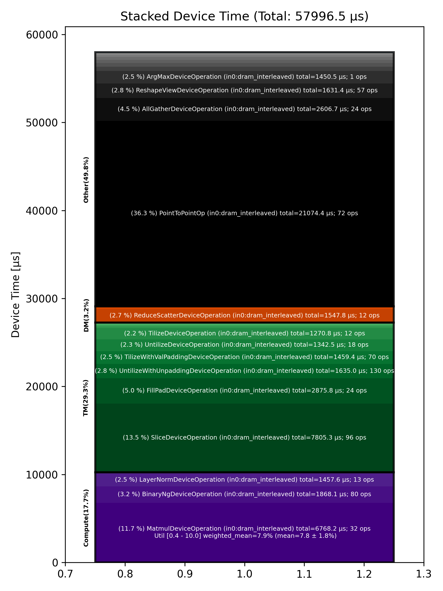

🚀 Performance Report 🚀 ======================== ID Total % Bound OP Code Device Device Time Op-to-Op Gap Cores DRAM DRAM % FLOPs FLOPs % Math Fidelity ----------------------------------------------------------------------------------------------------------------------------------------------------------------------------------- 8 0.0 % UntilizeWithUnpaddingDeviceOperation 1 2 μs 1 INT32 => INT32 56 0.0 % TypecastDeviceOperation 13 2 μs 555 μs 1 INT32 => UINT32 68 0.0 % ReshapeViewDeviceOperation 26 4 μs 128 μs 1 UINT32 => UINT32 110 0.0 % UntilizeWithUnpaddingDeviceOperation 7 2 μs 185 μs 1 UINT32 => UINT32 161 0.0 % EmbeddingsDeviceOperation 8 4 μs 243 μs 16 UINT32, BF16 => BF16 188 0.0 % TilizeWithValPaddingDeviceOperation 18 12 μs 277 μs 45 BF16 => BF16 208 0.0 % LayerNormDeviceOperation 5 112 μs 229 μs 1 BF16, BF16 => BF16 247 0.0 % SLOW MatmulDeviceOperation 32 x 2880 x 640 31 44 μs 582 μs 20 47 GB/s 16.5 % 2.7 TFLOPs 6.6 % HiFi2 BF16 x BFP8 => BF16 282 0.0 % NLPCreateQKVHeadsDecodeDeviceOperation 16 5 μs 193 μs 16 BF16 => BF16 299 0.0 % TilizeWithValPaddingDeviceOperation 29 7 μs 137 μs 1 INT32 => INT32 325 0.0 % TypecastDeviceOperation 27 2 μs 192 μs 1 INT32 => FP32 359 0.0 % SLOW MatmulDeviceOperation 32 x 32 x 32 10 7 μs 448 μs 1 2 GB/s 0.6 % 0.0 TFLOPs 0.4 % HiFi3 FP32 x FP32 => FP32 410 0.0 % UnaryNgDeviceOperation 16 3 μs 158 μs 72 FP32 => FP32 446 0.0 % BinaryNgDeviceOperation 11 8 μs 171 μs 72 FP32, FP32 => FP32 454 0.0 % TypecastDeviceOperation 3 2 μs 231 μs 1 FP32 => BF16 504 0.0 % ReshapeViewDeviceOperation 13 5 μs 247 μs 1 BF16 => BF16 522 0.0 % UnaryNgDeviceOperation 28 3 μs 262 μs 72 FP32 => FP32 569 0.0 % BinaryNgDeviceOperation 12 8 μs 265 μs 72 FP32, FP32 => FP32 585 0.0 % TypecastDeviceOperation 0 2 μs 219 μs 1 FP32 => BF16 614 0.0 % ReshapeViewDeviceOperation 3 5 μs 256 μs 1 BF16 => BF16 643 0.0 % ConcatDeviceOperation 25 1 μs 104 μs 2 BF16, BF16 => BF16 677 0.0 % ConcatDeviceOperation 27 1 μs 165 μs 2 BF16, BF16 => BF16 707 0.0 % ShardedToInterleavedDeviceOperation 25 1 μs 245 μs 16 BF16 => BF16 766 0.0 % RotaryEmbeddingDeviceOperation 11 8 μs 136 μs 16 BF16, BF16 => BF16 778 0.0 % SliceDeviceOperation 28 2 μs 145 μs 32 BF16 => BF16 803 0.0 % RepeatDeviceOperation 25 2 μs 249 μs 72 INT32 => INT32 849 0.0 % InterleavedToShardedDeviceOperation 4 1 μs 320 μs 16 BF16 => BF16 868 0.0 % PagedUpdateCacheDeviceOperation 26 4 μs 233 μs 16 BF16, BF16 => BF16 919 0.0 % TilizeWithValPaddingDeviceOperation 14 4 μs 251 μs 1 BF16 => BF16 952 0.0 % TilizeWithValPaddingDeviceOperation 13 7 μs 235 μs 1 INT32 => INT32 974 0.0 % BinaryNgDeviceOperation 7 3 μs 243 μs 72 INT32, INT32 => INT32 1017 0.0 % BinaryNgDeviceOperation 12 10 μs 287 μs 72 INT32, INT32 => BF16 1029 0.0 % BinaryNgDeviceOperation 27 6 μs 226 μs 72 BF16, BF16 => BF16 1071 0.0 % TilizeWithValPaddingDeviceOperation 6 7 μs 226 μs 1 INT32 => INT32 1115 0.0 % BinaryNgDeviceOperation 17 10 μs 228 μs 72 INT32, INT32 => BF16 1132 0.0 % BinaryNgDeviceOperation 30 4 μs 264 μs 72 BF16, BF16 => BF16 1157 0.0 % TernaryDeviceOperation 27 25 μs 273 μs 72 BF16, BF16 => BF16 1208 0.0 % PagedUpdateCacheDeviceOperation 13 4 μs 200 μs 16 BF16, BF16 => BF16 1237 0.0 % ShardedToInterleavedDeviceOperation 23 1 μs 238 μs 16 BF16 => BF16 1252 0.0 % RotaryEmbeddingDeviceOperation 26 8 μs 269 μs 16 BF16, BF16 => BF16 1282 0.0 % SliceDeviceOperation 24 2 μs 222 μs 32 BF16 => BF16 1329 0.0 % UntilizeWithUnpaddingDeviceOperation 4 3 μs 255 μs 1 BF16 => BF16 1376 0.0 % RepeatDeviceOperation 9 1 μs 113 μs 72 BF16 => BF16 1409 0.0 % TilizeWithValPaddingDeviceOperation 8 10 μs 163 μs 1 BF16 => BF16 1441 0.0 % SdpaDecodeDeviceOperation 8 17 μs 208 μs 72 BF16, BF16 => BF16 1442 0.0 % PermuteDeviceOperation 24 22 μs 121 μs 72 BF16 => BF16 1477 0.0 % ReshapeViewDeviceOperation 27 14 μs 218 μs 16 BF16 => BF16 1532 0.0 % SLOW MatmulDeviceOperation 32 x 512 x 2880 16 15 μs 650 μs 45 112 GB/s 39.0 % 6.3 TFLOPs 6.8 % HiFi2 BF16 x BFP8 => BF16 1553 0.0 % AllGatherDeviceOperation 0 83 μs 485 μs 24 BF16 => BF16 1579 0.0 % FillPadDeviceOperation 29 155 μs 55 μs 8 BF16 => BF16 1613 0.0 % FastReduceNCDeviceOperation 31 10 μs 43 μs 72 BF16 => BF16 1654 0.0 % SliceDeviceOperation 15 3 μs 229 μs 72 BF16 => BF16 1682 0.0 % BinaryNgDeviceOperation 20 5 μs 146 μs 72 BF16, BF16 => BF16 1699 0.0 % BinaryNgDeviceOperation 25 5 μs 173 μs 72 BF16, BF16 => BF16 1734 0.0 % LayerNormDeviceOperation 3 112 μs 275 μs 1 BF16, BF16 => BF16 1793 0.0 % SliceDeviceOperation 8 2 μs 123 μs 23 BF16 => BF16 1800 0.0 % UntilizeWithUnpaddingDeviceOperation 1 9 μs 246 μs 45 BF16 => BF16 1856 0.0 % SliceDeviceOperation 9 2 μs 259 μs 16 BF16 => BF16 1871 0.0 % TilizeWithValPaddingDeviceOperation 6 37 μs 221 μs 1 BF16 => BF16 1908 0.0 % SliceDeviceOperation 22 2 μs 221 μs 23 BF16 => BF16 1945 0.0 % UntilizeWithUnpaddingDeviceOperation 12 9 μs 228 μs 45 BF16 => BF16 1959 0.0 % SliceDeviceOperation 2 2 μs 84 μs 16 BF16 => BF16 2004 0.0 % TilizeWithValPaddingDeviceOperation 22 37 μs 147 μs 1 BF16 => BF16 2024 0.0 % CopyDeviceOperation 1 2 μs 65 μs 23 BF16 => BF16 2070 0.0 % CopyDeviceOperation 15 2 μs 154 μs 23 BF16 => BF16 2091 0.0 % CopyDeviceOperation 29 2 μs 241 μs 23 BF16 => BF16 2125 0.0 % CopyDeviceOperation 31 2 μs 78 μs 23 BF16 => BF16 2152 0.0 % PointToPointOp 24 28 μs 253 μs 1 BF16, BF16 => BF16 2164 0.0 % PointToPointOp 24 31 μs 371 μs 1 BF16, BF16 => BF16 2182 0.0 % PointToPointOp 25 30 μs 741 μs 1 BF16, BF16 => BF16 2222 0.1 % PointToPointOp 19 32 μs 7,907 μs 1 BF16, BF16 => BF16 2276 0.0 % PointToPointOp 10 29 μs 490 μs 1 BF16, BF16 => BF16 2282 0.0 % PointToPointOp 10 28 μs 562 μs 1 BF16, BF16 => BF16 2346 0.2 % UntilizeWithUnpaddingDeviceOperation 28 19 μs 16,203 μs 1 BF16 => BF16 2400 0.0 % UntilizeWithUnpaddingDeviceOperation 9 19 μs 89 μs 1 BF16 => BF16 2403 0.0 % UntilizeWithUnpaddingDeviceOperation 25 19 μs 134 μs 1 BF16 => BF16 2464 0.0 % UntilizeWithUnpaddingDeviceOperation 9 19 μs 65 μs 1 BF16 => BF16 2477 0.0 % ConcatDeviceOperation 31 2 μs 211 μs 64 BF16, BF16 => BF16 2510 0.0 % TilizeWithValPaddingDeviceOperation 7 10 μs 104 μs 2 BF16 => BF16 2553 0.0 % UntilizeWithUnpaddingDeviceOperation 12 27 μs 184 μs 2 BF16 => BF16 2585 0.0 % RepeatDeviceOperation 12 8 μs 195 μs 72 BF16 => BF16 2603 0.0 % TilizeWithValPaddingDeviceOperation 29 22 μs 238 μs 8 BF16 => BF16 2630 0.0 % SLOW MatmulDeviceOperation b={4} x 64 x 736 x 5760 14 207 μs 776 μs 60 98 GB/s 34.0 % 10.5 TFLOPs 8.5 % HiFi2 BF16 x BFP8 => BF16 2673 0.0 % ReduceScatterDeviceOperation 0 107 μs 497 μs 24 BF16 => BF16 2705 0.0 % AllGatherDeviceOperation 0 101 μs 429 μs 40 BF16 => BF16 2733 0.0 % BinaryNgDeviceOperation 31 49 μs 33 μs 72 BF16, BF16 => BF16 2754 0.0 % UntilizeDeviceOperation 24 110 μs 121 μs 60 BF16 => BF16 2814 0.0 % SliceDeviceOperation 11 608 μs 139 μs 72 BF16 => BF16 2828 0.0 % TilizeDeviceOperation 30 106 μs 1 μs 45 BF16 => BF16 2860 0.0 % UnaryNgDeviceOperation 30 16 μs 1 μs 72 BF16 => BF16 2903 0.0 % BinaryNgDeviceOperation 14 23 μs 54 μs 72 BF16, BF16 => BF16 2914 0.0 % UntilizeDeviceOperation 24 110 μs 227 μs 60 BF16 => BF16 2953 0.0 % SliceDeviceOperation 0 608 μs 129 μs 72 BF16 => BF16 2978 0.0 % TilizeDeviceOperation 24 106 μs 1 μs 45 BF16 => BF16 3031 0.0 % UnaryNgDeviceOperation 14 17 μs 1 μs 72 BF16 => BF16 3044 0.0 % BinaryNgDeviceOperation 26 23 μs 78 μs 72 BF16, BF16 => BF16 3102 0.0 % UnaryNgDeviceOperation 11 19 μs 211 μs 72 BF16 => BF16 3126 0.0 % BinaryNgDeviceOperation 15 22 μs 303 μs 72 BF16, BF16 => BF16 3142 0.0 % BinaryNgDeviceOperation 3 22 μs 224 μs 72 BF16, BF16 => BF16 3185 0.0 % SLOW MatmulDeviceOperation b={4} x 64 x 2880 x 736 0 230 μs 573 μs 23 45 GB/s 15.6 % 4.7 TFLOPs 10.0 % HiFi2 BF16 x BFP8 => BF16 3232 0.0 % BinaryNgDeviceOperation 9 9 μs 1 μs 72 BF16, BF16 => BF16 3259 0.0 % ReshapeViewDeviceOperation 17 161 μs 81 μs 72 BF16 => BF16 3290 0.0 % TypecastDeviceOperation 16 5 μs 93 μs 72 BF16 => FP32 3308 0.0 % SLOW MatmulDeviceOperation 32 x 2880 x 32 3 33 μs 477 μs 1 14 GB/s 4.9 % 0.2 TFLOPs 8.8 % HiFi2 FP32 x BFP8 => FP32 3333 0.0 % TypecastDeviceOperation 27 2 μs 77 μs 1 FP32 => BF16 3390 0.0 % FillPadDeviceOperation 11 3 μs 178 μs 1 BF16 => BF16 3404 0.0 % PadDeviceOperation 30 35 μs 301 μs 2 BF16 => BF16 3442 0.0 % FillPadDeviceOperation 20 5 μs 197 μs 1 BF16 => BF16 3483 0.0 % TopKDeviceOperation 17 44 μs 103 μs 1 BF16 => BF16 3513 0.0 % SliceDeviceOperation 12 1 μs 116 μs 1 BF16 => BF16 3546 0.0 % SliceDeviceOperation 16 1 μs 240 μs 1 UINT16 => UINT16 3568 0.0 % TypecastDeviceOperation 5 2 μs 109 μs 1 UINT16 => FP32 3617 0.0 % ReshapeViewDeviceOperation 8 5 μs 160 μs 16 FP32 => FP32 3648 0.0 % TypecastDeviceOperation 9 4 μs 251 μs 16 FP32 => INT32 3653 0.0 % UntilizeWithUnpaddingDeviceOperation 27 3 μs 275 μs 16 INT32 => INT32 3707 0.0 % UntilizeWithUnpaddingDeviceOperation 17 3 μs 238 μs 16 INT32 => INT32 3719 0.0 % PermuteDeviceOperation 2 3 μs 90 μs 16 INT32 => INT32 3750 0.0 % PermuteDeviceOperation 3 3 μs 158 μs 16 INT32 => INT32 3787 0.0 % ConcatDeviceOperation 29 2 μs 81 μs 32 INT32, INT32 => INT32 3813 0.0 % PermuteDeviceOperation 27 3 μs 196 μs 16 INT32 => INT32 3844 0.0 % TilizeWithValPaddingDeviceOperation 26 7 μs 265 μs 16 INT32 => INT32 3881 0.0 % SoftmaxDeviceOperation 0 23 μs 270 μs 72 BF16 => BF16 3921 0.0 % AllGatherDeviceOperation 0 63 μs 622 μs 24 INT32 => INT32 3938 0.0 % AllBroadcastDeviceOperation 8 58 μs 273 μs 4 BF16 => BF16 3987 0.0 % UntilizeWithUnpaddingDeviceOperation 21 7 μs 141 μs 1 BF16 => BF16 4014 0.0 % UntilizeWithUnpaddingDeviceOperation 7 7 μs 159 μs 1 BF16 => BF16 4046 0.0 % UntilizeWithUnpaddingDeviceOperation 7 7 μs 231 μs 1 BF16 => BF16 4072 0.0 % UntilizeWithUnpaddingDeviceOperation 1 7 μs 255 μs 1 BF16 => BF16 4125 0.0 % ConcatDeviceOperation 19 2 μs 259 μs 64 BF16, BF16 => BF16 4148 0.0 % TilizeWithValPaddingDeviceOperation 22 5 μs 276 μs 2 BF16 => BF16 4171 0.0 % ReshapeViewDeviceOperation 29 10 μs 261 μs 8 INT32 => INT32 4210 0.0 % SliceDeviceOperation 20 2 μs 229 μs 8 INT32 => INT32 4257 0.0 % UntilizeWithUnpaddingDeviceOperation 8 14 μs 245 μs 8 INT32 => INT32 4272 0.0 % SliceDeviceOperation 5 4 μs 272 μs 72 INT32 => INT32 4319 0.0 % TilizeWithValPaddingDeviceOperation 10 8 μs 271 μs 8 INT32 => INT32 4324 0.0 % BinaryNgDeviceOperation 26 11 μs 260 μs 72 INT32, INT32 => INT32 4371 0.0 % BinaryNgDeviceOperation 21 3 μs 229 μs 72 INT32, INT32 => INT32 4415 0.0 % ReshapeViewDeviceOperation 10 7 μs 232 μs 8 INT32 => INT32 4439 0.0 % ReshapeViewDeviceOperation 14 3 μs 222 μs 8 BF16 => BF16 4457 0.0 % UntilizeWithUnpaddingDeviceOperation 0 7 μs 249 μs 1 INT32 => INT32 4501 0.0 % UntilizeWithUnpaddingDeviceOperation 23 6 μs 242 μs 1 BF16 => BF16 4515 0.0 % ScatterDeviceOperation 25 60 μs 244 μs 1 BF16, INT32 => BF16 4575 0.0 % TilizeWithValPaddingDeviceOperation 10 5 μs 200 μs 64 BF16 => BF16 4597 0.0 % ReshapeViewDeviceOperation 23 23 μs 223 μs 2 BF16 => BF16 4630 0.0 % UntilizeDeviceOperation 15 4 μs 225 μs 2 BF16 => BF16 4670 0.0 % MeshPartitionDeviceOperation 17 2 μs 1,281 μs 64 BF16 => BF16 4703 0.0 % TilizeWithValPaddingDeviceOperation 10 5 μs 170 μs 2 BF16 => BF16 4732 0.0 % TransposeDeviceOperation 18 2 μs 187 μs 72 BF16 => BF16 4753 0.0 % ReshapeViewDeviceOperation 4 17 μs 256 μs 72 BF16 => BF16 4787 0.0 % BinaryNgDeviceOperation 21 125 μs 246 μs 72 BF16, BF16 => BF16 4826 0.0 % FillPadDeviceOperation 16 315 μs 115 μs 72 BF16 => BF16 4859 0.0 % FastReduceNCDeviceOperation 17 66 μs 1 μs 72 BF16 => BF16 4892 0.0 % SliceDeviceOperation 18 32 μs 140 μs 72 BF16 => BF16 4913 0.0 % ReduceScatterDeviceOperation 0 159 μs 830 μs 24 BF16 => BF16 4945 0.0 % AllGatherDeviceOperation 0 189 μs 1,805 μs 40 BF16 => BF16 4985 0.0 % SliceDeviceOperation 12 9 μs 1 μs 72 BF16 => BF16 5022 0.0 % SliceDeviceOperation 11 8 μs 120 μs 72 BF16 => BF16 5043 0.0 % SliceDeviceOperation 21 8 μs 247 μs 72 BF16 => BF16 5062 0.0 % SliceDeviceOperation 3 8 μs 236 μs 72 BF16 => BF16 5103 0.0 % CopyDeviceOperation 6 8 μs 267 μs 72 BF16 => BF16 5129 0.0 % CopyDeviceOperation 0 8 μs 229 μs 72 BF16 => BF16 5156 0.0 % CopyDeviceOperation 26 9 μs 75 μs 72 BF16 => BF16 5187 0.0 % CopyDeviceOperation 25 9 μs 211 μs 72 BF16 => BF16 5224 0.0 % PointToPointOp 24 364 μs 57 μs 1 BF16, BF16 => BF16 5288 0.0 % PointToPointOp 22 822 μs 84 μs 1 BF16, BF16 => BF16 5300 0.0 % PointToPointOp 19 539 μs 5 μs 1 BF16, BF16 => BF16 5304 0.0 % PointToPointOp 31 545 μs 4 μs 1 BF16, BF16 => BF16 5342 0.1 % PointToPointOp 10 474 μs 11,894 μs 1 BF16, BF16 => BF16 5354 0.0 % PointToPointOp 10 539 μs 5 μs 1 BF16, BF16 => BF16 5413 0.1 % UntilizeWithUnpaddingDeviceOperation 27 15 μs 8,352 μs 16 BF16 => BF16 5457 0.0 % UntilizeWithUnpaddingDeviceOperation 4 16 μs 1 μs 16 BF16 => BF16 5505 0.0 % UntilizeWithUnpaddingDeviceOperation 8 16 μs 1 μs 16 BF16 => BF16 5529 0.0 % UntilizeWithUnpaddingDeviceOperation 12 16 μs 1 μs 16 BF16 => BF16 5561 0.0 % ConcatDeviceOperation 12 3 μs 1 μs 16 BF16, BF16 => BF16 5586 0.0 % TilizeWithValPaddingDeviceOperation 20 92 μs 132 μs 45 BF16 => BF16 5621 0.0 % ReshapeViewDeviceOperation 23 28 μs 97 μs 72 BF16 => BF16 5635 0.0 % BinaryNgDeviceOperation 25 5 μs 211 μs 72 BF16, BF16 => BF16 5688 0.0 % LayerNormDeviceOperation 13 112 μs 245 μs 1 BF16, BF16 => BF16 5700 0.0 % SLOW MatmulDeviceOperation 32 x 2880 x 640 22 44 μs 554 μs 20 47 GB/s 16.5 % 2.7 TFLOPs 6.6 % HiFi2 BF16 x BFP8 => BF16 5754 0.0 % NLPCreateQKVHeadsDecodeDeviceOperation 16 5 μs 170 μs 16 BF16 => BF16 5780 0.0 % ShardedToInterleavedDeviceOperation 22 1 μs 110 μs 16 BF16 => BF16 5798 0.0 % RotaryEmbeddingDeviceOperation 3 8 μs 241 μs 16 BF16, BF16 => BF16 5829 0.0 % SliceDeviceOperation 27 2 μs 333 μs 32 BF16 => BF16 5868 0.0 % InterleavedToShardedDeviceOperation 30 1 μs 261 μs 16 BF16 => BF16 5905 0.0 % PagedUpdateCacheDeviceOperation 4 4 μs 239 μs 16 BF16, BF16 => BF16 5952 0.0 % TernaryDeviceOperation 9 25 μs 343 μs 72 BF16, BF16 => BF16 5957 0.0 % PagedUpdateCacheDeviceOperation 27 4 μs 184 μs 16 BF16, BF16 => BF16 5994 0.0 % ShardedToInterleavedDeviceOperation 28 1 μs 227 μs 16 BF16 => BF16 6028 0.0 % RotaryEmbeddingDeviceOperation 30 8 μs 108 μs 16 BF16, BF16 => BF16 6080 0.0 % SliceDeviceOperation 9 2 μs 132 μs 32 BF16 => BF16 6108 0.0 % UntilizeWithUnpaddingDeviceOperation 18 3 μs 97 μs 1 BF16 => BF16 6133 0.0 % RepeatDeviceOperation 23 2 μs 154 μs 72 BF16 => BF16 6146 0.0 % TilizeWithValPaddingDeviceOperation 24 10 μs 248 μs 1 BF16 => BF16 6179 0.0 % SdpaDecodeDeviceOperation 25 17 μs 296 μs 72 BF16, BF16 => BF16 6224 0.0 % PermuteDeviceOperation 5 22 μs 194 μs 72 BF16 => BF16 6272 0.0 % ReshapeViewDeviceOperation 9 14 μs 223 μs 16 BF16 => BF16 6279 0.0 % SLOW MatmulDeviceOperation 32 x 512 x 2880 10 15 μs 596 μs 45 114 GB/s 39.5 % 6.4 TFLOPs 6.9 % HiFi2 BF16 x BFP8 => BF16 6321 0.0 % AllGatherDeviceOperation 0 81 μs 471 μs 24 BF16 => BF16 6360 0.0 % FillPadDeviceOperation 13 155 μs 42 μs 8 BF16 => BF16 6379 0.0 % FastReduceNCDeviceOperation 29 9 μs 44 μs 72 BF16 => BF16 6408 0.0 % SliceDeviceOperation 1 3 μs 238 μs 72 BF16 => BF16 6465 0.0 % BinaryNgDeviceOperation 8 5 μs 291 μs 72 BF16, BF16 => BF16 6488 0.0 % BinaryNgDeviceOperation 13 5 μs 243 μs 72 BF16, BF16 => BF16 6499 23.8 % LayerNormDeviceOperation 25 112 μs 2,044,077 μs 1 BF16, BF16 => BF16 6549 0.0 % SliceDeviceOperation 23 2 μs 184 μs 23 BF16 => BF16 6576 0.0 % UntilizeWithUnpaddingDeviceOperation 5 9 μs 801 μs 45 BF16 => BF16 6597 0.0 % SliceDeviceOperation 27 2 μs 139 μs 16 BF16 => BF16 6655 0.0 % TilizeWithValPaddingDeviceOperation 10 37 μs 318 μs 1 BF16 => BF16 6686 0.0 % SliceDeviceOperation 11 2 μs 309 μs 23 BF16 => BF16 6713 0.0 % UntilizeWithUnpaddingDeviceOperation 12 9 μs 367 μs 45 BF16 => BF16 6740 0.0 % SliceDeviceOperation 22 2 μs 315 μs 16 BF16 => BF16 6759 0.0 % TilizeWithValPaddingDeviceOperation 2 37 μs 119 μs 1 BF16 => BF16 6790 0.0 % CopyDeviceOperation 3 2 μs 179 μs 23 BF16 => BF16 6837 0.0 % CopyDeviceOperation 23 2 μs 116 μs 23 BF16 => BF16 6871 0.0 % CopyDeviceOperation 14 2 μs 379 μs 23 BF16 => BF16 6913 0.0 % CopyDeviceOperation 8 2 μs 90 μs 23 BF16 => BF16 6920 0.0 % PointToPointOp 24 28 μs 113 μs 1 BF16, BF16 => BF16 6934 0.0 % PointToPointOp 28 35 μs 650 μs 1 BF16, BF16 => BF16 6990 0.1 % PointToPointOp 19 32 μs 8,668 μs 1 BF16, BF16 => BF16 6996 0.0 % PointToPointOp 19 30 μs 567 μs 1 BF16, BF16 => BF16 6998 0.0 % PointToPointOp 27 29 μs 705 μs 1 BF16, BF16 => BF16 7002 0.0 % PointToPointOp 19 28 μs 552 μs 1 BF16, BF16 => BF16 7124 0.1 % UntilizeWithUnpaddingDeviceOperation 22 19 μs 10,702 μs 1 BF16 => BF16 7146 0.0 % UntilizeWithUnpaddingDeviceOperation 28 19 μs 100 μs 1 BF16 => BF16 7178 0.0 % UntilizeWithUnpaddingDeviceOperation 28 19 μs 115 μs 1 BF16 => BF16 7231 0.0 % UntilizeWithUnpaddingDeviceOperation 10 19 μs 62 μs 1 BF16 => BF16 7254 0.0 % ConcatDeviceOperation 15 2 μs 172 μs 64 BF16, BF16 => BF16 7286 0.0 % TilizeWithValPaddingDeviceOperation 15 10 μs 125 μs 2 BF16 => BF16 7305 0.0 % UntilizeWithUnpaddingDeviceOperation 0 27 μs 183 μs 2 BF16 => BF16 7334 0.0 % RepeatDeviceOperation 3 8 μs 196 μs 72 BF16 => BF16 7384 0.0 % TilizeWithValPaddingDeviceOperation 13 22 μs 245 μs 8 BF16 => BF16 7414 0.0 % SLOW MatmulDeviceOperation b={4} x 64 x 736 x 5760 24 207 μs 1,435 μs 60 98 GB/s 33.9 % 10.5 TFLOPs 8.5 % HiFi2 BF16 x BFP8 => BF16 7441 0.0 % ReduceScatterDeviceOperation 0 104 μs 553 μs 24 BF16 => BF16 7473 0.0 % AllGatherDeviceOperation 0 101 μs 446 μs 40 BF16 => BF16 7505 0.0 % BinaryNgDeviceOperation 4 48 μs 70 μs 72 BF16, BF16 => BF16 7531 0.0 % UntilizeDeviceOperation 29 111 μs 126 μs 60 BF16 => BF16 7583 0.0 % SliceDeviceOperation 10 608 μs 153 μs 72 BF16 => BF16 7609 0.0 % TilizeDeviceOperation 12 106 μs 1 μs 45 BF16 => BF16 7643 0.0 % UnaryNgDeviceOperation 17 17 μs 1 μs 72 BF16 => BF16 7652 0.0 % BinaryNgDeviceOperation 26 23 μs 138 μs 72 BF16, BF16 => BF16 7689 0.0 % UntilizeDeviceOperation 0 109 μs 238 μs 60 BF16 => BF16 7741 0.0 % SliceDeviceOperation 19 608 μs 119 μs 72 BF16 => BF16 7766 0.0 % TilizeDeviceOperation 15 106 μs 1 μs 45 BF16 => BF16 7778 0.0 % UnaryNgDeviceOperation 24 17 μs 1 μs 72 BF16 => BF16 7818 0.0 % BinaryNgDeviceOperation 28 24 μs 1 μs 72 BF16, BF16 => BF16 7850 0.0 % UnaryNgDeviceOperation 28 19 μs 19 μs 72 BF16 => BF16 7896 0.0 % BinaryNgDeviceOperation 13 23 μs 250 μs 72 BF16, BF16 => BF16 7919 0.0 % BinaryNgDeviceOperation 6 23 μs 216 μs 72 BF16, BF16 => BF16 7941 0.0 % SLOW MatmulDeviceOperation b={4} x 64 x 2880 x 736 28 231 μs 559 μs 23 45 GB/s 15.6 % 4.7 TFLOPs 10.0 % HiFi2 BF16 x BFP8 => BF16 7998 0.0 % BinaryNgDeviceOperation 11 8 μs 1 μs 72 BF16, BF16 => BF16 8027 0.0 % ReshapeViewDeviceOperation 17 162 μs 82 μs 72 BF16 => BF16 8044 0.0 % TypecastDeviceOperation 30 5 μs 108 μs 72 BF16 => FP32 8091 0.0 % SLOW MatmulDeviceOperation 32 x 2880 x 32 4 33 μs 515 μs 1 14 GB/s 4.9 % 0.2 TFLOPs 8.8 % HiFi2 FP32 x BFP8 => FP32 8127 0.0 % TypecastDeviceOperation 10 2 μs 154 μs 1 FP32 => BF16 8138 0.0 % FillPadDeviceOperation 28 3 μs 173 μs 1 BF16 => BF16 8175 0.0 % PadDeviceOperation 6 35 μs 287 μs 2 BF16 => BF16 8204 0.0 % FillPadDeviceOperation 30 4 μs 230 μs 1 BF16 => BF16 8249 0.0 % TopKDeviceOperation 12 44 μs 255 μs 1 BF16 => BF16 8285 0.0 % SliceDeviceOperation 19 1 μs 223 μs 1 BF16 => BF16 8303 0.0 % SliceDeviceOperation 6 1 μs 253 μs 1 UINT16 => UINT16 8350 0.0 % TypecastDeviceOperation 11 2 μs 267 μs 1 UINT16 => FP32 8369 0.0 % ReshapeViewDeviceOperation 4 5 μs 277 μs 16 FP32 => FP32 8410 0.0 % TypecastDeviceOperation 16 4 μs 246 μs 16 FP32 => INT32 8433 0.0 % UntilizeWithUnpaddingDeviceOperation 4 3 μs 262 μs 16 INT32 => INT32 8468 0.0 % UntilizeWithUnpaddingDeviceOperation 22 3 μs 253 μs 16 INT32 => INT32 8501 0.0 % PermuteDeviceOperation 23 3 μs 332 μs 16 INT32 => INT32 8525 0.0 % PermuteDeviceOperation 31 3 μs 263 μs 16 INT32 => INT32 8568 0.0 % ConcatDeviceOperation 13 2 μs 226 μs 32 INT32, INT32 => INT32 8598 0.0 % PermuteDeviceOperation 15 3 μs 119 μs 16 INT32 => INT32 8638 0.0 % TilizeWithValPaddingDeviceOperation 11 7 μs 153 μs 16 INT32 => INT32 8673 0.0 % SoftmaxDeviceOperation 8 23 μs 264 μs 72 BF16 => BF16 8689 0.0 % AllGatherDeviceOperation 0 63 μs 649 μs 24 INT32 => INT32 8706 0.0 % AllBroadcastDeviceOperation 8 57 μs 256 μs 4 BF16 => BF16 8755 0.0 % UntilizeWithUnpaddingDeviceOperation 21 7 μs 141 μs 1 BF16 => BF16 8801 0.0 % UntilizeWithUnpaddingDeviceOperation 8 7 μs 152 μs 1 BF16 => BF16 8820 0.0 % UntilizeWithUnpaddingDeviceOperation 22 7 μs 232 μs 1 BF16 => BF16 8845 0.0 % UntilizeWithUnpaddingDeviceOperation 31 7 μs 254 μs 1 BF16 => BF16 8896 0.0 % ConcatDeviceOperation 9 2 μs 262 μs 64 BF16, BF16 => BF16 8929 0.0 % TilizeWithValPaddingDeviceOperation 8 5 μs 274 μs 2 BF16 => BF16 8942 0.0 % ReshapeViewDeviceOperation 7 10 μs 273 μs 8 INT32 => INT32 8987 0.0 % SliceDeviceOperation 17 2 μs 239 μs 8 INT32 => INT32 9025 0.0 % UntilizeWithUnpaddingDeviceOperation 8 14 μs 242 μs 8 INT32 => INT32 9035 0.0 % SliceDeviceOperation 29 4 μs 275 μs 72 INT32 => INT32 9083 0.0 % TilizeWithValPaddingDeviceOperation 17 8 μs 247 μs 8 INT32 => INT32 9121 0.0 % BinaryNgDeviceOperation 8 11 μs 263 μs 72 INT32, INT32 => INT32 9135 0.0 % BinaryNgDeviceOperation 6 3 μs 261 μs 72 INT32, INT32 => INT32 9183 0.0 % ReshapeViewDeviceOperation 10 7 μs 243 μs 8 INT32 => INT32 9194 0.0 % ReshapeViewDeviceOperation 28 3 μs 249 μs 8 BF16 => BF16 9222 0.0 % UntilizeWithUnpaddingDeviceOperation 3 7 μs 243 μs 1 INT32 => INT32 9269 0.0 % UntilizeWithUnpaddingDeviceOperation 23 6 μs 261 μs 1 BF16 => BF16 9297 0.0 % ScatterDeviceOperation 4 60 μs 251 μs 1 BF16, INT32 => BF16 9332 0.0 % TilizeWithValPaddingDeviceOperation 22 5 μs 222 μs 64 BF16 => BF16 9365 0.0 % ReshapeViewDeviceOperation 23 23 μs 238 μs 2 BF16 => BF16 9378 0.0 % UntilizeDeviceOperation 24 4 μs 282 μs 2 BF16 => BF16 9435 0.0 % MeshPartitionDeviceOperation 4 2 μs 1,369 μs 64 BF16 => BF16 9456 0.0 % TilizeWithValPaddingDeviceOperation 5 5 μs 138 μs 2 BF16 => BF16 9494 0.0 % TransposeDeviceOperation 15 2 μs 182 μs 72 BF16 => BF16 9529 0.0 % ReshapeViewDeviceOperation 12 17 μs 254 μs 72 BF16 => BF16 9553 0.0 % BinaryNgDeviceOperation 4 124 μs 249 μs 72 BF16, BF16 => BF16 9600 0.0 % FillPadDeviceOperation 9 315 μs 113 μs 72 BF16 => BF16 9627 0.0 % FastReduceNCDeviceOperation 17 66 μs 1 μs 72 BF16 => BF16 9659 0.0 % SliceDeviceOperation 17 34 μs 112 μs 72 BF16 => BF16 9681 0.0 % ReduceScatterDeviceOperation 0 153 μs 818 μs 24 BF16 => BF16 9713 0.0 % AllGatherDeviceOperation 0 188 μs 362 μs 40 BF16 => BF16 9750 0.0 % SliceDeviceOperation 15 8 μs 1 μs 72 BF16 => BF16 9776 0.0 % SliceDeviceOperation 5 8 μs 137 μs 72 BF16 => BF16 9806 0.0 % SliceDeviceOperation 7 8 μs 233 μs 72 BF16 => BF16 9856 0.0 % SliceDeviceOperation 9 8 μs 241 μs 72 BF16 => BF16 9871 0.0 % CopyDeviceOperation 6 8 μs 100 μs 72 BF16 => BF16 9906 0.0 % CopyDeviceOperation 20 8 μs 135 μs 72 BF16 => BF16 9938 0.0 % CopyDeviceOperation 20 8 μs 67 μs 72 BF16 => BF16 9977 0.0 % CopyDeviceOperation 12 8 μs 266 μs 72 BF16 => BF16 9992 0.0 % PointToPointOp 24 364 μs 3 μs 1 BF16, BF16 => BF16 9996 0.0 % PointToPointOp 16 545 μs 5 μs 1 BF16, BF16 => BF16 10008 0.0 % PointToPointOp 20 835 μs 67 μs 1 BF16, BF16 => BF16 10134 0.2 % PointToPointOp 9 471 μs 15,006 μs 1 BF16, BF16 => BF16 10144 0.0 % PointToPointOp 5 544 μs 4 μs 1 BF16, BF16 => BF16 10146 0.0 % PointToPointOp 9 539 μs 5 μs 1 BF16, BF16 => BF16 10201 0.0 % UntilizeWithUnpaddingDeviceOperation 12 15 μs 1 μs 16 BF16 => BF16 10218 0.0 % UntilizeWithUnpaddingDeviceOperation 28 15 μs 98 μs 16 BF16 => BF16 10262 0.0 % UntilizeWithUnpaddingDeviceOperation 15 15 μs 121 μs 16 BF16 => BF16 10286 0.0 % UntilizeWithUnpaddingDeviceOperation 7 15 μs 61 μs 16 BF16 => BF16 10324 0.0 % ConcatDeviceOperation 22 3 μs 154 μs 16 BF16, BF16 => BF16 10344 0.0 % TilizeWithValPaddingDeviceOperation 1 92 μs 127 μs 45 BF16 => BF16 10370 0.0 % ReshapeViewDeviceOperation 24 28 μs 89 μs 72 BF16 => BF16 10428 0.0 % BinaryNgDeviceOperation 18 5 μs 226 μs 72 BF16, BF16 => BF16 10458 0.0 % LayerNormDeviceOperation 16 112 μs 228 μs 1 BF16, BF16 => BF16 10489 0.0 % SLOW MatmulDeviceOperation 32 x 2880 x 640 21 44 μs 729 μs 20 47 GB/s 16.5 % 2.7 TFLOPs 6.6 % HiFi2 BF16 x BFP8 => BF16 10522 0.0 % NLPCreateQKVHeadsDecodeDeviceOperation 16 5 μs 163 μs 16 BF16 => BF16 10561 0.0 % ShardedToInterleavedDeviceOperation 8 1 μs 123 μs 16 BF16 => BF16 10585 0.0 % RotaryEmbeddingDeviceOperation 12 8 μs 249 μs 16 BF16, BF16 => BF16 10614 0.0 % SliceDeviceOperation 15 2 μs 260 μs 32 BF16 => BF16 10654 0.0 % InterleavedToShardedDeviceOperation 11 1 μs 244 μs 16 BF16 => BF16 10677 0.0 % PagedUpdateCacheDeviceOperation 23 4 μs 245 μs 16 BF16, BF16 => BF16 10715 0.0 % PagedUpdateCacheDeviceOperation 17 4 μs 247 μs 16 BF16, BF16 => BF16 10724 0.0 % ShardedToInterleavedDeviceOperation 26 1 μs 255 μs 16 BF16 => BF16 10772 0.0 % RotaryEmbeddingDeviceOperation 22 8 μs 271 μs 16 BF16, BF16 => BF16 10790 0.0 % SliceDeviceOperation 3 2 μs 246 μs 32 BF16 => BF16 10828 0.0 % SdpaDecodeDeviceOperation 30 17 μs 328 μs 72 BF16, BF16 => BF16 10865 0.0 % PermuteDeviceOperation 4 22 μs 212 μs 72 BF16 => BF16 10899 0.0 % ReshapeViewDeviceOperation 21 14 μs 210 μs 16 BF16 => BF16 10916 0.0 % SLOW MatmulDeviceOperation 32 x 512 x 2880 22 15 μs 424 μs 45 112 GB/s 39.0 % 6.3 TFLOPs 6.8 % HiFi2 BF16 x BFP8 => BF16 10961 0.0 % AllGatherDeviceOperation 0 81 μs 475 μs 24 BF16 => BF16 10987 0.0 % FillPadDeviceOperation 29 161 μs 55 μs 8 BF16 => BF16 11015 0.0 % FastReduceNCDeviceOperation 2 10 μs 107 μs 72 BF16 => BF16 11066 0.0 % SliceDeviceOperation 16 3 μs 228 μs 72 BF16 => BF16 11097 0.0 % BinaryNgDeviceOperation 12 5 μs 126 μs 72 BF16, BF16 => BF16 11115 0.0 % BinaryNgDeviceOperation 29 5 μs 157 μs 72 BF16, BF16 => BF16 11141 0.0 % LayerNormDeviceOperation 27 112 μs 212 μs 1 BF16, BF16 => BF16 11201 0.0 % SliceDeviceOperation 8 2 μs 146 μs 23 BF16 => BF16 11231 0.0 % UntilizeWithUnpaddingDeviceOperation 10 9 μs 97 μs 45 BF16 => BF16 11261 0.0 % SliceDeviceOperation 19 2 μs 158 μs 16 BF16 => BF16 11287 0.0 % TilizeWithValPaddingDeviceOperation 14 38 μs 243 μs 1 BF16 => BF16 11308 0.0 % SliceDeviceOperation 30 2 μs 213 μs 23 BF16 => BF16 11351 0.0 % UntilizeWithUnpaddingDeviceOperation 14 9 μs 254 μs 45 BF16 => BF16 11389 0.0 % SliceDeviceOperation 19 2 μs 253 μs 16 BF16 => BF16 11403 0.0 % TilizeWithValPaddingDeviceOperation 29 38 μs 251 μs 1 BF16 => BF16 11452 0.0 % CopyDeviceOperation 18 2 μs 207 μs 23 BF16 => BF16 11460 0.0 % CopyDeviceOperation 26 2 μs 249 μs 23 BF16 => BF16 11515 0.0 % CopyDeviceOperation 17 2 μs 91 μs 23 BF16 => BF16 11528 0.0 % CopyDeviceOperation 1 2 μs 155 μs 23 BF16 => BF16 11560 0.0 % PointToPointOp 24 28 μs 252 μs 1 BF16, BF16 => BF16 11572 0.0 % PointToPointOp 24 32 μs 359 μs 1 BF16, BF16 => BF16 11636 0.0 % PointToPointOp 19 29 μs 288 μs 1 BF16, BF16 => BF16 11640 0.0 % PointToPointOp 31 34 μs 521 μs 1 BF16, BF16 => BF16 11642 0.0 % PointToPointOp 19 28 μs 735 μs 1 BF16, BF16 => BF16 11702 0.2 % PointToPointOp 9 32 μs 13,411 μs 1 BF16, BF16 => BF16 11770 0.2 % UntilizeWithUnpaddingDeviceOperation 16 19 μs 15,119 μs 1 BF16 => BF16 11806 0.0 % UntilizeWithUnpaddingDeviceOperation 11 19 μs 93 μs 1 BF16 => BF16 11831 0.0 % UntilizeWithUnpaddingDeviceOperation 14 19 μs 219 μs 1 BF16 => BF16 11845 0.0 % UntilizeWithUnpaddingDeviceOperation 27 19 μs 61 μs 1 BF16 => BF16 11888 0.0 % ConcatDeviceOperation 5 2 μs 156 μs 64 BF16, BF16 => BF16 11918 0.0 % TilizeWithValPaddingDeviceOperation 7 10 μs 106 μs 2 BF16 => BF16 11961 0.0 % UntilizeWithUnpaddingDeviceOperation 12 27 μs 194 μs 2 BF16 => BF16 11977 0.0 % RepeatDeviceOperation 0 8 μs 176 μs 72 BF16 => BF16 12021 0.0 % TilizeWithValPaddingDeviceOperation 23 22 μs 234 μs 8 BF16 => BF16 12052 0.0 % SLOW MatmulDeviceOperation b={4} x 64 x 736 x 5760 12 208 μs 913 μs 60 97 GB/s 33.8 % 10.4 TFLOPs 8.5 % HiFi2 BF16 x BFP8 => BF16 12081 0.0 % ReduceScatterDeviceOperation 0 102 μs 476 μs 24 BF16 => BF16 12113 0.0 % AllGatherDeviceOperation 0 98 μs 389 μs 40 BF16 => BF16 12149 0.0 % BinaryNgDeviceOperation 23 49 μs 33 μs 72 BF16, BF16 => BF16 12193 0.0 % UntilizeDeviceOperation 8 110 μs 121 μs 60 BF16 => BF16 12212 0.0 % SliceDeviceOperation 22 607 μs 137 μs 72 BF16 => BF16 12232 0.0 % TilizeDeviceOperation 1 106 μs 1 μs 45 BF16 => BF16 12289 0.0 % UnaryNgDeviceOperation 8 17 μs 1 μs 72 BF16 => BF16 12292 0.0 % BinaryNgDeviceOperation 26 22 μs 54 μs 72 BF16, BF16 => BF16 12325 0.0 % UntilizeDeviceOperation 27 109 μs 218 μs 60 BF16 => BF16 12381 0.0 % SliceDeviceOperation 19 608 μs 124 μs 72 BF16 => BF16 12416 0.0 % TilizeDeviceOperation 9 106 μs 1 μs 45 BF16 => BF16 12446 0.0 % UnaryNgDeviceOperation 11 17 μs 1 μs 72 BF16 => BF16 12451 0.0 % BinaryNgDeviceOperation 25 23 μs 1 μs 72 BF16, BF16 => BF16 12508 0.0 % UnaryNgDeviceOperation 18 19 μs 37 μs 72 BF16 => BF16 12532 0.0 % BinaryNgDeviceOperation 22 23 μs 255 μs 72 BF16, BF16 => BF16 12564 0.0 % BinaryNgDeviceOperation 22 23 μs 223 μs 72 BF16, BF16 => BF16 12609 0.0 % SLOW MatmulDeviceOperation b={4} x 64 x 2880 x 736 11 230 μs 500 μs 23 45 GB/s 15.6 % 4.7 TFLOPs 10.0 % HiFi2 BF16 x BFP8 => BF16 12615 0.0 % BinaryNgDeviceOperation 2 8 μs 1 μs 72 BF16, BF16 => BF16 12667 0.0 % ReshapeViewDeviceOperation 17 163 μs 84 μs 72 BF16 => BF16 12690 0.0 % TypecastDeviceOperation 20 5 μs 150 μs 72 BF16 => FP32 12708 0.0 % SLOW MatmulDeviceOperation 32 x 2880 x 32 22 33 μs 459 μs 1 14 GB/s 5.0 % 0.2 TFLOPs 8.8 % HiFi2 FP32 x BFP8 => FP32 12739 0.0 % TypecastDeviceOperation 25 2 μs 85 μs 1 FP32 => BF16 12788 0.0 % FillPadDeviceOperation 22 3 μs 174 μs 1 BF16 => BF16 12827 0.0 % PadDeviceOperation 17 35 μs 251 μs 2 BF16 => BF16 12842 0.0 % FillPadDeviceOperation 28 5 μs 199 μs 1 BF16 => BF16 12885 0.0 % TopKDeviceOperation 23 44 μs 96 μs 1 BF16 => BF16 12918 0.0 % SliceDeviceOperation 15 1 μs 119 μs 1 BF16 => BF16 12939 0.0 % SliceDeviceOperation 29 1 μs 240 μs 1 UINT16 => UINT16 12974 0.0 % TypecastDeviceOperation 7 2 μs 111 μs 1 UINT16 => FP32 13011 0.0 % ReshapeViewDeviceOperation 21 5 μs 146 μs 16 FP32 => FP32 13057 0.0 % TypecastDeviceOperation 8 4 μs 249 μs 16 FP32 => INT32 13070 0.0 % UntilizeWithUnpaddingDeviceOperation 7 3 μs 254 μs 16 INT32 => INT32 13110 0.0 % UntilizeWithUnpaddingDeviceOperation 15 3 μs 248 μs 16 INT32 => INT32 13152 0.0 % PermuteDeviceOperation 9 3 μs 100 μs 16 INT32 => INT32 13179 0.0 % PermuteDeviceOperation 17 3 μs 168 μs 16 INT32 => INT32 13196 0.0 % ConcatDeviceOperation 30 2 μs 230 μs 32 INT32, INT32 => INT32 13223 0.0 % PermuteDeviceOperation 2 3 μs 107 μs 16 INT32 => INT32 13256 0.0 % TilizeWithValPaddingDeviceOperation 1 7 μs 164 μs 16 INT32 => INT32 13300 0.0 % SoftmaxDeviceOperation 22 23 μs 284 μs 72 BF16 => BF16 13329 0.0 % AllGatherDeviceOperation 0 61 μs 621 μs 24 INT32 => INT32 13346 0.0 % AllBroadcastDeviceOperation 8 54 μs 255 μs 4 BF16 => BF16 13389 0.0 % UntilizeWithUnpaddingDeviceOperation 31 7 μs 124 μs 1 BF16 => BF16 13438 0.0 % UntilizeWithUnpaddingDeviceOperation 11 7 μs 160 μs 1 BF16 => BF16 13453 0.0 % UntilizeWithUnpaddingDeviceOperation 31 7 μs 238 μs 1 BF16 => BF16 13493 0.0 % UntilizeWithUnpaddingDeviceOperation 23 7 μs 101 μs 1 BF16 => BF16 13524 0.0 % ConcatDeviceOperation 22 2 μs 164 μs 64 BF16, BF16 => BF16 13564 0.0 % TilizeWithValPaddingDeviceOperation 18 5 μs 262 μs 2 BF16 => BF16 13588 0.0 % ReshapeViewDeviceOperation 22 10 μs 328 μs 8 INT32 => INT32 13607 0.0 % SliceDeviceOperation 2 2 μs 208 μs 8 INT32 => INT32 13652 0.0 % UntilizeWithUnpaddingDeviceOperation 22 14 μs 252 μs 8 INT32 => INT32 13685 0.0 % SliceDeviceOperation 23 4 μs 116 μs 72 INT32 => INT32 13710 0.0 % TilizeWithValPaddingDeviceOperation 7 8 μs 137 μs 8 INT32 => INT32 13751 0.0 % BinaryNgDeviceOperation 14 11 μs 284 μs 72 INT32, INT32 => INT32 13780 0.0 % BinaryNgDeviceOperation 22 3 μs 230 μs 72 INT32, INT32 => INT32 13817 0.0 % ReshapeViewDeviceOperation 12 7 μs 228 μs 8 INT32 => INT32 13828 0.0 % ReshapeViewDeviceOperation 26 3 μs 253 μs 8 BF16 => BF16 13879 0.0 % UntilizeWithUnpaddingDeviceOperation 14 7 μs 266 μs 1 INT32 => INT32 13903 0.0 % UntilizeWithUnpaddingDeviceOperation 6 6 μs 241 μs 1 BF16 => BF16 13938 0.0 % ScatterDeviceOperation 20 60 μs 253 μs 1 BF16, INT32 => BF16 13970 0.0 % TilizeWithValPaddingDeviceOperation 20 5 μs 206 μs 64 BF16 => BF16 13996 0.0 % ReshapeViewDeviceOperation 30 23 μs 225 μs 2 BF16 => BF16 14047 0.0 % UntilizeDeviceOperation 10 4 μs 230 μs 2 BF16 => BF16 14064 0.0 % MeshPartitionDeviceOperation 2 2 μs 1,349 μs 64 BF16 => BF16 14096 0.0 % TilizeWithValPaddingDeviceOperation 5 5 μs 123 μs 2 BF16 => BF16 14121 0.0 % TransposeDeviceOperation 0 2 μs 201 μs 72 BF16 => BF16 14177 0.0 % ReshapeViewDeviceOperation 8 17 μs 284 μs 72 BF16 => BF16 14203 0.0 % BinaryNgDeviceOperation 17 128 μs 235 μs 72 BF16, BF16 => BF16 14225 0.0 % FillPadDeviceOperation 4 315 μs 148 μs 72 BF16 => BF16 14270 0.0 % FastReduceNCDeviceOperation 11 66 μs 1 μs 72 BF16 => BF16 14293 0.0 % SliceDeviceOperation 23 35 μs 124 μs 72 BF16 => BF16 14321 0.0 % ReduceScatterDeviceOperation 0 151 μs 835 μs 24 BF16 => BF16 14353 0.0 % AllGatherDeviceOperation 0 186 μs 355 μs 40 BF16 => BF16 14381 0.0 % SliceDeviceOperation 31 8 μs 1 μs 72 BF16 => BF16 14404 0.0 % SliceDeviceOperation 26 8 μs 108 μs 72 BF16 => BF16 14445 0.0 % SliceDeviceOperation 31 8 μs 237 μs 72 BF16 => BF16 14470 0.0 % SliceDeviceOperation 3 8 μs 315 μs 72 BF16 => BF16 14529 0.0 % CopyDeviceOperation 8 9 μs 250 μs 72 BF16 => BF16 14552 0.0 % CopyDeviceOperation 13 8 μs 209 μs 72 BF16 => BF16 14588 0.0 % CopyDeviceOperation 18 8 μs 72 μs 72 BF16 => BF16 14597 0.0 % CopyDeviceOperation 27 9 μs 151 μs 72 BF16 => BF16 14632 0.0 % PointToPointOp 24 364 μs 88 μs 1 BF16, BF16 => BF16 14750 24.9 % PointToPointOp 10 420 μs 2,136,901 μs 1 BF16, BF16 => BF16 14756 0.0 % PointToPointOp 10 534 μs 5 μs 1 BF16, BF16 => BF16 14768 0.0 % PointToPointOp 14 894 μs 5 μs 1 BF16, BF16 => BF16 14808 0.0 % PointToPointOp 4 543 μs 3 μs 1 BF16, BF16 => BF16 14810 0.0 % PointToPointOp 8 538 μs 5 μs 1 BF16, BF16 => BF16 14820 24.9 % UntilizeWithUnpaddingDeviceOperation 26 15 μs 2,134,727 μs 16 BF16 => BF16 14873 0.0 % UntilizeWithUnpaddingDeviceOperation 12 16 μs 1 μs 16 BF16 => BF16 14913 0.0 % UntilizeWithUnpaddingDeviceOperation 8 16 μs 1 μs 16 BF16 => BF16 14937 0.0 % UntilizeWithUnpaddingDeviceOperation 12 16 μs 1 μs 16 BF16 => BF16 14949 0.0 % ConcatDeviceOperation 27 3 μs 170 μs 16 BF16, BF16 => BF16 14990 0.0 % TilizeWithValPaddingDeviceOperation 7 92 μs 137 μs 45 BF16 => BF16 15012 0.0 % ReshapeViewDeviceOperation 26 29 μs 121 μs 72 BF16 => BF16 15073 0.0 % BinaryNgDeviceOperation 8 5 μs 218 μs 72 BF16, BF16 => BF16 15100 0.0 % LayerNormDeviceOperation 18 112 μs 229 μs 1 BF16, BF16 => BF16 15137 0.0 % SLOW MatmulDeviceOperation 32 x 2880 x 640 11 44 μs 805 μs 20 47 GB/s 16.5 % 2.7 TFLOPs 6.6 % HiFi2 BF16 x BFP8 => BF16 15153 0.0 % NLPCreateQKVHeadsDecodeDeviceOperation 4 5 μs 169 μs 16 BF16 => BF16 15175 0.0 % ShardedToInterleavedDeviceOperation 2 1 μs 128 μs 16 BF16 => BF16 15222 0.0 % RotaryEmbeddingDeviceOperation 15 8 μs 328 μs 16 BF16, BF16 => BF16 15259 0.0 % SliceDeviceOperation 17 2 μs 246 μs 32 BF16 => BF16 15277 0.0 % InterleavedToShardedDeviceOperation 31 1 μs 259 μs 16 BF16 => BF16 15315 0.0 % PagedUpdateCacheDeviceOperation 21 4 μs 231 μs 16 BF16, BF16 => BF16 15353 0.0 % PagedUpdateCacheDeviceOperation 12 4 μs 243 μs 16 BF16, BF16 => BF16 15370 0.0 % ShardedToInterleavedDeviceOperation 28 1 μs 231 μs 16 BF16 => BF16 15419 0.0 % RotaryEmbeddingDeviceOperation 17 8 μs 123 μs 16 BF16, BF16 => BF16 15445 0.0 % SliceDeviceOperation 23 2 μs 128 μs 32 BF16 => BF16 15474 0.0 % SdpaDecodeDeviceOperation 20 17 μs 179 μs 72 BF16, BF16 => BF16 15503 0.0 % PermuteDeviceOperation 6 22 μs 110 μs 72 BF16 => BF16 15542 0.0 % ReshapeViewDeviceOperation 15 14 μs 230 μs 16 BF16 => BF16 15561 0.0 % SLOW MatmulDeviceOperation 32 x 512 x 2880 30 15 μs 603 μs 45 114 GB/s 39.5 % 6.3 TFLOPs 6.9 % HiFi2 BF16 x BFP8 => BF16 15601 0.0 % AllGatherDeviceOperation 0 87 μs 508 μs 24 BF16 => BF16 15620 0.0 % FillPadDeviceOperation 26 155 μs 47 μs 8 BF16 => BF16 15654 0.0 % FastReduceNCDeviceOperation 3 10 μs 35 μs 72 BF16 => BF16 15707 0.0 % SliceDeviceOperation 17 3 μs 224 μs 72 BF16 => BF16 15733 0.0 % BinaryNgDeviceOperation 23 5 μs 297 μs 72 BF16, BF16 => BF16 15776 0.0 % BinaryNgDeviceOperation 9 5 μs 257 μs 72 BF16, BF16 => BF16 15801 0.0 % LayerNormDeviceOperation 12 112 μs 210 μs 1 BF16, BF16 => BF16 15817 0.0 % SliceDeviceOperation 0 2 μs 129 μs 23 BF16 => BF16 15848 0.0 % UntilizeWithUnpaddingDeviceOperation 1 9 μs 262 μs 45 BF16 => BF16 15898 0.0 % SliceDeviceOperation 16 2 μs 280 μs 16 BF16 => BF16 15934 0.0 % TilizeWithValPaddingDeviceOperation 11 37 μs 238 μs 1 BF16 => BF16 15961 0.0 % SliceDeviceOperation 12 2 μs 224 μs 23 BF16 => BF16 16000 0.0 % UntilizeWithUnpaddingDeviceOperation 9 9 μs 247 μs 45 BF16 => BF16 16007 0.0 % SliceDeviceOperation 2 2 μs 254 μs 16 BF16 => BF16 16043 0.0 % TilizeWithValPaddingDeviceOperation 29 37 μs 267 μs 1 BF16 => BF16 16093 0.0 % CopyDeviceOperation 19 2 μs 205 μs 23 BF16 => BF16 16119 0.0 % CopyDeviceOperation 14 2 μs 110 μs 23 BF16 => BF16 16159 0.0 % CopyDeviceOperation 10 2 μs 242 μs 23 BF16 => BF16 16167 0.0 % CopyDeviceOperation 2 2 μs 104 μs 23 BF16 => BF16 16198 0.0 % PointToPointOp 16 31 μs 660 μs 1 BF16, BF16 => BF16 16212 0.0 % PointToPointOp 24 32 μs 756 μs 1 BF16, BF16 => BF16 16228 0.0 % PointToPointOp 17 30 μs 430 μs 1 BF16, BF16 => BF16 16230 0.0 % PointToPointOp 25 29 μs 558 μs 1 BF16, BF16 => BF16 16272 0.0 % PointToPointOp 27 28 μs 192 μs 1 BF16, BF16 => BF16 16330 0.0 % PointToPointOp 10 28 μs 502 μs 1 BF16, BF16 => BF16 16407 0.0 % UntilizeWithUnpaddingDeviceOperation 14 19 μs 4,106 μs 1 BF16 => BF16 16419 0.0 % UntilizeWithUnpaddingDeviceOperation 25 19 μs 103 μs 1 BF16 => BF16 16478 0.0 % UntilizeWithUnpaddingDeviceOperation 11 19 μs 120 μs 1 BF16 => BF16 16503 0.0 % UntilizeWithUnpaddingDeviceOperation 14 19 μs 62 μs 1 BF16 => BF16 16540 0.0 % ConcatDeviceOperation 18 2 μs 169 μs 64 BF16, BF16 => BF16 16575 0.0 % TilizeWithValPaddingDeviceOperation 10 10 μs 121 μs 2 BF16 => BF16 16607 0.0 % UntilizeWithUnpaddingDeviceOperation 10 27 μs 214 μs 2 BF16 => BF16 16621 0.0 % RepeatDeviceOperation 31 8 μs 189 μs 72 BF16 => BF16 16670 0.0 % TilizeWithValPaddingDeviceOperation 11 22 μs 244 μs 8 BF16 => BF16 16704 0.0 % SLOW MatmulDeviceOperation b={4} x 64 x 736 x 5760 19 208 μs 614 μs 60 97 GB/s 33.8 % 10.4 TFLOPs 8.4 % HiFi2 BF16 x BFP8 => BF16 16721 0.0 % ReduceScatterDeviceOperation 0 103 μs 500 μs 24 BF16 => BF16 16753 0.0 % AllGatherDeviceOperation 0 101 μs 438 μs 40 BF16 => BF16 16790 0.0 % BinaryNgDeviceOperation 15 48 μs 35 μs 72 BF16, BF16 => BF16 16820 0.0 % UntilizeDeviceOperation 22 111 μs 133 μs 60 BF16 => BF16 16840 0.0 % SliceDeviceOperation 1 608 μs 191 μs 72 BF16 => BF16 16873 0.0 % TilizeDeviceOperation 0 106 μs 1 μs 45 BF16 => BF16 16923 0.0 % UnaryNgDeviceOperation 17 16 μs 1 μs 72 BF16 => BF16 16945 0.0 % BinaryNgDeviceOperation 4 23 μs 41 μs 72 BF16, BF16 => BF16 16965 0.0 % UntilizeDeviceOperation 27 109 μs 215 μs 60 BF16 => BF16 17002 0.0 % SliceDeviceOperation 28 608 μs 117 μs 72 BF16 => BF16 17056 0.0 % TilizeDeviceOperation 9 106 μs 1 μs 45 BF16 => BF16 17069 0.0 % UnaryNgDeviceOperation 31 17 μs 1 μs 72 BF16 => BF16 17111 0.0 % BinaryNgDeviceOperation 14 24 μs 1 μs 72 BF16, BF16 => BF16 17130 0.0 % UnaryNgDeviceOperation 28 19 μs 101 μs 72 BF16 => BF16 17155 0.0 % BinaryNgDeviceOperation 25 23 μs 254 μs 72 BF16, BF16 => BF16 17196 0.0 % BinaryNgDeviceOperation 30 23 μs 220 μs 72 BF16, BF16 => BF16 17245 0.0 % SLOW MatmulDeviceOperation b={4} x 64 x 2880 x 736 20 230 μs 592 μs 23 45 GB/s 15.6 % 4.7 TFLOPs 10.0 % HiFi2 BF16 x BFP8 => BF16 17256 0.0 % BinaryNgDeviceOperation 1 8 μs 1 μs 72 BF16, BF16 => BF16 17307 0.0 % ReshapeViewDeviceOperation 17 161 μs 72 μs 72 BF16 => BF16 17316 0.0 % TypecastDeviceOperation 26 5 μs 98 μs 72 BF16 => FP32 17369 0.0 % SLOW MatmulDeviceOperation 32 x 2880 x 32 21 33 μs 503 μs 1 14 GB/s 5.0 % 0.2 TFLOPs 8.8 % HiFi2 FP32 x BFP8 => FP32 17379 0.0 % TypecastDeviceOperation 25 2 μs 91 μs 1 FP32 => BF16 17419 0.0 % FillPadDeviceOperation 29 3 μs 176 μs 1 BF16 => BF16 17463 0.0 % PadDeviceOperation 14 35 μs 262 μs 2 BF16 => BF16 17503 0.0 % FillPadDeviceOperation 10 5 μs 215 μs 1 BF16 => BF16 17519 0.0 % TopKDeviceOperation 6 44 μs 91 μs 1 BF16 => BF16 17559 0.0 % SliceDeviceOperation 14 1 μs 127 μs 1 BF16 => BF16 17593 0.0 % SliceDeviceOperation 12 1 μs 267 μs 1 UINT16 => UINT16 17602 0.0 % TypecastDeviceOperation 24 2 μs 269 μs 1 UINT16 => FP32 17647 0.0 % ReshapeViewDeviceOperation 6 5 μs 238 μs 16 FP32 => FP32 17697 0.0 % TypecastDeviceOperation 8 3 μs 252 μs 16 FP32 => INT32 17720 0.0 % UntilizeWithUnpaddingDeviceOperation 13 3 μs 267 μs 16 INT32 => INT32 17742 0.0 % UntilizeWithUnpaddingDeviceOperation 7 3 μs 242 μs 16 INT32 => INT32 17780 0.0 % PermuteDeviceOperation 22 3 μs 110 μs 16 INT32 => INT32 17814 0.0 % PermuteDeviceOperation 15 3 μs 219 μs 16 INT32 => INT32 17835 0.0 % ConcatDeviceOperation 29 2 μs 224 μs 32 INT32, INT32 => INT32 17887 0.0 % PermuteDeviceOperation 10 3 μs 111 μs 16 INT32 => INT32 17918 0.0 % TilizeWithValPaddingDeviceOperation 11 7 μs 157 μs 16 INT32 => INT32 17937 0.0 % SoftmaxDeviceOperation 4 23 μs 268 μs 72 BF16 => BF16 17969 0.0 % AllGatherDeviceOperation 0 63 μs 571 μs 24 INT32 => INT32 17986 0.0 % AllBroadcastDeviceOperation 8 58 μs 267 μs 4 BF16 => BF16 18038 0.0 % UntilizeWithUnpaddingDeviceOperation 15 7 μs 135 μs 1 BF16 => BF16 18079 0.0 % UntilizeWithUnpaddingDeviceOperation 10 7 μs 167 μs 1 BF16 => BF16 18102 0.0 % UntilizeWithUnpaddingDeviceOperation 15 7 μs 102 μs 1 BF16 => BF16 18131 0.0 % UntilizeWithUnpaddingDeviceOperation 21 7 μs 164 μs 1 BF16 => BF16 18155 0.0 % ConcatDeviceOperation 29 2 μs 109 μs 64 BF16, BF16 => BF16 18185 0.0 % TilizeWithValPaddingDeviceOperation 0 5 μs 171 μs 2 BF16 => BF16 18215 0.0 % ReshapeViewDeviceOperation 2 10 μs 279 μs 8 INT32 => INT32 18250 0.0 % SliceDeviceOperation 28 2 μs 222 μs 8 INT32 => INT32 18294 0.0 % UntilizeWithUnpaddingDeviceOperation 15 14 μs 249 μs 8 INT32 => INT32 18320 0.0 % SliceDeviceOperation 5 4 μs 271 μs 72 INT32 => INT32 18339 0.0 % TilizeWithValPaddingDeviceOperation 25 8 μs 228 μs 8 INT32 => INT32 18379 0.0 % BinaryNgDeviceOperation 29 11 μs 270 μs 72 INT32, INT32 => INT32 18417 0.0 % BinaryNgDeviceOperation 4 3 μs 246 μs 72 INT32, INT32 => INT32 18447 0.0 % ReshapeViewDeviceOperation 6 7 μs 244 μs 8 INT32 => INT32 18466 0.0 % ReshapeViewDeviceOperation 24 3 μs 235 μs 8 BF16 => BF16 18505 0.0 % UntilizeWithUnpaddingDeviceOperation 0 7 μs 107 μs 1 INT32 => INT32 18543 0.0 % UntilizeWithUnpaddingDeviceOperation 6 6 μs 166 μs 1 BF16 => BF16 18582 0.0 % ScatterDeviceOperation 15 60 μs 243 μs 1 BF16, INT32 => BF16 18599 0.0 % TilizeWithValPaddingDeviceOperation 2 5 μs 213 μs 64 BF16 => BF16 18653 0.0 % ReshapeViewDeviceOperation 19 23 μs 229 μs 2 BF16 => BF16 18668 0.0 % UntilizeDeviceOperation 30 4 μs 286 μs 2 BF16 => BF16 18704 0.0 % MeshPartitionDeviceOperation 2 2 μs 1,346 μs 64 BF16 => BF16 18728 0.0 % TilizeWithValPaddingDeviceOperation 1 5 μs 144 μs 2 BF16 => BF16 18771 0.0 % TransposeDeviceOperation 21 2 μs 168 μs 72 BF16 => BF16 18806 0.0 % ReshapeViewDeviceOperation 15 17 μs 249 μs 72 BF16 => BF16 18842 0.0 % BinaryNgDeviceOperation 16 127 μs 245 μs 72 BF16, BF16 => BF16 18853 0.0 % FillPadDeviceOperation 27 315 μs 113 μs 72 BF16 => BF16 18908 0.0 % FastReduceNCDeviceOperation 18 66 μs 1 μs 72 BF16 => BF16 18925 0.0 % SliceDeviceOperation 31 33 μs 122 μs 72 BF16 => BF16 18961 0.0 % ReduceScatterDeviceOperation 0 154 μs 764 μs 24 BF16 => BF16 18993 0.0 % AllGatherDeviceOperation 0 189 μs 381 μs 40 BF16 => BF16 19018 0.0 % SliceDeviceOperation 28 8 μs 1 μs 72 BF16 => BF16 19061 0.0 % SliceDeviceOperation 23 8 μs 129 μs 72 BF16 => BF16 19105 0.0 % SliceDeviceOperation 8 8 μs 227 μs 72 BF16 => BF16 19108 0.0 % SliceDeviceOperation 26 8 μs 237 μs 72 BF16 => BF16 19147 0.0 % CopyDeviceOperation 29 9 μs 254 μs 72 BF16 => BF16 19179 0.0 % CopyDeviceOperation 29 8 μs 225 μs 72 BF16 => BF16 19223 0.0 % CopyDeviceOperation 14 8 μs 81 μs 72 BF16 => BF16 19246 0.0 % CopyDeviceOperation 7 8 μs 151 μs 72 BF16 => BF16 19272 0.0 % PointToPointOp 24 364 μs 39 μs 1 BF16, BF16 => BF16 19372 0.0 % PointToPointOp 11 534 μs 5 μs 1 BF16, BF16 => BF16 19376 0.0 % PointToPointOp 7 543 μs 4 μs 1 BF16, BF16 => BF16 19384 0.0 % PointToPointOp 15 896 μs 5 μs 1 BF16, BF16 => BF16 19390 0.1 % PointToPointOp 10 474 μs 12,231 μs 1 BF16, BF16 => BF16 19426 0.0 % PointToPointOp 9 538 μs 5 μs 1 BF16, BF16 => BF16 19489 0.0 % UntilizeWithUnpaddingDeviceOperation 8 16 μs 1 μs 16 BF16 => BF16 19505 0.0 % UntilizeWithUnpaddingDeviceOperation 4 15 μs 1 μs 16 BF16 => BF16 19545 0.0 % UntilizeWithUnpaddingDeviceOperation 12 16 μs 1 μs 16 BF16 => BF16 19577 0.0 % UntilizeWithUnpaddingDeviceOperation 12 16 μs 1 μs 16 BF16 => BF16 19610 0.0 % ConcatDeviceOperation 16 3 μs 152 μs 16 BF16, BF16 => BF16 19641 0.0 % TilizeWithValPaddingDeviceOperation 12 92 μs 124 μs 45 BF16 => BF16 19657 0.0 % ReshapeViewDeviceOperation 0 29 μs 103 μs 72 BF16 => BF16 19693 0.0 % BinaryNgDeviceOperation 31 5 μs 211 μs 72 BF16, BF16 => BF16 19738 0.0 % LayerNormDeviceOperation 16 112 μs 240 μs 1 BF16, BF16 => BF16 19767 0.0 % SLOW MatmulDeviceOperation 32 x 2880 x 640 31 44 μs 783 μs 20 47 GB/s 16.5 % 2.7 TFLOPs 6.6 % HiFi2 BF16 x BFP8 => BF16 19800 0.0 % NLPCreateQKVHeadsDecodeDeviceOperation 13 5 μs 204 μs 16 BF16 => BF16 19831 0.0 % ShardedToInterleavedDeviceOperation 14 1 μs 166 μs 16 BF16 => BF16 19870 0.0 % RotaryEmbeddingDeviceOperation 11 8 μs 264 μs 16 BF16, BF16 => BF16 19880 0.0 % SliceDeviceOperation 1 2 μs 246 μs 32 BF16 => BF16 19914 0.0 % InterleavedToShardedDeviceOperation 28 1 μs 253 μs 16 BF16 => BF16 19961 0.0 % PagedUpdateCacheDeviceOperation 12 4 μs 244 μs 16 BF16, BF16 => BF16 19987 0.0 % PagedUpdateCacheDeviceOperation 21 4 μs 238 μs 16 BF16, BF16 => BF16 20008 0.0 % ShardedToInterleavedDeviceOperation 1 1 μs 93 μs 16 BF16 => BF16 20063 0.0 % RotaryEmbeddingDeviceOperation 10 8 μs 183 μs 16 BF16, BF16 => BF16 20094 0.0 % SliceDeviceOperation 11 2 μs 240 μs 32 BF16 => BF16 20100 0.0 % SdpaDecodeDeviceOperation 26 17 μs 318 μs 72 BF16, BF16 => BF16 20130 0.0 % PermuteDeviceOperation 24 22 μs 203 μs 72 BF16 => BF16 20163 0.0 % ReshapeViewDeviceOperation 25 14 μs 210 μs 16 BF16 => BF16 20215 0.0 % SLOW MatmulDeviceOperation 32 x 512 x 2880 31 15 μs 623 μs 45 113 GB/s 39.2 % 6.3 TFLOPs 6.8 % HiFi2 BF16 x BFP8 => BF16 20241 0.0 % AllGatherDeviceOperation 0 81 μs 443 μs 24 BF16 => BF16 20274 0.0 % FillPadDeviceOperation 20 161 μs 43 μs 8 BF16 => BF16 20305 0.0 % FastReduceNCDeviceOperation 4 10 μs 99 μs 72 BF16 => BF16 20352 0.0 % SliceDeviceOperation 9 3 μs 228 μs 72 BF16 => BF16 20373 0.0 % BinaryNgDeviceOperation 23 5 μs 130 μs 72 BF16, BF16 => BF16 20416 0.0 % BinaryNgDeviceOperation 9 5 μs 148 μs 72 BF16, BF16 => BF16 20447 0.0 % LayerNormDeviceOperation 10 112 μs 217 μs 1 BF16, BF16 => BF16 20450 0.0 % SliceDeviceOperation 24 2 μs 121 μs 23 BF16 => BF16 20497 0.0 % UntilizeWithUnpaddingDeviceOperation 4 9 μs 103 μs 45 BF16 => BF16 20517 0.0 % SliceDeviceOperation 27 2 μs 159 μs 16 BF16 => BF16 20551 0.0 % TilizeWithValPaddingDeviceOperation 2 38 μs 232 μs 1 BF16 => BF16 20604 0.0 % SliceDeviceOperation 18 2 μs 216 μs 23 BF16 => BF16 20617 0.0 % UntilizeWithUnpaddingDeviceOperation 0 9 μs 249 μs 45 BF16 => BF16 20659 0.0 % SliceDeviceOperation 21 2 μs 89 μs 16 BF16 => BF16 20675 0.0 % TilizeWithValPaddingDeviceOperation 25 37 μs 170 μs 1 BF16 => BF16 20707 0.0 % CopyDeviceOperation 25 2 μs 210 μs 23 BF16 => BF16 20752 0.0 % CopyDeviceOperation 5 2 μs 103 μs 23 BF16 => BF16 20781 0.0 % CopyDeviceOperation 31 2 μs 166 μs 23 BF16 => BF16 20827 0.0 % CopyDeviceOperation 17 2 μs 236 μs 23 BF16 => BF16 20840 0.0 % PointToPointOp 24 28 μs 253 μs 1 BF16, BF16 => BF16 20850 0.0 % PointToPointOp 16 28 μs 422 μs 1 BF16, BF16 => BF16 20900 0.0 % PointToPointOp 26 31 μs 734 μs 1 BF16, BF16 => BF16 20910 0.1 % PointToPointOp 19 32 μs 8,061 μs 1 BF16, BF16 => BF16 20916 0.0 % PointToPointOp 19 30 μs 852 μs 1 BF16, BF16 => BF16 20990 0.0 % PointToPointOp 1 30 μs 358 μs 1 BF16, BF16 => BF16 21043 0.2 % UntilizeWithUnpaddingDeviceOperation 21 19 μs 13,709 μs 1 BF16 => BF16 21066 0.0 % UntilizeWithUnpaddingDeviceOperation 28 19 μs 109 μs 1 BF16 => BF16 21107 0.0 % UntilizeWithUnpaddingDeviceOperation 21 19 μs 111 μs 1 BF16 => BF16 21143 0.0 % UntilizeWithUnpaddingDeviceOperation 14 19 μs 62 μs 1 BF16 => BF16 21173 0.0 % ConcatDeviceOperation 23 2 μs 165 μs 64 BF16, BF16 => BF16 21211 0.0 % TilizeWithValPaddingDeviceOperation 17 10 μs 124 μs 2 BF16 => BF16 21241 0.0 % UntilizeWithUnpaddingDeviceOperation 12 27 μs 161 μs 2 BF16 => BF16 21266 0.0 % RepeatDeviceOperation 20 8 μs 183 μs 72 BF16 => BF16 21311 0.0 % TilizeWithValPaddingDeviceOperation 10 22 μs 251 μs 8 BF16 => BF16 21324 0.0 % SLOW MatmulDeviceOperation b={4} x 64 x 736 x 5760 3 208 μs 909 μs 60 97 GB/s 33.8 % 10.4 TFLOPs 8.4 % HiFi2 BF16 x BFP8 => BF16 21361 0.0 % ReduceScatterDeviceOperation 0 101 μs 459 μs 24 BF16 => BF16 21393 21.2 % AllGatherDeviceOperation 0 110 μs 1,821,139 μs 40 BF16 => BF16 21417 0.0 % BinaryNgDeviceOperation 0 49 μs 236 μs 72 BF16, BF16 => BF16 21445 0.0 % UntilizeDeviceOperation 27 110 μs 724 μs 60 BF16 => BF16 21481 0.0 % SliceDeviceOperation 0 608 μs 23 μs 72 BF16 => BF16 21508 0.0 % TilizeDeviceOperation 26 106 μs 1 μs 45 BF16 => BF16 21544 0.0 % UnaryNgDeviceOperation 1 16 μs 1 μs 72 BF16 => BF16 21598 0.0 % BinaryNgDeviceOperation 11 22 μs 327 μs 72 BF16, BF16 => BF16 21633 0.0 % UntilizeDeviceOperation 8 109 μs 333 μs 60 BF16 => BF16 21641 0.0 % SliceDeviceOperation 0 607 μs 1 μs 72 BF16 => BF16 21671 0.0 % TilizeDeviceOperation 2 106 μs 1 μs 45 BF16 => BF16 21712 0.0 % UnaryNgDeviceOperation 5 17 μs 1 μs 72 BF16 => BF16 21731 0.0 % BinaryNgDeviceOperation 25 23 μs 105 μs 72 BF16, BF16 => BF16 21793 0.0 % UnaryNgDeviceOperation 8 19 μs 338 μs 72 BF16 => BF16 21812 0.0 % BinaryNgDeviceOperation 22 22 μs 358 μs 72 BF16, BF16 => BF16 21851 0.0 % BinaryNgDeviceOperation 17 23 μs 310 μs 72 BF16, BF16 => BF16 21868 0.0 % SLOW MatmulDeviceOperation b={4} x 64 x 2880 x 736 3 230 μs 456 μs 23 45 GB/s 15.6 % 4.7 TFLOPs 10.0 % HiFi2 BF16 x BFP8 => BF16 21905 0.0 % BinaryNgDeviceOperation 4 8 μs 1 μs 72 BF16, BF16 => BF16 21933 0.0 % ReshapeViewDeviceOperation 31 162 μs 177 μs 72 BF16 => BF16 21964 0.0 % TypecastDeviceOperation 30 5 μs 287 μs 72 BF16 => FP32 22011 0.0 % SLOW MatmulDeviceOperation 32 x 2880 x 32 4 33 μs 618 μs 1 14 GB/s 4.9 % 0.2 TFLOPs 8.8 % HiFi2 FP32 x BFP8 => FP32 22038 0.0 % TypecastDeviceOperation 15 2 μs 135 μs 1 FP32 => BF16 22069 0.0 % FillPadDeviceOperation 23 3 μs 193 μs 1 BF16 => BF16 22097 0.0 % PadDeviceOperation 4 35 μs 389 μs 2 BF16 => BF16 22140 0.0 % FillPadDeviceOperation 18 5 μs 214 μs 1 BF16 => BF16 22161 0.0 % TopKDeviceOperation 4 44 μs 248 μs 1 BF16 => BF16 22201 0.0 % SliceDeviceOperation 12 1 μs 73 μs 1 BF16 => BF16 22216 0.0 % SliceDeviceOperation 1 1 μs 166 μs 1 UINT16 => UINT16 22249 0.0 % TypecastDeviceOperation 0 2 μs 262 μs 1 UINT16 => FP32 22298 0.0 % ReshapeViewDeviceOperation 16 5 μs 243 μs 16 FP32 => FP32 22320 0.0 % TypecastDeviceOperation 5 3 μs 257 μs 16 FP32 => INT32 22347 0.0 % UntilizeWithUnpaddingDeviceOperation 29 3 μs 126 μs 16 INT32 => INT32 22373 0.0 % UntilizeWithUnpaddingDeviceOperation 27 3 μs 141 μs 16 INT32 => INT32 22429 0.0 % PermuteDeviceOperation 19 3 μs 278 μs 16 INT32 => INT32 22458 0.0 % PermuteDeviceOperation 16 3 μs 262 μs 16 INT32 => INT32 22474 0.0 % ConcatDeviceOperation 28 2 μs 240 μs 32 INT32, INT32 => INT32 22519 0.0 % PermuteDeviceOperation 14 3 μs 115 μs 16 INT32 => INT32 22533 0.0 % TilizeWithValPaddingDeviceOperation 27 7 μs 176 μs 16 INT32 => INT32 22572 0.0 % SoftmaxDeviceOperation 30 23 μs 275 μs 72 BF16 => BF16 22609 0.0 % AllGatherDeviceOperation 0 63 μs 633 μs 24 INT32 => INT32 22626 0.0 % AllBroadcastDeviceOperation 8 58 μs 283 μs 4 BF16 => BF16 22683 0.0 % UntilizeWithUnpaddingDeviceOperation 17 7 μs 144 μs 1 BF16 => BF16 22701 0.0 % UntilizeWithUnpaddingDeviceOperation 31 7 μs 173 μs 1 BF16 => BF16 22736 0.0 % UntilizeWithUnpaddingDeviceOperation 5 7 μs 235 μs 1 BF16 => BF16 22774 0.0 % UntilizeWithUnpaddingDeviceOperation 15 7 μs 100 μs 1 BF16 => BF16 22805 0.0 % ConcatDeviceOperation 23 2 μs 167 μs 64 BF16, BF16 => BF16 22833 0.0 % TilizeWithValPaddingDeviceOperation 4 5 μs 274 μs 2 BF16 => BF16 22879 0.0 % ReshapeViewDeviceOperation 10 10 μs 326 μs 8 INT32 => INT32 22913 0.0 % SliceDeviceOperation 8 2 μs 237 μs 8 INT32 => INT32 22919 0.0 % UntilizeWithUnpaddingDeviceOperation 2 14 μs 248 μs 8 INT32 => INT32 22951 0.0 % SliceDeviceOperation 2 3 μs 264 μs 72 INT32 => INT32 23003 0.0 % TilizeWithValPaddingDeviceOperation 17 8 μs 230 μs 8 INT32 => INT32 23015 0.0 % BinaryNgDeviceOperation 2 11 μs 277 μs 72 INT32, INT32 => INT32 23048 0.0 % BinaryNgDeviceOperation 1 3 μs 275 μs 72 INT32, INT32 => INT32 23079 0.0 % ReshapeViewDeviceOperation 2 7 μs 236 μs 8 INT32 => INT32 23115 0.0 % ReshapeViewDeviceOperation 29 4 μs 260 μs 8 BF16 => BF16 23152 0.0 % UntilizeWithUnpaddingDeviceOperation 5 7 μs 255 μs 1 INT32 => INT32 23185 0.0 % UntilizeWithUnpaddingDeviceOperation 4 6 μs 265 μs 1 BF16 => BF16 23203 0.0 % ScatterDeviceOperation 25 60 μs 251 μs 1 BF16, INT32 => BF16 23258 0.0 % TilizeWithValPaddingDeviceOperation 16 5 μs 224 μs 64 BF16 => BF16 23272 0.0 % ReshapeViewDeviceOperation 1 23 μs 258 μs 2 BF16 => BF16 23316 0.0 % UntilizeDeviceOperation 22 4 μs 224 μs 2 BF16 => BF16 23355 0.0 % MeshPartitionDeviceOperation 4 2 μs 1,281 μs 64 BF16 => BF16 23386 0.0 % TilizeWithValPaddingDeviceOperation 16 5 μs 131 μs 2 BF16 => BF16 23423 0.0 % TransposeDeviceOperation 10 2 μs 174 μs 72 BF16 => BF16 23452 0.0 % ReshapeViewDeviceOperation 18 16 μs 277 μs 72 BF16 => BF16 23460 0.0 % BinaryNgDeviceOperation 26 126 μs 261 μs 72 BF16, BF16 => BF16 23506 0.0 % FillPadDeviceOperation 20 315 μs 141 μs 72 BF16 => BF16 23537 0.0 % FastReduceNCDeviceOperation 4 66 μs 1 μs 72 BF16 => BF16 23566 0.0 % SliceDeviceOperation 7 35 μs 187 μs 72 BF16 => BF16 23601 0.0 % ReduceScatterDeviceOperation 0 156 μs 869 μs 24 BF16 => BF16 23633 0.0 % AllGatherDeviceOperation 0 188 μs 389 μs 40 BF16 => BF16 23681 0.0 % SliceDeviceOperation 8 9 μs 1 μs 72 BF16 => BF16 23703 0.0 % SliceDeviceOperation 14 8 μs 138 μs 72 BF16 => BF16 23714 0.0 % SliceDeviceOperation 24 8 μs 264 μs 72 BF16 => BF16 23765 0.0 % SliceDeviceOperation 23 9 μs 297 μs 72 BF16 => BF16 23797 0.0 % CopyDeviceOperation 23 8 μs 97 μs 72 BF16 => BF16 23824 0.0 % CopyDeviceOperation 5 8 μs 134 μs 72 BF16 => BF16 23842 0.0 % CopyDeviceOperation 24 8 μs 66 μs 72 BF16 => BF16 23905 0.0 % CopyDeviceOperation 8 8 μs 201 μs 72 BF16 => BF16 23912 0.0 % PointToPointOp 24 363 μs 3 μs 1 BF16, BF16 => BF16 23916 0.0 % PointToPointOp 16 545 μs 5 μs 1 BF16, BF16 => BF16 24016 0.0 % PointToPointOp 7 546 μs 4 μs 1 BF16, BF16 => BF16 24018 0.0 % PointToPointOp 11 542 μs 5 μs 1 BF16, BF16 => BF16 24024 0.0 % PointToPointOp 15 895 μs 5 μs 1 BF16, BF16 => BF16 24054 0.2 % PointToPointOp 9 536 μs 14,671 μs 1 BF16, BF16 => BF16 24121 0.0 % UntilizeWithUnpaddingDeviceOperation 12 15 μs 1 μs 16 BF16 => BF16 24153 0.0 % UntilizeWithUnpaddingDeviceOperation 12 16 μs 1 μs 16 BF16 => BF16 24166 0.0 % UntilizeWithUnpaddingDeviceOperation 3 15 μs 148 μs 16 BF16 => BF16 24215 0.0 % UntilizeWithUnpaddingDeviceOperation 14 15 μs 66 μs 16 BF16 => BF16 24257 0.0 % ConcatDeviceOperation 8 3 μs 167 μs 16 BF16, BF16 => BF16 24273 0.0 % TilizeWithValPaddingDeviceOperation 4 92 μs 143 μs 45 BF16 => BF16 24290 0.0 % ReshapeViewDeviceOperation 24 29 μs 101 μs 72 BF16 => BF16 24341 0.0 % BinaryNgDeviceOperation 23 5 μs 219 μs 72 BF16, BF16 => BF16 24367 0.0 % LayerNormDeviceOperation 6 112 μs 258 μs 1 BF16, BF16 => BF16 24404 0.0 % SLOW MatmulDeviceOperation 32 x 2880 x 640 12 44 μs 672 μs 20 47 GB/s 16.5 % 2.7 TFLOPs 6.6 % HiFi2 BF16 x BFP8 => BF16 24425 0.0 % NLPCreateQKVHeadsDecodeDeviceOperation 0 5 μs 180 μs 16 BF16 => BF16 24469 0.0 % ShardedToInterleavedDeviceOperation 23 1 μs 129 μs 16 BF16 => BF16 24510 0.0 % RotaryEmbeddingDeviceOperation 11 8 μs 353 μs 16 BF16, BF16 => BF16 24519 0.0 % SliceDeviceOperation 2 2 μs 251 μs 32 BF16 => BF16 24556 0.0 % InterleavedToShardedDeviceOperation 30 1 μs 257 μs 16 BF16 => BF16 24606 0.0 % PagedUpdateCacheDeviceOperation 11 4 μs 237 μs 16 BF16, BF16 => BF16 24628 0.0 % PagedUpdateCacheDeviceOperation 22 4 μs 241 μs 16 BF16, BF16 => BF16 24670 0.0 % TilizeWithValPaddingDeviceOperation 11 7 μs 290 μs 1 INT32 => INT32 24674 0.0 % BinaryNgDeviceOperation 24 3 μs 256 μs 72 INT32, INT32 => INT32 24727 0.0 % ShardedToInterleavedDeviceOperation 14 1 μs 250 μs 16 BF16 => BF16 24758 0.0 % RotaryEmbeddingDeviceOperation 15 8 μs 253 μs 16 BF16, BF16 => BF16 24776 0.0 % SliceDeviceOperation 1 2 μs 251 μs 32 BF16 => BF16 24827 0.0 % SdpaDecodeDeviceOperation 17 16 μs 333 μs 72 BF16, BF16 => BF16 24837 0.0 % PermuteDeviceOperation 27 22 μs 210 μs 72 BF16 => BF16 24887 0.0 % ReshapeViewDeviceOperation 14 14 μs 218 μs 16 BF16 => BF16 24910 0.0 % SLOW MatmulDeviceOperation 32 x 512 x 2880 6 15 μs 636 μs 45 113 GB/s 39.2 % 6.3 TFLOPs 6.8 % HiFi2 BF16 x BFP8 => BF16 24945 0.0 % AllGatherDeviceOperation 0 81 μs 500 μs 24 BF16 => BF16 24968 0.0 % FillPadDeviceOperation 1 155 μs 33 μs 8 BF16 => BF16 25008 0.0 % FastReduceNCDeviceOperation 5 10 μs 46 μs 72 BF16 => BF16 25028 0.0 % SliceDeviceOperation 26 3 μs 230 μs 72 BF16 => BF16 25069 0.0 % BinaryNgDeviceOperation 31 5 μs 141 μs 72 BF16, BF16 => BF16 25090 0.0 % BinaryNgDeviceOperation 24 5 μs 160 μs 72 BF16, BF16 => BF16 25153 0.0 % LayerNormDeviceOperation 8 112 μs 246 μs 1 BF16, BF16 => BF16 25183 0.0 % SliceDeviceOperation 10 2 μs 139 μs 23 BF16 => BF16 25199 0.0 % UntilizeWithUnpaddingDeviceOperation 6 9 μs 100 μs 45 BF16 => BF16 25221 0.0 % SliceDeviceOperation 27 2 μs 179 μs 16 BF16 => BF16 25256 0.0 % TilizeWithValPaddingDeviceOperation 1 37 μs 255 μs 1 BF16 => BF16 25306 0.0 % SliceDeviceOperation 16 2 μs 226 μs 23 BF16 => BF16 25319 0.0 % UntilizeWithUnpaddingDeviceOperation 2 9 μs 255 μs 45 BF16 => BF16 25368 0.0 % SliceDeviceOperation 13 2 μs 94 μs 16 BF16 => BF16 25389 0.0 % TilizeWithValPaddingDeviceOperation 31 37 μs 87 μs 1 BF16 => BF16 25440 0.0 % CopyDeviceOperation 9 2 μs 63 μs 23 BF16 => BF16 25458 0.0 % CopyDeviceOperation 20 2 μs 287 μs 23 BF16 => BF16 25482 0.0 % CopyDeviceOperation 28 2 μs 97 μs 23 BF16 => BF16 25511 0.0 % CopyDeviceOperation 2 2 μs 162 μs 23 BF16 => BF16 25614 0.1 % PointToPointOp 19 32 μs 7,464 μs 1 BF16, BF16 => BF16 25628 0.0 % PointToPointOp 27 32 μs 343 μs 1 BF16, BF16 => BF16 25646 0.0 % PointToPointOp 3 29 μs 819 μs 1 BF16, BF16 => BF16 25650 0.0 % PointToPointOp 11 28 μs 559 μs 1 BF16, BF16 => BF16 25668 0.0 % PointToPointOp 10 30 μs 551 μs 1 BF16, BF16 => BF16 25688 0.0 % PointToPointOp 1 28 μs 251 μs 1 BF16, BF16 => BF16 25751 0.1 % UntilizeWithUnpaddingDeviceOperation 14 19 μs 4,619 μs 1 BF16 => BF16 25793 0.0 % UntilizeWithUnpaddingDeviceOperation 8 19 μs 102 μs 1 BF16 => BF16 25823 0.0 % UntilizeWithUnpaddingDeviceOperation 10 19 μs 125 μs 1 BF16 => BF16 25855 0.0 % UntilizeWithUnpaddingDeviceOperation 10 19 μs 57 μs 1 BF16 => BF16 25864 0.0 % ConcatDeviceOperation 1 2 μs 175 μs 64 BF16, BF16 => BF16 25891 0.0 % TilizeWithValPaddingDeviceOperation 25 10 μs 113 μs 2 BF16 => BF16 25947 0.0 % UntilizeWithUnpaddingDeviceOperation 17 26 μs 203 μs 2 BF16 => BF16 25959 0.0 % RepeatDeviceOperation 2 9 μs 186 μs 72 BF16 => BF16 26015 0.0 % TilizeWithValPaddingDeviceOperation 10 22 μs 107 μs 8 BF16 => BF16 26042 0.0 % SLOW MatmulDeviceOperation b={4} x 64 x 736 x 5760 25 208 μs 823 μs 60 97 GB/s 33.8 % 10.4 TFLOPs 8.5 % HiFi2 BF16 x BFP8 => BF16 26065 0.0 % ReduceScatterDeviceOperation 0 106 μs 495 μs 24 BF16 => BF16 26097 0.0 % AllGatherDeviceOperation 0 101 μs 419 μs 40 BF16 => BF16 26119 0.0 % BinaryNgDeviceOperation 2 48 μs 84 μs 72 BF16, BF16 => BF16 26152 0.0 % UntilizeDeviceOperation 1 110 μs 119 μs 60 BF16 => BF16 26186 0.0 % SliceDeviceOperation 28 608 μs 141 μs 72 BF16 => BF16 26230 0.0 % TilizeDeviceOperation 15 106 μs 1 μs 45 BF16 => BF16 26263 0.0 % UnaryNgDeviceOperation 14 17 μs 1 μs 72 BF16 => BF16 26276 0.0 % BinaryNgDeviceOperation 26 22 μs 47 μs 72 BF16, BF16 => BF16 26306 0.0 % UntilizeDeviceOperation 24 109 μs 231 μs 60 BF16 => BF16 26346 0.0 % SliceDeviceOperation 28 608 μs 115 μs 72 BF16 => BF16 26372 0.0 % TilizeDeviceOperation 26 106 μs 1 μs 45 BF16 => BF16 26433 0.0 % UnaryNgDeviceOperation 8 17 μs 1 μs 72 BF16 => BF16 26464 0.0 % BinaryNgDeviceOperation 9 23 μs 1 μs 72 BF16, BF16 => BF16 26482 0.0 % UnaryNgDeviceOperation 20 19 μs 46 μs 72 BF16 => BF16 26514 0.0 % BinaryNgDeviceOperation 20 22 μs 247 μs 72 BF16, BF16 => BF16 26557 0.0 % BinaryNgDeviceOperation 19 22 μs 230 μs 72 BF16, BF16 => BF16 26582 0.0 % SLOW MatmulDeviceOperation b={4} x 64 x 2880 x 736 24 231 μs 653 μs 23 45 GB/s 15.5 % 4.7 TFLOPs 9.9 % HiFi2 BF16 x BFP8 => BF16 26621 0.0 % BinaryNgDeviceOperation 19 8 μs 1 μs 72 BF16, BF16 => BF16 26640 0.0 % ReshapeViewDeviceOperation 5 163 μs 88 μs 72 BF16 => BF16 26673 0.0 % TypecastDeviceOperation 4 5 μs 116 μs 72 BF16 => FP32 26694 0.0 % SLOW MatmulDeviceOperation 32 x 2880 x 32 14 33 μs 461 μs 1 14 GB/s 4.9 % 0.2 TFLOPs 8.8 % HiFi2 FP32 x BFP8 => FP32 26732 0.0 % TypecastDeviceOperation 30 2 μs 134 μs 1 FP32 => BF16 26778 0.0 % FillPadDeviceOperation 16 3 μs 180 μs 1 BF16 => BF16 26814 0.0 % PadDeviceOperation 11 35 μs 120 μs 2 BF16 => BF16 26827 0.0 % FillPadDeviceOperation 29 5 μs 108 μs 1 BF16 => BF16 26879 0.0 % TopKDeviceOperation 10 44 μs 96 μs 1 BF16 => BF16 26901 0.0 % SliceDeviceOperation 23 1 μs 143 μs 1 BF16 => BF16 26944 0.0 % SliceDeviceOperation 9 1 μs 261 μs 1 UINT16 => UINT16 26977 0.0 % TypecastDeviceOperation 8 2 μs 275 μs 1 UINT16 => FP32 26983 0.0 % ReshapeViewDeviceOperation 2 5 μs 254 μs 16 FP32 => FP32 27030 0.0 % TypecastDeviceOperation 15 4 μs 266 μs 16 FP32 => INT32 27052 0.0 % UntilizeWithUnpaddingDeviceOperation 30 3 μs 338 μs 16 INT32 => INT32 27082 0.0 % UntilizeWithUnpaddingDeviceOperation 28 3 μs 248 μs 16 INT32 => INT32 27114 0.0 % PermuteDeviceOperation 28 3 μs 103 μs 16 INT32 => INT32 27142 0.0 % PermuteDeviceOperation 3 3 μs 166 μs 16 INT32 => INT32 27187 0.0 % ConcatDeviceOperation 21 2 μs 235 μs 32 INT32, INT32 => INT32 27223 0.0 % PermuteDeviceOperation 14 3 μs 105 μs 16 INT32 => INT32 27255 0.0 % TilizeWithValPaddingDeviceOperation 14 7 μs 158 μs 16 INT32 => INT32 27279 0.0 % SoftmaxDeviceOperation 6 23 μs 273 μs 72 BF16 => BF16 27313 0.0 % AllGatherDeviceOperation 0 60 μs 563 μs 24 INT32 => INT32 27330 0.0 % AllBroadcastDeviceOperation 8 56 μs 251 μs 4 BF16 => BF16 27380 0.0 % UntilizeWithUnpaddingDeviceOperation 22 7 μs 169 μs 1 BF16 => BF16 27415 0.0 % UntilizeWithUnpaddingDeviceOperation 14 7 μs 149 μs 1 BF16 => BF16 27457 0.0 % UntilizeWithUnpaddingDeviceOperation 8 7 μs 249 μs 1 BF16 => BF16 27466 0.0 % UntilizeWithUnpaddingDeviceOperation 28 7 μs 251 μs 1 BF16 => BF16 27503 0.0 % ConcatDeviceOperation 6 2 μs 272 μs 64 BF16, BF16 => BF16 27527 0.0 % TilizeWithValPaddingDeviceOperation 2 5 μs 264 μs 2 BF16 => BF16 27572 0.0 % ReshapeViewDeviceOperation 22 11 μs 263 μs 8 INT32 => INT32 27614 0.0 % SliceDeviceOperation 11 2 μs 299 μs 8 INT32 => INT32 27649 0.0 % UntilizeWithUnpaddingDeviceOperation 8 14 μs 255 μs 8 INT32 => INT32 27671 0.0 % SliceDeviceOperation 14 4 μs 120 μs 72 INT32 => INT32 27691 0.0 % TilizeWithValPaddingDeviceOperation 29 8 μs 135 μs 8 INT32 => INT32 27736 0.0 % BinaryNgDeviceOperation 13 11 μs 134 μs 72 INT32, INT32 => INT32 27777 0.0 % BinaryNgDeviceOperation 8 3 μs 138 μs 72 INT32, INT32 => INT32 27787 0.0 % ReshapeViewDeviceOperation 29 7 μs 252 μs 8 INT32 => INT32 27826 0.0 % ReshapeViewDeviceOperation 20 3 μs 254 μs 8 BF16 => BF16 27863 0.0 % UntilizeWithUnpaddingDeviceOperation 14 7 μs 255 μs 1 INT32 => INT32 27905 0.0 % UntilizeWithUnpaddingDeviceOperation 8 6 μs 266 μs 1 BF16 => BF16 27935 0.0 % ScatterDeviceOperation 10 60 μs 257 μs 1 BF16, INT32 => BF16 27951 0.0 % TilizeWithValPaddingDeviceOperation 6 5 μs 298 μs 64 BF16 => BF16 27971 0.0 % ReshapeViewDeviceOperation 25 23 μs 248 μs 2 BF16 => BF16 28019 0.0 % UntilizeDeviceOperation 21 4 μs 233 μs 2 BF16 => BF16 28058 0.0 % MeshPartitionDeviceOperation 25 2 μs 1,237 μs 64 BF16 => BF16 28090 0.0 % TilizeWithValPaddingDeviceOperation 16 5 μs 124 μs 2 BF16 => BF16 28119 0.0 % TransposeDeviceOperation 14 2 μs 183 μs 72 BF16 => BF16 28137 0.0 % ReshapeViewDeviceOperation 0 17 μs 270 μs 72 BF16 => BF16 28181 0.0 % BinaryNgDeviceOperation 23 123 μs 245 μs 72 BF16, BF16 => BF16 28196 0.0 % FillPadDeviceOperation 26 315 μs 131 μs 72 BF16 => BF16 28234 0.0 % FastReduceNCDeviceOperation 28 66 μs 1 μs 72 BF16 => BF16 28258 0.0 % SliceDeviceOperation 24 33 μs 1 μs 72 BF16 => BF16 28305 0.0 % ReduceScatterDeviceOperation 0 152 μs 667 μs 24 BF16 => BF16 28337 0.0 % AllGatherDeviceOperation 0 188 μs 378 μs 40 BF16 => BF16 28382 0.0 % SliceDeviceOperation 11 9 μs 1 μs 72 BF16 => BF16 28411 0.0 % SliceDeviceOperation 17 8 μs 120 μs 72 BF16 => BF16 28438 0.0 % SliceDeviceOperation 15 8 μs 247 μs 72 BF16 => BF16 28473 0.0 % SliceDeviceOperation 12 8 μs 90 μs 72 BF16 => BF16 28483 0.0 % CopyDeviceOperation 25 8 μs 153 μs 72 BF16 => BF16 28517 0.0 % CopyDeviceOperation 27 8 μs 95 μs 72 BF16 => BF16 28552 0.0 % CopyDeviceOperation 1 9 μs 149 μs 72 BF16 => BF16 28606 0.0 % CopyDeviceOperation 11 8 μs 68 μs 72 BF16 => BF16 28616 0.0 % PointToPointOp 24 363 μs 3 μs 1 BF16, BF16 => BF16 28642 0.0 % PointToPointOp 21 534 μs 5 μs 1 BF16, BF16 => BF16 28758 0.2 % PointToPointOp 9 471 μs 15,465 μs 1 BF16, BF16 => BF16 28768 0.0 % PointToPointOp 5 542 μs 4 μs 1 BF16, BF16 => BF16 28770 0.0 % PointToPointOp 9 538 μs 5 μs 1 BF16, BF16 => BF16 28776 0.0 % PointToPointOp 13 901 μs 5 μs 1 BF16, BF16 => BF16 28825 0.0 % UntilizeWithUnpaddingDeviceOperation 12 15 μs 1 μs 16 BF16 => BF16 28849 0.0 % UntilizeWithUnpaddingDeviceOperation 4 15 μs 1 μs 16 BF16 => BF16 28870 0.0 % UntilizeWithUnpaddingDeviceOperation 3 15 μs 137 μs 16 BF16 => BF16 28921 0.0 % UntilizeWithUnpaddingDeviceOperation 12 15 μs 1 μs 16 BF16 => BF16 28951 0.0 % ConcatDeviceOperation 14 3 μs 171 μs 16 BF16, BF16 => BF16 28972 0.0 % TilizeWithValPaddingDeviceOperation 30 92 μs 123 μs 45 BF16 => BF16 29023 0.0 % ReshapeViewDeviceOperation 10 29 μs 121 μs 72 BF16 => BF16 29044 0.0 % BinaryNgDeviceOperation 22 5 μs 212 μs 72 BF16, BF16 => BF16 29062 0.0 % LayerNormDeviceOperation 3 112 μs 252 μs 1 BF16, BF16 => BF16 29097 0.0 % SLOW MatmulDeviceOperation 32 x 2880 x 201088 30 3,583 μs 670 μs 72 165 GB/s 57.4 % 10.3 TFLOPs 7.0 % HiFi2 BF16 x BFP8 => BF16 29150 0.0 % UntilizeWithUnpaddingDeviceOperation 11 121 μs 1 μs 71 BF16 => BF16 29162 0.0 % ArgMaxDeviceOperation 28 1,451 μs 1 μs 72 BF16 => UINT32 29199 0.0 % TilizeWithValPaddingDeviceOperation 6 7 μs 2 μs 1 UINT32 => UINT32 29223 0.0 % TypecastDeviceOperation 2 2 μs 2 μs 1 UINT32 => INT32 29253 0.0 % AllBroadcastDeviceOperation 28 96 μs 1 μs 4 INT32 => INT32 29304 0.0 % UntilizeWithUnpaddingDeviceOperation 13 7 μs 2 μs 1 INT32 => INT32 29322 0.0 % UntilizeWithUnpaddingDeviceOperation 28 7 μs 2 μs 1 INT32 => INT32 29358 0.0 % UntilizeWithUnpaddingDeviceOperation 7 7 μs 2 μs 1 INT32 => INT32 29382 0.0 % UntilizeWithUnpaddingDeviceOperation 3 7 μs 2 μs 1 INT32 => INT32 29437 0.0 % ConcatDeviceOperation 19 3 μs 1 μs 64 INT32, INT32 => INT32 29455 0.0 % TilizeWithValPaddingDeviceOperation 6 9 μs 1 μs 2 INT32 => INT32 29485 0.0 % UntilizeWithUnpaddingDeviceOperation 31 14 μs 1 μs 2 INT32 => INT32 ----------------------------------------------------------------------------------------------------------------------------------------------------------------------------------- 100.0 % 922 device ops, 0 host ops, 0 signposts 57,996 μs 8,523,255 μs 💡 Advice 💡 ============ High Op-to-Op Gap ---------------- 56 0.0 % TypecastDeviceOperation 13 2 μs 555 μs 1 INT32 => UINT32 68 0.0 % ReshapeViewDeviceOperation 26 4 μs 128 μs 1 UINT32 => UINT32 110 0.0 % UntilizeWithUnpaddingDeviceOperation 7 2 μs 185 μs 1 UINT32 => UINT32 161 0.0 % EmbeddingsDeviceOperation 8 4 μs 243 μs 16 UINT32, BF16 => BF16 188 0.0 % TilizeWithValPaddingDeviceOperation 18 12 μs 277 μs 45 BF16 => BF16 208 0.0 % LayerNormDeviceOperation 5 112 μs 229 μs 1 BF16, BF16 => BF16 247 0.0 % SLOW MatmulDeviceOperation 32 x 2880 x 640 31 44 μs 582 μs 20 47 GB/s 16.5 % 2.7 TFLOPs 6.6 % HiFi2 BF16 x BFP8 => BF16 282 0.0 % NLPCreateQKVHeadsDecodeDeviceOperation 16 5 μs 193 μs 16 BF16 => BF16 299 0.0 % TilizeWithValPaddingDeviceOperation 29 7 μs 137 μs 1 INT32 => INT32 325 0.0 % TypecastDeviceOperation 27 2 μs 192 μs 1 INT32 => FP32 359 0.0 % SLOW MatmulDeviceOperation 32 x 32 x 32 10 7 μs 448 μs 1 2 GB/s 0.6 % 0.0 TFLOPs 0.4 % HiFi3 FP32 x FP32 => FP32 410 0.0 % UnaryNgDeviceOperation 16 3 μs 158 μs 72 FP32 => FP32 446 0.0 % BinaryNgDeviceOperation 11 8 μs 171 μs 72 FP32, FP32 => FP32 454 0.0 % TypecastDeviceOperation 3 2 μs 231 μs 1 FP32 => BF16 504 0.0 % ReshapeViewDeviceOperation 13 5 μs 247 μs 1 BF16 => BF16 522 0.0 % UnaryNgDeviceOperation 28 3 μs 262 μs 72 FP32 => FP32 569 0.0 % BinaryNgDeviceOperation 12 8 μs 265 μs 72 FP32, FP32 => FP32 585 0.0 % TypecastDeviceOperation 0 2 μs 219 μs 1 FP32 => BF16 614 0.0 % ReshapeViewDeviceOperation 3 5 μs 256 μs 1 BF16 => BF16 643 0.0 % ConcatDeviceOperation 25 1 μs 104 μs 2 BF16, BF16 => BF16 677 0.0 % ConcatDeviceOperation 27 1 μs 165 μs 2 BF16, BF16 => BF16 707 0.0 % ShardedToInterleavedDeviceOperation 25 1 μs 245 μs 16 BF16 => BF16 766 0.0 % RotaryEmbeddingDeviceOperation 11 8 μs 136 μs 16 BF16, BF16 => BF16 778 0.0 % SliceDeviceOperation 28 2 μs 145 μs 32 BF16 => BF16 803 0.0 % RepeatDeviceOperation 25 2 μs 249 μs 72 INT32 => INT32 849 0.0 % InterleavedToShardedDeviceOperation 4 1 μs 320 μs 16 BF16 => BF16 868 0.0 % PagedUpdateCacheDeviceOperation 26 4 μs 233 μs 16 BF16, BF16 => BF16 919 0.0 % TilizeWithValPaddingDeviceOperation 14 4 μs 251 μs 1 BF16 => BF16 952 0.0 % TilizeWithValPaddingDeviceOperation 13 7 μs 235 μs 1 INT32 => INT32 974 0.0 % BinaryNgDeviceOperation 7 3 μs 243 μs 72 INT32, INT32 => INT32 1017 0.0 % BinaryNgDeviceOperation 12 10 μs 287 μs 72 INT32, INT32 => BF16 1029 0.0 % BinaryNgDeviceOperation 27 6 μs 226 μs 72 BF16, BF16 => BF16 1071 0.0 % TilizeWithValPaddingDeviceOperation 6 7 μs 226 μs 1 INT32 => INT32 1115 0.0 % BinaryNgDeviceOperation 17 10 μs 228 μs 72 INT32, INT32 => BF16 1132 0.0 % BinaryNgDeviceOperation 30 4 μs 264 μs 72 BF16, BF16 => BF16 1157 0.0 % TernaryDeviceOperation 27 25 μs 273 μs 72 BF16, BF16 => BF16 1208 0.0 % PagedUpdateCacheDeviceOperation 13 4 μs 200 μs 16 BF16, BF16 => BF16 1237 0.0 % ShardedToInterleavedDeviceOperation 23 1 μs 238 μs 16 BF16 => BF16 1252 0.0 % RotaryEmbeddingDeviceOperation 26 8 μs 269 μs 16 BF16, BF16 => BF16 1282 0.0 % SliceDeviceOperation 24 2 μs 222 μs 32 BF16 => BF16 1329 0.0 % UntilizeWithUnpaddingDeviceOperation 4 3 μs 255 μs 1 BF16 => BF16 1376 0.0 % RepeatDeviceOperation 9 1 μs 113 μs 72 BF16 => BF16 1409 0.0 % TilizeWithValPaddingDeviceOperation 8 10 μs 163 μs 1 BF16 => BF16 1441 0.0 % SdpaDecodeDeviceOperation 8 17 μs 208 μs 72 BF16, BF16 => BF16 1442 0.0 % PermuteDeviceOperation 24 22 μs 121 μs 72 BF16 => BF16 1477 0.0 % ReshapeViewDeviceOperation 27 14 μs 218 μs 16 BF16 => BF16 1532 0.0 % SLOW MatmulDeviceOperation 32 x 512 x 2880 16 15 μs 650 μs 45 112 GB/s 39.0 % 6.3 TFLOPs 6.8 % HiFi2 BF16 x BFP8 => BF16 1553 0.0 % AllGatherDeviceOperation 0 83 μs 485 μs 24 BF16 => BF16 1579 0.0 % FillPadDeviceOperation 29 155 μs 55 μs 8 BF16 => BF16 1613 0.0 % FastReduceNCDeviceOperation 31 10 μs 43 μs 72 BF16 => BF16 1654 0.0 % SliceDeviceOperation 15 3 μs 229 μs 72 BF16 => BF16 1682 0.0 % BinaryNgDeviceOperation 20 5 μs 146 μs 72 BF16, BF16 => BF16 1699 0.0 % BinaryNgDeviceOperation 25 5 μs 173 μs 72 BF16, BF16 => BF16 1734 0.0 % LayerNormDeviceOperation 3 112 μs 275 μs 1 BF16, BF16 => BF16 1793 0.0 % SliceDeviceOperation 8 2 μs 123 μs 23 BF16 => BF16 1800 0.0 % UntilizeWithUnpaddingDeviceOperation 1 9 μs 246 μs 45 BF16 => BF16 1856 0.0 % SliceDeviceOperation 9 2 μs 259 μs 16 BF16 => BF16 1871 0.0 % TilizeWithValPaddingDeviceOperation 6 37 μs 221 μs 1 BF16 => BF16 1908 0.0 % SliceDeviceOperation 22 2 μs 221 μs 23 BF16 => BF16 1945 0.0 % UntilizeWithUnpaddingDeviceOperation 12 9 μs 228 μs 45 BF16 => BF16 1959 0.0 % SliceDeviceOperation 2 2 μs 84 μs 16 BF16 => BF16 2004 0.0 % TilizeWithValPaddingDeviceOperation 22 37 μs 147 μs 1 BF16 => BF16 2024 0.0 % CopyDeviceOperation 1 2 μs 65 μs 23 BF16 => BF16 2070 0.0 % CopyDeviceOperation 15 2 μs 154 μs 23 BF16 => BF16 2091 0.0 % CopyDeviceOperation 29 2 μs 241 μs 23 BF16 => BF16 2125 0.0 % CopyDeviceOperation 31 2 μs 78 μs 23 BF16 => BF16 2152 0.0 % PointToPointOp 24 28 μs 253 μs 1 BF16, BF16 => BF16 2164 0.0 % PointToPointOp 24 31 μs 371 μs 1 BF16, BF16 => BF16 2182 0.0 % PointToPointOp 25 30 μs 741 μs 1 BF16, BF16 => BF16 2222 0.1 % PointToPointOp 19 32 μs 7,907 μs 1 BF16, BF16 => BF16 2276 0.0 % PointToPointOp 10 29 μs 490 μs 1 BF16, BF16 => BF16 2282 0.0 % PointToPointOp 10 28 μs 562 μs 1 BF16, BF16 => BF16 2346 0.2 % UntilizeWithUnpaddingDeviceOperation 28 19 μs 16,203 μs 1 BF16 => BF16 2400 0.0 % UntilizeWithUnpaddingDeviceOperation 9 19 μs 89 μs 1 BF16 => BF16 2403 0.0 % UntilizeWithUnpaddingDeviceOperation 25 19 μs 134 μs 1 BF16 => BF16 2464 0.0 % UntilizeWithUnpaddingDeviceOperation 9 19 μs 65 μs 1 BF16 => BF16 2477 0.0 % ConcatDeviceOperation 31 2 μs 211 μs 64 BF16, BF16 => BF16 2510 0.0 % TilizeWithValPaddingDeviceOperation 7 10 μs 104 μs 2 BF16 => BF16 2553 0.0 % UntilizeWithUnpaddingDeviceOperation 12 27 μs 184 μs 2 BF16 => BF16 2585 0.0 % RepeatDeviceOperation 12 8 μs 195 μs 72 BF16 => BF16 2603 0.0 % TilizeWithValPaddingDeviceOperation 29 22 μs 238 μs 8 BF16 => BF16 2630 0.0 % SLOW MatmulDeviceOperation b={4} x 64 x 736 x 5760 14 207 μs 776 μs 60 98 GB/s 34.0 % 10.5 TFLOPs 8.5 % HiFi2 BF16 x BFP8 => BF16 2673 0.0 % ReduceScatterDeviceOperation 0 107 μs 497 μs 24 BF16 => BF16 2705 0.0 % AllGatherDeviceOperation 0 101 μs 429 μs 40 BF16 => BF16 2733 0.0 % BinaryNgDeviceOperation 31 49 μs 33 μs 72 BF16, BF16 => BF16 2754 0.0 % UntilizeDeviceOperation 24 110 μs 121 μs 60 BF16 => BF16 2814 0.0 % SliceDeviceOperation 11 608 μs 139 μs 72 BF16 => BF16 2903 0.0 % BinaryNgDeviceOperation 14 23 μs 54 μs 72 BF16, BF16 => BF16 2914 0.0 % UntilizeDeviceOperation 24 110 μs 227 μs 60 BF16 => BF16 2953 0.0 % SliceDeviceOperation 0 608 μs 129 μs 72 BF16 => BF16 3044 0.0 % BinaryNgDeviceOperation 26 23 μs 78 μs 72 BF16, BF16 => BF16 3102 0.0 % UnaryNgDeviceOperation 11 19 μs 211 μs 72 BF16 => BF16 3126 0.0 % BinaryNgDeviceOperation 15 22 μs 303 μs 72 BF16, BF16 => BF16 3142 0.0 % BinaryNgDeviceOperation 3 22 μs 224 μs 72 BF16, BF16 => BF16 3185 0.0 % SLOW MatmulDeviceOperation b={4} x 64 x 2880 x 736 0 230 μs 573 μs 23 45 GB/s 15.6 % 4.7 TFLOPs 10.0 % HiFi2 BF16 x BFP8 => BF16 3259 0.0 % ReshapeViewDeviceOperation 17 161 μs 81 μs 72 BF16 => BF16 3290 0.0 % TypecastDeviceOperation 16 5 μs 93 μs 72 BF16 => FP32 3308 0.0 % SLOW MatmulDeviceOperation 32 x 2880 x 32 3 33 μs 477 μs 1 14 GB/s 4.9 % 0.2 TFLOPs 8.8 % HiFi2 FP32 x BFP8 => FP32 3333 0.0 % TypecastDeviceOperation 27 2 μs 77 μs 1 FP32 => BF16 3390 0.0 % FillPadDeviceOperation 11 3 μs 178 μs 1 BF16 => BF16 3404 0.0 % PadDeviceOperation 30 35 μs 301 μs 2 BF16 => BF16 3442 0.0 % FillPadDeviceOperation 20 5 μs 197 μs 1 BF16 => BF16 3483 0.0 % TopKDeviceOperation 17 44 μs 103 μs 1 BF16 => BF16 3513 0.0 % SliceDeviceOperation 12 1 μs 116 μs 1 BF16 => BF16 3546 0.0 % SliceDeviceOperation 16 1 μs 240 μs 1 UINT16 => UINT16 3568 0.0 % TypecastDeviceOperation 5 2 μs 109 μs 1 UINT16 => FP32 3617 0.0 % ReshapeViewDeviceOperation 8 5 μs 160 μs 16 FP32 => FP32 3648 0.0 % TypecastDeviceOperation 9 4 μs 251 μs 16 FP32 => INT32 3653 0.0 % UntilizeWithUnpaddingDeviceOperation 27 3 μs 275 μs 16 INT32 => INT32 3707 0.0 % UntilizeWithUnpaddingDeviceOperation 17 3 μs 238 μs 16 INT32 => INT32 3719 0.0 % PermuteDeviceOperation 2 3 μs 90 μs 16 INT32 => INT32 3750 0.0 % PermuteDeviceOperation 3 3 μs 158 μs 16 INT32 => INT32 3787 0.0 % ConcatDeviceOperation 29 2 μs 81 μs 32 INT32, INT32 => INT32 3813 0.0 % PermuteDeviceOperation 27 3 μs 196 μs 16 INT32 => INT32 3844 0.0 % TilizeWithValPaddingDeviceOperation 26 7 μs 265 μs 16 INT32 => INT32 3881 0.0 % SoftmaxDeviceOperation 0 23 μs 270 μs 72 BF16 => BF16 3921 0.0 % AllGatherDeviceOperation 0 63 μs 622 μs 24 INT32 => INT32 3938 0.0 % AllBroadcastDeviceOperation 8 58 μs 273 μs 4 BF16 => BF16 3987 0.0 % UntilizeWithUnpaddingDeviceOperation 21 7 μs 141 μs 1 BF16 => BF16 4014 0.0 % UntilizeWithUnpaddingDeviceOperation 7 7 μs 159 μs 1 BF16 => BF16 4046 0.0 % UntilizeWithUnpaddingDeviceOperation 7 7 μs 231 μs 1 BF16 => BF16 4072 0.0 % UntilizeWithUnpaddingDeviceOperation 1 7 μs 255 μs 1 BF16 => BF16 4125 0.0 % ConcatDeviceOperation 19 2 μs 259 μs 64 BF16, BF16 => BF16 4148 0.0 % TilizeWithValPaddingDeviceOperation 22 5 μs 276 μs 2 BF16 => BF16 4171 0.0 % ReshapeViewDeviceOperation 29 10 μs 261 μs 8 INT32 => INT32 4210 0.0 % SliceDeviceOperation 20 2 μs 229 μs 8 INT32 => INT32 4257 0.0 % UntilizeWithUnpaddingDeviceOperation 8 14 μs 245 μs 8 INT32 => INT32 4272 0.0 % SliceDeviceOperation 5 4 μs 272 μs 72 INT32 => INT32 4319 0.0 % TilizeWithValPaddingDeviceOperation 10 8 μs 271 μs 8 INT32 => INT32 4324 0.0 % BinaryNgDeviceOperation 26 11 μs 260 μs 72 INT32, INT32 => INT32 4371 0.0 % BinaryNgDeviceOperation 21 3 μs 229 μs 72 INT32, INT32 => INT32 4415 0.0 % ReshapeViewDeviceOperation 10 7 μs 232 μs 8 INT32 => INT32 4439 0.0 % ReshapeViewDeviceOperation 14 3 μs 222 μs 8 BF16 => BF16 4457 0.0 % UntilizeWithUnpaddingDeviceOperation 0 7 μs 249 μs 1 INT32 => INT32 4501 0.0 % UntilizeWithUnpaddingDeviceOperation 23 6 μs 242 μs 1 BF16 => BF16 4515 0.0 % ScatterDeviceOperation 25 60 μs 244 μs 1 BF16, INT32 => BF16 4575 0.0 % TilizeWithValPaddingDeviceOperation 10 5 μs 200 μs 64 BF16 => BF16 4597 0.0 % ReshapeViewDeviceOperation 23 23 μs 223 μs 2 BF16 => BF16 4630 0.0 % UntilizeDeviceOperation 15 4 μs 225 μs 2 BF16 => BF16 4670 0.0 % MeshPartitionDeviceOperation 17 2 μs 1,281 μs 64 BF16 => BF16 4703 0.0 % TilizeWithValPaddingDeviceOperation 10 5 μs 170 μs 2 BF16 => BF16 4732 0.0 % TransposeDeviceOperation 18 2 μs 187 μs 72 BF16 => BF16 4753 0.0 % ReshapeViewDeviceOperation 4 17 μs 256 μs 72 BF16 => BF16 4787 0.0 % BinaryNgDeviceOperation 21 125 μs 246 μs 72 BF16, BF16 => BF16 4826 0.0 % FillPadDeviceOperation 16 315 μs 115 μs 72 BF16 => BF16 4892 0.0 % SliceDeviceOperation 18 32 μs 140 μs 72 BF16 => BF16 4913 0.0 % ReduceScatterDeviceOperation 0 159 μs 830 μs 24 BF16 => BF16 4945 0.0 % AllGatherDeviceOperation 0 189 μs 1,805 μs 40 BF16 => BF16 5022 0.0 % SliceDeviceOperation 11 8 μs 120 μs 72 BF16 => BF16 5043 0.0 % SliceDeviceOperation 21 8 μs 247 μs 72 BF16 => BF16 5062 0.0 % SliceDeviceOperation 3 8 μs 236 μs 72 BF16 => BF16 5103 0.0 % CopyDeviceOperation 6 8 μs 267 μs 72 BF16 => BF16 5129 0.0 % CopyDeviceOperation 0 8 μs 229 μs 72 BF16 => BF16 5156 0.0 % CopyDeviceOperation 26 9 μs 75 μs 72 BF16 => BF16 5187 0.0 % CopyDeviceOperation 25 9 μs 211 μs 72 BF16 => BF16 5224 0.0 % PointToPointOp 24 364 μs 57 μs 1 BF16, BF16 => BF16 5288 0.0 % PointToPointOp 22 822 μs 84 μs 1 BF16, BF16 => BF16 5342 0.1 % PointToPointOp 10 474 μs 11,894 μs 1 BF16, BF16 => BF16 5413 0.1 % UntilizeWithUnpaddingDeviceOperation 27 15 μs 8,352 μs 16 BF16 => BF16 5586 0.0 % TilizeWithValPaddingDeviceOperation 20 92 μs 132 μs 45 BF16 => BF16 5621 0.0 % ReshapeViewDeviceOperation 23 28 μs 97 μs 72 BF16 => BF16 5635 0.0 % BinaryNgDeviceOperation 25 5 μs 211 μs 72 BF16, BF16 => BF16 5688 0.0 % LayerNormDeviceOperation 13 112 μs 245 μs 1 BF16, BF16 => BF16 5700 0.0 % SLOW MatmulDeviceOperation 32 x 2880 x 640 22 44 μs 554 μs 20 47 GB/s 16.5 % 2.7 TFLOPs 6.6 % HiFi2 BF16 x BFP8 => BF16 5754 0.0 % NLPCreateQKVHeadsDecodeDeviceOperation 16 5 μs 170 μs 16 BF16 => BF16 5780 0.0 % ShardedToInterleavedDeviceOperation 22 1 μs 110 μs 16 BF16 => BF16 5798 0.0 % RotaryEmbeddingDeviceOperation 3 8 μs 241 μs 16 BF16, BF16 => BF16 5829 0.0 % SliceDeviceOperation 27 2 μs 333 μs 32 BF16 => BF16 5868 0.0 % InterleavedToShardedDeviceOperation 30 1 μs 261 μs 16 BF16 => BF16 5905 0.0 % PagedUpdateCacheDeviceOperation 4 4 μs 239 μs 16 BF16, BF16 => BF16 5952 0.0 % TernaryDeviceOperation 9 25 μs 343 μs 72 BF16, BF16 => BF16 5957 0.0 % PagedUpdateCacheDeviceOperation 27 4 μs 184 μs 16 BF16, BF16 => BF16 5994 0.0 % ShardedToInterleavedDeviceOperation 28 1 μs 227 μs 16 BF16 => BF16 6028 0.0 % RotaryEmbeddingDeviceOperation 30 8 μs 108 μs 16 BF16, BF16 => BF16 6080 0.0 % SliceDeviceOperation 9 2 μs 132 μs 32 BF16 => BF16 6108 0.0 % UntilizeWithUnpaddingDeviceOperation 18 3 μs 97 μs 1 BF16 => BF16 6133 0.0 % RepeatDeviceOperation 23 2 μs 154 μs 72 BF16 => BF16 6146 0.0 % TilizeWithValPaddingDeviceOperation 24 10 μs 248 μs 1 BF16 => BF16 6179 0.0 % SdpaDecodeDeviceOperation 25 17 μs 296 μs 72 BF16, BF16 => BF16 6224 0.0 % PermuteDeviceOperation 5 22 μs 194 μs 72 BF16 => BF16 6272 0.0 % ReshapeViewDeviceOperation 9 14 μs 223 μs 16 BF16 => BF16 6279 0.0 % SLOW MatmulDeviceOperation 32 x 512 x 2880 10 15 μs 596 μs 45 114 GB/s 39.5 % 6.4 TFLOPs 6.9 % HiFi2 BF16 x BFP8 => BF16 6321 0.0 % AllGatherDeviceOperation 0 81 μs 471 μs 24 BF16 => BF16 6360 0.0 % FillPadDeviceOperation 13 155 μs 42 μs 8 BF16 => BF16 6379 0.0 % FastReduceNCDeviceOperation 29 9 μs 44 μs 72 BF16 => BF16 6408 0.0 % SliceDeviceOperation 1 3 μs 238 μs 72 BF16 => BF16 6465 0.0 % BinaryNgDeviceOperation 8 5 μs 291 μs 72 BF16, BF16 => BF16 6488 0.0 % BinaryNgDeviceOperation 13 5 μs 243 μs 72 BF16, BF16 => BF16 6499 23.8 % LayerNormDeviceOperation 25 112 μs 2,044,077 μs 1 BF16, BF16 => BF16 6549 0.0 % SliceDeviceOperation 23 2 μs 184 μs 23 BF16 => BF16 6576 0.0 % UntilizeWithUnpaddingDeviceOperation 5 9 μs 801 μs 45 BF16 => BF16 6597 0.0 % SliceDeviceOperation 27 2 μs 139 μs 16 BF16 => BF16 6655 0.0 % TilizeWithValPaddingDeviceOperation 10 37 μs 318 μs 1 BF16 => BF16 6686 0.0 % SliceDeviceOperation 11 2 μs 309 μs 23 BF16 => BF16 6713 0.0 % UntilizeWithUnpaddingDeviceOperation 12 9 μs 367 μs 45 BF16 => BF16 6740 0.0 % SliceDeviceOperation 22 2 μs 315 μs 16 BF16 => BF16 6759 0.0 % TilizeWithValPaddingDeviceOperation 2 37 μs 119 μs 1 BF16 => BF16 6790 0.0 % CopyDeviceOperation 3 2 μs 179 μs 23 BF16 => BF16 6837 0.0 % CopyDeviceOperation 23 2 μs 116 μs 23 BF16 => BF16 6871 0.0 % CopyDeviceOperation 14 2 μs 379 μs 23 BF16 => BF16 6913 0.0 % CopyDeviceOperation 8 2 μs 90 μs 23 BF16 => BF16 6920 0.0 % PointToPointOp 24 28 μs 113 μs 1 BF16, BF16 => BF16 6934 0.0 % PointToPointOp 28 35 μs 650 μs 1 BF16, BF16 => BF16 6990 0.1 % PointToPointOp 19 32 μs 8,668 μs 1 BF16, BF16 => BF16 6996 0.0 % PointToPointOp 19 30 μs 567 μs 1 BF16, BF16 => BF16 6998 0.0 % PointToPointOp 27 29 μs 705 μs 1 BF16, BF16 => BF16 7002 0.0 % PointToPointOp 19 28 μs 552 μs 1 BF16, BF16 => BF16 7124 0.1 % UntilizeWithUnpaddingDeviceOperation 22 19 μs 10,702 μs 1 BF16 => BF16 7146 0.0 % UntilizeWithUnpaddingDeviceOperation 28 19 μs 100 μs 1 BF16 => BF16 7178 0.0 % UntilizeWithUnpaddingDeviceOperation 28 19 μs 115 μs 1 BF16 => BF16 7231 0.0 % UntilizeWithUnpaddingDeviceOperation 10 19 μs 62 μs 1 BF16 => BF16 7254 0.0 % ConcatDeviceOperation 15 2 μs 172 μs 64 BF16, BF16 => BF16 7286 0.0 % TilizeWithValPaddingDeviceOperation 15 10 μs 125 μs 2 BF16 => BF16 7305 0.0 % UntilizeWithUnpaddingDeviceOperation 0 27 μs 183 μs 2 BF16 => BF16 7334 0.0 % RepeatDeviceOperation 3 8 μs 196 μs 72 BF16 => BF16 7384 0.0 % TilizeWithValPaddingDeviceOperation 13 22 μs 245 μs 8 BF16 => BF16 7414 0.0 % SLOW MatmulDeviceOperation b={4} x 64 x 736 x 5760 24 207 μs 1,435 μs 60 98 GB/s 33.9 % 10.5 TFLOPs 8.5 % HiFi2 BF16 x BFP8 => BF16 7441 0.0 % ReduceScatterDeviceOperation 0 104 μs 553 μs 24 BF16 => BF16 7473 0.0 % AllGatherDeviceOperation 0 101 μs 446 μs 40 BF16 => BF16 7505 0.0 % BinaryNgDeviceOperation 4 48 μs 70 μs 72 BF16, BF16 => BF16 7531 0.0 % UntilizeDeviceOperation 29 111 μs 126 μs 60 BF16 => BF16 7583 0.0 % SliceDeviceOperation 10 608 μs 153 μs 72 BF16 => BF16 7652 0.0 % BinaryNgDeviceOperation 26 23 μs 138 μs 72 BF16, BF16 => BF16 7689 0.0 % UntilizeDeviceOperation 0 109 μs 238 μs 60 BF16 => BF16 7741 0.0 % SliceDeviceOperation 19 608 μs 119 μs 72 BF16 => BF16 7850 0.0 % UnaryNgDeviceOperation 28 19 μs 19 μs 72 BF16 => BF16 7896 0.0 % BinaryNgDeviceOperation 13 23 μs 250 μs 72 BF16, BF16 => BF16 7919 0.0 % BinaryNgDeviceOperation 6 23 μs 216 μs 72 BF16, BF16 => BF16 7941 0.0 % SLOW MatmulDeviceOperation b={4} x 64 x 2880 x 736 28 231 μs 559 μs 23 45 GB/s 15.6 % 4.7 TFLOPs 10.0 % HiFi2 BF16 x BFP8 => BF16 8027 0.0 % ReshapeViewDeviceOperation 17 162 μs 82 μs 72 BF16 => BF16 8044 0.0 % TypecastDeviceOperation 30 5 μs 108 μs 72 BF16 => FP32 8091 0.0 % SLOW MatmulDeviceOperation 32 x 2880 x 32 4 33 μs 515 μs 1 14 GB/s 4.9 % 0.2 TFLOPs 8.8 % HiFi2 FP32 x BFP8 => FP32 8127 0.0 % TypecastDeviceOperation 10 2 μs 154 μs 1 FP32 => BF16 8138 0.0 % FillPadDeviceOperation 28 3 μs 173 μs 1 BF16 => BF16 8175 0.0 % PadDeviceOperation 6 35 μs 287 μs 2 BF16 => BF16 8204 0.0 % FillPadDeviceOperation 30 4 μs 230 μs 1 BF16 => BF16 8249 0.0 % TopKDeviceOperation 12 44 μs 255 μs 1 BF16 => BF16 8285 0.0 % SliceDeviceOperation 19 1 μs 223 μs 1 BF16 => BF16 8303 0.0 % SliceDeviceOperation 6 1 μs 253 μs 1 UINT16 => UINT16 8350 0.0 % TypecastDeviceOperation 11 2 μs 267 μs 1 UINT16 => FP32 8369 0.0 % ReshapeViewDeviceOperation 4 5 μs 277 μs 16 FP32 => FP32 8410 0.0 % TypecastDeviceOperation 16 4 μs 246 μs 16 FP32 => INT32 8433 0.0 % UntilizeWithUnpaddingDeviceOperation 4 3 μs 262 μs 16 INT32 => INT32 8468 0.0 % UntilizeWithUnpaddingDeviceOperation 22 3 μs 253 μs 16 INT32 => INT32 8501 0.0 % PermuteDeviceOperation 23 3 μs 332 μs 16 INT32 => INT32 8525 0.0 % PermuteDeviceOperation 31 3 μs 263 μs 16 INT32 => INT32 8568 0.0 % ConcatDeviceOperation 13 2 μs 226 μs 32 INT32, INT32 => INT32 8598 0.0 % PermuteDeviceOperation 15 3 μs 119 μs 16 INT32 => INT32 8638 0.0 % TilizeWithValPaddingDeviceOperation 11 7 μs 153 μs 16 INT32 => INT32 8673 0.0 % SoftmaxDeviceOperation 8 23 μs 264 μs 72 BF16 => BF16 8689 0.0 % AllGatherDeviceOperation 0 63 μs 649 μs 24 INT32 => INT32 8706 0.0 % AllBroadcastDeviceOperation 8 57 μs 256 μs 4 BF16 => BF16 8755 0.0 % UntilizeWithUnpaddingDeviceOperation 21 7 μs 141 μs 1 BF16 => BF16 8801 0.0 % UntilizeWithUnpaddingDeviceOperation 8 7 μs 152 μs 1 BF16 => BF16 8820 0.0 % UntilizeWithUnpaddingDeviceOperation 22 7 μs 232 μs 1 BF16 => BF16 8845 0.0 % UntilizeWithUnpaddingDeviceOperation 31 7 μs 254 μs 1 BF16 => BF16 8896 0.0 % ConcatDeviceOperation 9 2 μs 262 μs 64 BF16, BF16 => BF16 8929 0.0 % TilizeWithValPaddingDeviceOperation 8 5 μs 274 μs 2 BF16 => BF16 8942 0.0 % ReshapeViewDeviceOperation 7 10 μs 273 μs 8 INT32 => INT32 8987 0.0 % SliceDeviceOperation 17 2 μs 239 μs 8 INT32 => INT32 9025 0.0 % UntilizeWithUnpaddingDeviceOperation 8 14 μs 242 μs 8 INT32 => INT32 9035 0.0 % SliceDeviceOperation 29 4 μs 275 μs 72 INT32 => INT32 9083 0.0 % TilizeWithValPaddingDeviceOperation 17 8 μs 247 μs 8 INT32 => INT32 9121 0.0 % BinaryNgDeviceOperation 8 11 μs 263 μs 72 INT32, INT32 => INT32 9135 0.0 % BinaryNgDeviceOperation 6 3 μs 261 μs 72 INT32, INT32 => INT32 9183 0.0 % ReshapeViewDeviceOperation 10 7 μs 243 μs 8 INT32 => INT32 9194 0.0 % ReshapeViewDeviceOperation 28 3 μs 249 μs 8 BF16 => BF16 9222 0.0 % UntilizeWithUnpaddingDeviceOperation 3 7 μs 243 μs 1 INT32 => INT32 9269 0.0 % UntilizeWithUnpaddingDeviceOperation 23 6 μs 261 μs 1 BF16 => BF16 9297 0.0 % ScatterDeviceOperation 4 60 μs 251 μs 1 BF16, INT32 => BF16 9332 0.0 % TilizeWithValPaddingDeviceOperation 22 5 μs 222 μs 64 BF16 => BF16 9365 0.0 % ReshapeViewDeviceOperation 23 23 μs 238 μs 2 BF16 => BF16 9378 0.0 % UntilizeDeviceOperation 24 4 μs 282 μs 2 BF16 => BF16 9435 0.0 % MeshPartitionDeviceOperation 4 2 μs 1,369 μs 64 BF16 => BF16 9456 0.0 % TilizeWithValPaddingDeviceOperation 5 5 μs 138 μs 2 BF16 => BF16 9494 0.0 % TransposeDeviceOperation 15 2 μs 182 μs 72 BF16 => BF16 9529 0.0 % ReshapeViewDeviceOperation 12 17 μs 254 μs 72 BF16 => BF16 9553 0.0 % BinaryNgDeviceOperation 4 124 μs 249 μs 72 BF16, BF16 => BF16 9600 0.0 % FillPadDeviceOperation 9 315 μs 113 μs 72 BF16 => BF16 9659 0.0 % SliceDeviceOperation 17 34 μs 112 μs 72 BF16 => BF16 9681 0.0 % ReduceScatterDeviceOperation 0 153 μs 818 μs 24 BF16 => BF16 9713 0.0 % AllGatherDeviceOperation 0 188 μs 362 μs 40 BF16 => BF16 9776 0.0 % SliceDeviceOperation 5 8 μs 137 μs 72 BF16 => BF16 9806 0.0 % SliceDeviceOperation 7 8 μs 233 μs 72 BF16 => BF16 9856 0.0 % SliceDeviceOperation 9 8 μs 241 μs 72 BF16 => BF16 9871 0.0 % CopyDeviceOperation 6 8 μs 100 μs 72 BF16 => BF16 9906 0.0 % CopyDeviceOperation 20 8 μs 135 μs 72 BF16 => BF16 9938 0.0 % CopyDeviceOperation 20 8 μs 67 μs 72 BF16 => BF16 9977 0.0 % CopyDeviceOperation 12 8 μs 266 μs 72 BF16 => BF16 10008 0.0 % PointToPointOp 20 835 μs 67 μs 1 BF16, BF16 => BF16 10134 0.2 % PointToPointOp 9 471 μs 15,006 μs 1 BF16, BF16 => BF16 10218 0.0 % UntilizeWithUnpaddingDeviceOperation 28 15 μs 98 μs 16 BF16 => BF16 10262 0.0 % UntilizeWithUnpaddingDeviceOperation 15 15 μs 121 μs 16 BF16 => BF16 10286 0.0 % UntilizeWithUnpaddingDeviceOperation 7 15 μs 61 μs 16 BF16 => BF16 10324 0.0 % ConcatDeviceOperation 22 3 μs 154 μs 16 BF16, BF16 => BF16 10344 0.0 % TilizeWithValPaddingDeviceOperation 1 92 μs 127 μs 45 BF16 => BF16 10370 0.0 % ReshapeViewDeviceOperation 24 28 μs 89 μs 72 BF16 => BF16 10428 0.0 % BinaryNgDeviceOperation 18 5 μs 226 μs 72 BF16, BF16 => BF16 10458 0.0 % LayerNormDeviceOperation 16 112 μs 228 μs 1 BF16, BF16 => BF16 10489 0.0 % SLOW MatmulDeviceOperation 32 x 2880 x 640 21 44 μs 729 μs 20 47 GB/s 16.5 % 2.7 TFLOPs 6.6 % HiFi2 BF16 x BFP8 => BF16 10522 0.0 % NLPCreateQKVHeadsDecodeDeviceOperation 16 5 μs 163 μs 16 BF16 => BF16 10561 0.0 % ShardedToInterleavedDeviceOperation 8 1 μs 123 μs 16 BF16 => BF16 10585 0.0 % RotaryEmbeddingDeviceOperation 12 8 μs 249 μs 16 BF16, BF16 => BF16 10614 0.0 % SliceDeviceOperation 15 2 μs 260 μs 32 BF16 => BF16 10654 0.0 % InterleavedToShardedDeviceOperation 11 1 μs 244 μs 16 BF16 => BF16 10677 0.0 % PagedUpdateCacheDeviceOperation 23 4 μs 245 μs 16 BF16, BF16 => BF16 10715 0.0 % PagedUpdateCacheDeviceOperation 17 4 μs 247 μs 16 BF16, BF16 => BF16 10724 0.0 % ShardedToInterleavedDeviceOperation 26 1 μs 255 μs 16 BF16 => BF16 10772 0.0 % RotaryEmbeddingDeviceOperation 22 8 μs 271 μs 16 BF16, BF16 => BF16 10790 0.0 % SliceDeviceOperation 3 2 μs 246 μs 32 BF16 => BF16 10828 0.0 % SdpaDecodeDeviceOperation 30 17 μs 328 μs 72 BF16, BF16 => BF16 10865 0.0 % PermuteDeviceOperation 4 22 μs 212 μs 72 BF16 => BF16 10899 0.0 % ReshapeViewDeviceOperation 21 14 μs 210 μs 16 BF16 => BF16 10916 0.0 % SLOW MatmulDeviceOperation 32 x 512 x 2880 22 15 μs 424 μs 45 112 GB/s 39.0 % 6.3 TFLOPs 6.8 % HiFi2 BF16 x BFP8 => BF16 10961 0.0 % AllGatherDeviceOperation 0 81 μs 475 μs 24 BF16 => BF16 10987 0.0 % FillPadDeviceOperation 29 161 μs 55 μs 8 BF16 => BF16 11015 0.0 % FastReduceNCDeviceOperation 2 10 μs 107 μs 72 BF16 => BF16 11066 0.0 % SliceDeviceOperation 16 3 μs 228 μs 72 BF16 => BF16 11097 0.0 % BinaryNgDeviceOperation 12 5 μs 126 μs 72 BF16, BF16 => BF16 11115 0.0 % BinaryNgDeviceOperation 29 5 μs 157 μs 72 BF16, BF16 => BF16 11141 0.0 % LayerNormDeviceOperation 27 112 μs 212 μs 1 BF16, BF16 => BF16 11201 0.0 % SliceDeviceOperation 8 2 μs 146 μs 23 BF16 => BF16 11231 0.0 % UntilizeWithUnpaddingDeviceOperation 10 9 μs 97 μs 45 BF16 => BF16 11261 0.0 % SliceDeviceOperation 19 2 μs 158 μs 16 BF16 => BF16 11287 0.0 % TilizeWithValPaddingDeviceOperation 14 38 μs 243 μs 1 BF16 => BF16 11308 0.0 % SliceDeviceOperation 30 2 μs 213 μs 23 BF16 => BF16 11351 0.0 % UntilizeWithUnpaddingDeviceOperation 14 9 μs 254 μs 45 BF16 => BF16 11389 0.0 % SliceDeviceOperation 19 2 μs 253 μs 16 BF16 => BF16 11403 0.0 % TilizeWithValPaddingDeviceOperation 29 38 μs 251 μs 1 BF16 => BF16 11452 0.0 % CopyDeviceOperation 18 2 μs 207 μs 23 BF16 => BF16 11460 0.0 % CopyDeviceOperation 26 2 μs 249 μs 23 BF16 => BF16 11515 0.0 % CopyDeviceOperation 17 2 μs 91 μs 23 BF16 => BF16 11528 0.0 % CopyDeviceOperation 1 2 μs 155 μs 23 BF16 => BF16 11560 0.0 % PointToPointOp 24 28 μs 252 μs 1 BF16, BF16 => BF16 11572 0.0 % PointToPointOp 24 32 μs 359 μs 1 BF16, BF16 => BF16 11636 0.0 % PointToPointOp 19 29 μs 288 μs 1 BF16, BF16 => BF16 11640 0.0 % PointToPointOp 31 34 μs 521 μs 1 BF16, BF16 => BF16 11642 0.0 % PointToPointOp 19 28 μs 735 μs 1 BF16, BF16 => BF16 11702 0.2 % PointToPointOp 9 32 μs 13,411 μs 1 BF16, BF16 => BF16 11770 0.2 % UntilizeWithUnpaddingDeviceOperation 16 19 μs 15,119 μs 1 BF16 => BF16 11806 0.0 % UntilizeWithUnpaddingDeviceOperation 11 19 μs 93 μs 1 BF16 => BF16 11831 0.0 % UntilizeWithUnpaddingDeviceOperation 14 19 μs 219 μs 1 BF16 => BF16 11845 0.0 % UntilizeWithUnpaddingDeviceOperation 27 19 μs 61 μs 1 BF16 => BF16 11888 0.0 % ConcatDeviceOperation 5 2 μs 156 μs 64 BF16, BF16 => BF16 11918 0.0 % TilizeWithValPaddingDeviceOperation 7 10 μs 106 μs 2 BF16 => BF16 11961 0.0 % UntilizeWithUnpaddingDeviceOperation 12 27 μs 194 μs 2 BF16 => BF16 11977 0.0 % RepeatDeviceOperation 0 8 μs 176 μs 72 BF16 => BF16 12021 0.0 % TilizeWithValPaddingDeviceOperation 23 22 μs 234 μs 8 BF16 => BF16 12052 0.0 % SLOW MatmulDeviceOperation b={4} x 64 x 736 x 5760 12 208 μs 913 μs 60 97 GB/s 33.8 % 10.4 TFLOPs 8.5 % HiFi2 BF16 x BFP8 => BF16 12081 0.0 % ReduceScatterDeviceOperation 0 102 μs 476 μs 24 BF16 => BF16 12113 0.0 % AllGatherDeviceOperation 0 98 μs 389 μs 40 BF16 => BF16 12149 0.0 % BinaryNgDeviceOperation 23 49 μs 33 μs 72 BF16, BF16 => BF16 12193 0.0 % UntilizeDeviceOperation 8 110 μs 121 μs 60 BF16 => BF16 12212 0.0 % SliceDeviceOperation 22 607 μs 137 μs 72 BF16 => BF16 12292 0.0 % BinaryNgDeviceOperation 26 22 μs 54 μs 72 BF16, BF16 => BF16 12325 0.0 % UntilizeDeviceOperation 27 109 μs 218 μs 60 BF16 => BF16 12381 0.0 % SliceDeviceOperation 19 608 μs 124 μs 72 BF16 => BF16 12508 0.0 % UnaryNgDeviceOperation 18 19 μs 37 μs 72 BF16 => BF16 12532 0.0 % BinaryNgDeviceOperation 22 23 μs 255 μs 72 BF16, BF16 => BF16 12564 0.0 % BinaryNgDeviceOperation 22 23 μs 223 μs 72 BF16, BF16 => BF16 12609 0.0 % SLOW MatmulDeviceOperation b={4} x 64 x 2880 x 736 11 230 μs 500 μs 23 45 GB/s 15.6 % 4.7 TFLOPs 10.0 % HiFi2 BF16 x BFP8 => BF16 12667 0.0 % ReshapeViewDeviceOperation 17 163 μs 84 μs 72 BF16 => BF16 12690 0.0 % TypecastDeviceOperation 20 5 μs 150 μs 72 BF16 => FP32 12708 0.0 % SLOW MatmulDeviceOperation 32 x 2880 x 32 22 33 μs 459 μs 1 14 GB/s 5.0 % 0.2 TFLOPs 8.8 % HiFi2 FP32 x BFP8 => FP32 12739 0.0 % TypecastDeviceOperation 25 2 μs 85 μs 1 FP32 => BF16 12788 0.0 % FillPadDeviceOperation 22 3 μs 174 μs 1 BF16 => BF16 12827 0.0 % PadDeviceOperation 17 35 μs 251 μs 2 BF16 => BF16 12842 0.0 % FillPadDeviceOperation 28 5 μs 199 μs 1 BF16 => BF16 12885 0.0 % TopKDeviceOperation 23 44 μs 96 μs 1 BF16 => BF16 12918 0.0 % SliceDeviceOperation 15 1 μs 119 μs 1 BF16 => BF16 12939 0.0 % SliceDeviceOperation 29 1 μs 240 μs 1 UINT16 => UINT16 12974 0.0 % TypecastDeviceOperation 7 2 μs 111 μs 1 UINT16 => FP32 13011 0.0 % ReshapeViewDeviceOperation 21 5 μs 146 μs 16 FP32 => FP32 13057 0.0 % TypecastDeviceOperation 8 4 μs 249 μs 16 FP32 => INT32 13070 0.0 % UntilizeWithUnpaddingDeviceOperation 7 3 μs 254 μs 16 INT32 => INT32 13110 0.0 % UntilizeWithUnpaddingDeviceOperation 15 3 μs 248 μs 16 INT32 => INT32 13152 0.0 % PermuteDeviceOperation 9 3 μs 100 μs 16 INT32 => INT32 13179 0.0 % PermuteDeviceOperation 17 3 μs 168 μs 16 INT32 => INT32 13196 0.0 % ConcatDeviceOperation 30 2 μs 230 μs 32 INT32, INT32 => INT32 13223 0.0 % PermuteDeviceOperation 2 3 μs 107 μs 16 INT32 => INT32 13256 0.0 % TilizeWithValPaddingDeviceOperation 1 7 μs 164 μs 16 INT32 => INT32 13300 0.0 % SoftmaxDeviceOperation 22 23 μs 284 μs 72 BF16 => BF16 13329 0.0 % AllGatherDeviceOperation 0 61 μs 621 μs 24 INT32 => INT32 13346 0.0 % AllBroadcastDeviceOperation 8 54 μs 255 μs 4 BF16 => BF16 13389 0.0 % UntilizeWithUnpaddingDeviceOperation 31 7 μs 124 μs 1 BF16 => BF16 13438 0.0 % UntilizeWithUnpaddingDeviceOperation 11 7 μs 160 μs 1 BF16 => BF16 13453 0.0 % UntilizeWithUnpaddingDeviceOperation 31 7 μs 238 μs 1 BF16 => BF16 13493 0.0 % UntilizeWithUnpaddingDeviceOperation 23 7 μs 101 μs 1 BF16 => BF16 13524 0.0 % ConcatDeviceOperation 22 2 μs 164 μs 64 BF16, BF16 => BF16 13564 0.0 % TilizeWithValPaddingDeviceOperation 18 5 μs 262 μs 2 BF16 => BF16 13588 0.0 % ReshapeViewDeviceOperation 22 10 μs 328 μs 8 INT32 => INT32 13607 0.0 % SliceDeviceOperation 2 2 μs 208 μs 8 INT32 => INT32 13652 0.0 % UntilizeWithUnpaddingDeviceOperation 22 14 μs 252 μs 8 INT32 => INT32 13685 0.0 % SliceDeviceOperation 23 4 μs 116 μs 72 INT32 => INT32 13710 0.0 % TilizeWithValPaddingDeviceOperation 7 8 μs 137 μs 8 INT32 => INT32 13751 0.0 % BinaryNgDeviceOperation 14 11 μs 284 μs 72 INT32, INT32 => INT32 13780 0.0 % BinaryNgDeviceOperation 22 3 μs 230 μs 72 INT32, INT32 => INT32 13817 0.0 % ReshapeViewDeviceOperation 12 7 μs 228 μs 8 INT32 => INT32 13828 0.0 % ReshapeViewDeviceOperation 26 3 μs 253 μs 8 BF16 => BF16 13879 0.0 % UntilizeWithUnpaddingDeviceOperation 14 7 μs 266 μs 1 INT32 => INT32 13903 0.0 % UntilizeWithUnpaddingDeviceOperation 6 6 μs 241 μs 1 BF16 => BF16 13938 0.0 % ScatterDeviceOperation 20 60 μs 253 μs 1 BF16, INT32 => BF16 13970 0.0 % TilizeWithValPaddingDeviceOperation 20 5 μs 206 μs 64 BF16 => BF16 13996 0.0 % ReshapeViewDeviceOperation 30 23 μs 225 μs 2 BF16 => BF16 14047 0.0 % UntilizeDeviceOperation 10 4 μs 230 μs 2 BF16 => BF16 14064 0.0 % MeshPartitionDeviceOperation 2 2 μs 1,349 μs 64 BF16 => BF16 14096 0.0 % TilizeWithValPaddingDeviceOperation 5 5 μs 123 μs 2 BF16 => BF16 14121 0.0 % TransposeDeviceOperation 0 2 μs 201 μs 72 BF16 => BF16 14177 0.0 % ReshapeViewDeviceOperation 8 17 μs 284 μs 72 BF16 => BF16 14203 0.0 % BinaryNgDeviceOperation 17 128 μs 235 μs 72 BF16, BF16 => BF16 14225 0.0 % FillPadDeviceOperation 4 315 μs 148 μs 72 BF16 => BF16 14293 0.0 % SliceDeviceOperation 23 35 μs 124 μs 72 BF16 => BF16 14321 0.0 % ReduceScatterDeviceOperation 0 151 μs 835 μs 24 BF16 => BF16 14353 0.0 % AllGatherDeviceOperation 0 186 μs 355 μs 40 BF16 => BF16 14404 0.0 % SliceDeviceOperation 26 8 μs 108 μs 72 BF16 => BF16 14445 0.0 % SliceDeviceOperation 31 8 μs 237 μs 72 BF16 => BF16 14470 0.0 % SliceDeviceOperation 3 8 μs 315 μs 72 BF16 => BF16 14529 0.0 % CopyDeviceOperation 8 9 μs 250 μs 72 BF16 => BF16 14552 0.0 % CopyDeviceOperation 13 8 μs 209 μs 72 BF16 => BF16 14588 0.0 % CopyDeviceOperation 18 8 μs 72 μs 72 BF16 => BF16 14597 0.0 % CopyDeviceOperation 27 9 μs 151 μs 72 BF16 => BF16 14632 0.0 % PointToPointOp 24 364 μs 88 μs 1 BF16, BF16 => BF16 14750 24.9 % PointToPointOp 10 420 μs 2,136,901 μs 1 BF16, BF16 => BF16 14820 24.9 % UntilizeWithUnpaddingDeviceOperation 26 15 μs 2,134,727 μs 16 BF16 => BF16 14949 0.0 % ConcatDeviceOperation 27 3 μs 170 μs 16 BF16, BF16 => BF16 14990 0.0 % TilizeWithValPaddingDeviceOperation 7 92 μs 137 μs 45 BF16 => BF16 15012 0.0 % ReshapeViewDeviceOperation 26 29 μs 121 μs 72 BF16 => BF16 15073 0.0 % BinaryNgDeviceOperation 8 5 μs 218 μs 72 BF16, BF16 => BF16 15100 0.0 % LayerNormDeviceOperation 18 112 μs 229 μs 1 BF16, BF16 => BF16 15137 0.0 % SLOW MatmulDeviceOperation 32 x 2880 x 640 11 44 μs 805 μs 20 47 GB/s 16.5 % 2.7 TFLOPs 6.6 % HiFi2 BF16 x BFP8 => BF16 15153 0.0 % NLPCreateQKVHeadsDecodeDeviceOperation 4 5 μs 169 μs 16 BF16 => BF16 15175 0.0 % ShardedToInterleavedDeviceOperation 2 1 μs 128 μs 16 BF16 => BF16 15222 0.0 % RotaryEmbeddingDeviceOperation 15 8 μs 328 μs 16 BF16, BF16 => BF16 15259 0.0 % SliceDeviceOperation 17 2 μs 246 μs 32 BF16 => BF16 15277 0.0 % InterleavedToShardedDeviceOperation 31 1 μs 259 μs 16 BF16 => BF16 15315 0.0 % PagedUpdateCacheDeviceOperation 21 4 μs 231 μs 16 BF16, BF16 => BF16 15353 0.0 % PagedUpdateCacheDeviceOperation 12 4 μs 243 μs 16 BF16, BF16 => BF16 15370 0.0 % ShardedToInterleavedDeviceOperation 28 1 μs 231 μs 16 BF16 => BF16 15419 0.0 % RotaryEmbeddingDeviceOperation 17 8 μs 123 μs 16 BF16, BF16 => BF16 15445 0.0 % SliceDeviceOperation 23 2 μs 128 μs 32 BF16 => BF16 15474 0.0 % SdpaDecodeDeviceOperation 20 17 μs 179 μs 72 BF16, BF16 => BF16 15503 0.0 % PermuteDeviceOperation 6 22 μs 110 μs 72 BF16 => BF16 15542 0.0 % ReshapeViewDeviceOperation 15 14 μs 230 μs 16 BF16 => BF16 15561 0.0 % SLOW MatmulDeviceOperation 32 x 512 x 2880 30 15 μs 603 μs 45 114 GB/s 39.5 % 6.3 TFLOPs 6.9 % HiFi2 BF16 x BFP8 => BF16 15601 0.0 % AllGatherDeviceOperation 0 87 μs 508 μs 24 BF16 => BF16 15620 0.0 % FillPadDeviceOperation 26 155 μs 47 μs 8 BF16 => BF16 15654 0.0 % FastReduceNCDeviceOperation 3 10 μs 35 μs 72 BF16 => BF16 15707 0.0 % SliceDeviceOperation 17 3 μs 224 μs 72 BF16 => BF16 15733 0.0 % BinaryNgDeviceOperation 23 5 μs 297 μs 72 BF16, BF16 => BF16 15776 0.0 % BinaryNgDeviceOperation 9 5 μs 257 μs 72 BF16, BF16 => BF16 15801 0.0 % LayerNormDeviceOperation 12 112 μs 210 μs 1 BF16, BF16 => BF16 15817 0.0 % SliceDeviceOperation 0 2 μs 129 μs 23 BF16 => BF16 15848 0.0 % UntilizeWithUnpaddingDeviceOperation 1 9 μs 262 μs 45 BF16 => BF16 15898 0.0 % SliceDeviceOperation 16 2 μs 280 μs 16 BF16 => BF16 15934 0.0 % TilizeWithValPaddingDeviceOperation 11 37 μs 238 μs 1 BF16 => BF16 15961 0.0 % SliceDeviceOperation 12 2 μs 224 μs 23 BF16 => BF16 16000 0.0 % UntilizeWithUnpaddingDeviceOperation 9 9 μs 247 μs 45 BF16 => BF16 16007 0.0 % SliceDeviceOperation 2 2 μs 254 μs 16 BF16 => BF16 16043 0.0 % TilizeWithValPaddingDeviceOperation 29 37 μs 267 μs 1 BF16 => BF16 16093 0.0 % CopyDeviceOperation 19 2 μs 205 μs 23 BF16 => BF16 16119 0.0 % CopyDeviceOperation 14 2 μs 110 μs 23 BF16 => BF16 16159 0.0 % CopyDeviceOperation 10 2 μs 242 μs 23 BF16 => BF16 16167 0.0 % CopyDeviceOperation 2 2 μs 104 μs 23 BF16 => BF16 16198 0.0 % PointToPointOp 16 31 μs 660 μs 1 BF16, BF16 => BF16 16212 0.0 % PointToPointOp 24 32 μs 756 μs 1 BF16, BF16 => BF16 16228 0.0 % PointToPointOp 17 30 μs 430 μs 1 BF16, BF16 => BF16 16230 0.0 % PointToPointOp 25 29 μs 558 μs 1 BF16, BF16 => BF16 16272 0.0 % PointToPointOp 27 28 μs 192 μs 1 BF16, BF16 => BF16 16330 0.0 % PointToPointOp 10 28 μs 502 μs 1 BF16, BF16 => BF16 16407 0.0 % UntilizeWithUnpaddingDeviceOperation 14 19 μs 4,106 μs 1 BF16 => BF16 16419 0.0 % UntilizeWithUnpaddingDeviceOperation 25 19 μs 103 μs 1 BF16 => BF16 16478 0.0 % UntilizeWithUnpaddingDeviceOperation 11 19 μs 120 μs 1 BF16 => BF16 16503 0.0 % UntilizeWithUnpaddingDeviceOperation 14 19 μs 62 μs 1 BF16 => BF16 16540 0.0 % ConcatDeviceOperation 18 2 μs 169 μs 64 BF16, BF16 => BF16 16575 0.0 % TilizeWithValPaddingDeviceOperation 10 10 μs 121 μs 2 BF16 => BF16 16607 0.0 % UntilizeWithUnpaddingDeviceOperation 10 27 μs 214 μs 2 BF16 => BF16 16621 0.0 % RepeatDeviceOperation 31 8 μs 189 μs 72 BF16 => BF16 16670 0.0 % TilizeWithValPaddingDeviceOperation 11 22 μs 244 μs 8 BF16 => BF16 16704 0.0 % SLOW MatmulDeviceOperation b={4} x 64 x 736 x 5760 19 208 μs 614 μs 60 97 GB/s 33.8 % 10.4 TFLOPs 8.4 % HiFi2 BF16 x BFP8 => BF16 16721 0.0 % ReduceScatterDeviceOperation 0 103 μs 500 μs 24 BF16 => BF16 16753 0.0 % AllGatherDeviceOperation 0 101 μs 438 μs 40 BF16 => BF16 16790 0.0 % BinaryNgDeviceOperation 15 48 μs 35 μs 72 BF16, BF16 => BF16 16820 0.0 % UntilizeDeviceOperation 22 111 μs 133 μs 60 BF16 => BF16 16840 0.0 % SliceDeviceOperation 1 608 μs 191 μs 72 BF16 => BF16 16945 0.0 % BinaryNgDeviceOperation 4 23 μs 41 μs 72 BF16, BF16 => BF16 16965 0.0 % UntilizeDeviceOperation 27 109 μs 215 μs 60 BF16 => BF16 17002 0.0 % SliceDeviceOperation 28 608 μs 117 μs 72 BF16 => BF16 17130 0.0 % UnaryNgDeviceOperation 28 19 μs 101 μs 72 BF16 => BF16 17155 0.0 % BinaryNgDeviceOperation 25 23 μs 254 μs 72 BF16, BF16 => BF16 17196 0.0 % BinaryNgDeviceOperation 30 23 μs 220 μs 72 BF16, BF16 => BF16 17245 0.0 % SLOW MatmulDeviceOperation b={4} x 64 x 2880 x 736 20 230 μs 592 μs 23 45 GB/s 15.6 % 4.7 TFLOPs 10.0 % HiFi2 BF16 x BFP8 => BF16 17307 0.0 % ReshapeViewDeviceOperation 17 161 μs 72 μs 72 BF16 => BF16 17316 0.0 % TypecastDeviceOperation 26 5 μs 98 μs 72 BF16 => FP32 17369 0.0 % SLOW MatmulDeviceOperation 32 x 2880 x 32 21 33 μs 503 μs 1 14 GB/s 5.0 % 0.2 TFLOPs 8.8 % HiFi2 FP32 x BFP8 => FP32 17379 0.0 % TypecastDeviceOperation 25 2 μs 91 μs 1 FP32 => BF16 17419 0.0 % FillPadDeviceOperation 29 3 μs 176 μs 1 BF16 => BF16 17463 0.0 % PadDeviceOperation 14 35 μs 262 μs 2 BF16 => BF16 17503 0.0 % FillPadDeviceOperation 10 5 μs 215 μs 1 BF16 => BF16 17519 0.0 % TopKDeviceOperation 6 44 μs 91 μs 1 BF16 => BF16 17559 0.0 % SliceDeviceOperation 14 1 μs 127 μs 1 BF16 => BF16 17593 0.0 % SliceDeviceOperation 12 1 μs 267 μs 1 UINT16 => UINT16 17602 0.0 % TypecastDeviceOperation 24 2 μs 269 μs 1 UINT16 => FP32 17647 0.0 % ReshapeViewDeviceOperation 6 5 μs 238 μs 16 FP32 => FP32 17697 0.0 % TypecastDeviceOperation 8 3 μs 252 μs 16 FP32 => INT32 17720 0.0 % UntilizeWithUnpaddingDeviceOperation 13 3 μs 267 μs 16 INT32 => INT32 17742 0.0 % UntilizeWithUnpaddingDeviceOperation 7 3 μs 242 μs 16 INT32 => INT32 17780 0.0 % PermuteDeviceOperation 22 3 μs 110 μs 16 INT32 => INT32 17814 0.0 % PermuteDeviceOperation 15 3 μs 219 μs 16 INT32 => INT32 17835 0.0 % ConcatDeviceOperation 29 2 μs 224 μs 32 INT32, INT32 => INT32 17887 0.0 % PermuteDeviceOperation 10 3 μs 111 μs 16 INT32 => INT32 17918 0.0 % TilizeWithValPaddingDeviceOperation 11 7 μs 157 μs 16 INT32 => INT32 17937 0.0 % SoftmaxDeviceOperation 4 23 μs 268 μs 72 BF16 => BF16 17969 0.0 % AllGatherDeviceOperation 0 63 μs 571 μs 24 INT32 => INT32 17986 0.0 % AllBroadcastDeviceOperation 8 58 μs 267 μs 4 BF16 => BF16 18038 0.0 % UntilizeWithUnpaddingDeviceOperation 15 7 μs 135 μs 1 BF16 => BF16 18079 0.0 % UntilizeWithUnpaddingDeviceOperation 10 7 μs 167 μs 1 BF16 => BF16 18102 0.0 % UntilizeWithUnpaddingDeviceOperation 15 7 μs 102 μs 1 BF16 => BF16 18131 0.0 % UntilizeWithUnpaddingDeviceOperation 21 7 μs 164 μs 1 BF16 => BF16 18155 0.0 % ConcatDeviceOperation 29 2 μs 109 μs 64 BF16, BF16 => BF16 18185 0.0 % TilizeWithValPaddingDeviceOperation 0 5 μs 171 μs 2 BF16 => BF16 18215 0.0 % ReshapeViewDeviceOperation 2 10 μs 279 μs 8 INT32 => INT32 18250 0.0 % SliceDeviceOperation 28 2 μs 222 μs 8 INT32 => INT32 18294 0.0 % UntilizeWithUnpaddingDeviceOperation 15 14 μs 249 μs 8 INT32 => INT32 18320 0.0 % SliceDeviceOperation 5 4 μs 271 μs 72 INT32 => INT32 18339 0.0 % TilizeWithValPaddingDeviceOperation 25 8 μs 228 μs 8 INT32 => INT32 18379 0.0 % BinaryNgDeviceOperation 29 11 μs 270 μs 72 INT32, INT32 => INT32 18417 0.0 % BinaryNgDeviceOperation 4 3 μs 246 μs 72 INT32, INT32 => INT32 18447 0.0 % ReshapeViewDeviceOperation 6 7 μs 244 μs 8 INT32 => INT32 18466 0.0 % ReshapeViewDeviceOperation 24 3 μs 235 μs 8 BF16 => BF16 18505 0.0 % UntilizeWithUnpaddingDeviceOperation 0 7 μs 107 μs 1 INT32 => INT32 18543 0.0 % UntilizeWithUnpaddingDeviceOperation 6 6 μs 166 μs 1 BF16 => BF16 18582 0.0 % ScatterDeviceOperation 15 60 μs 243 μs 1 BF16, INT32 => BF16 18599 0.0 % TilizeWithValPaddingDeviceOperation 2 5 μs 213 μs 64 BF16 => BF16 18653 0.0 % ReshapeViewDeviceOperation 19 23 μs 229 μs 2 BF16 => BF16 18668 0.0 % UntilizeDeviceOperation 30 4 μs 286 μs 2 BF16 => BF16 18704 0.0 % MeshPartitionDeviceOperation 2 2 μs 1,346 μs 64 BF16 => BF16 18728 0.0 % TilizeWithValPaddingDeviceOperation 1 5 μs 144 μs 2 BF16 => BF16 18771 0.0 % TransposeDeviceOperation 21 2 μs 168 μs 72 BF16 => BF16 18806 0.0 % ReshapeViewDeviceOperation 15 17 μs 249 μs 72 BF16 => BF16 18842 0.0 % BinaryNgDeviceOperation 16 127 μs 245 μs 72 BF16, BF16 => BF16 18853 0.0 % FillPadDeviceOperation 27 315 μs 113 μs 72 BF16 => BF16 18925 0.0 % SliceDeviceOperation 31 33 μs 122 μs 72 BF16 => BF16 18961 0.0 % ReduceScatterDeviceOperation 0 154 μs 764 μs 24 BF16 => BF16 18993 0.0 % AllGatherDeviceOperation 0 189 μs 381 μs 40 BF16 => BF16 19061 0.0 % SliceDeviceOperation 23 8 μs 129 μs 72 BF16 => BF16 19105 0.0 % SliceDeviceOperation 8 8 μs 227 μs 72 BF16 => BF16 19108 0.0 % SliceDeviceOperation 26 8 μs 237 μs 72 BF16 => BF16 19147 0.0 % CopyDeviceOperation 29 9 μs 254 μs 72 BF16 => BF16 19179 0.0 % CopyDeviceOperation 29 8 μs 225 μs 72 BF16 => BF16 19223 0.0 % CopyDeviceOperation 14 8 μs 81 μs 72 BF16 => BF16 19246 0.0 % CopyDeviceOperation 7 8 μs 151 μs 72 BF16 => BF16 19272 0.0 % PointToPointOp 24 364 μs 39 μs 1 BF16, BF16 => BF16 19390 0.1 % PointToPointOp 10 474 μs 12,231 μs 1 BF16, BF16 => BF16 19610 0.0 % ConcatDeviceOperation 16 3 μs 152 μs 16 BF16, BF16 => BF16 19641 0.0 % TilizeWithValPaddingDeviceOperation 12 92 μs 124 μs 45 BF16 => BF16 19657 0.0 % ReshapeViewDeviceOperation 0 29 μs 103 μs 72 BF16 => BF16 19693 0.0 % BinaryNgDeviceOperation 31 5 μs 211 μs 72 BF16, BF16 => BF16 19738 0.0 % LayerNormDeviceOperation 16 112 μs 240 μs 1 BF16, BF16 => BF16 19767 0.0 % SLOW MatmulDeviceOperation 32 x 2880 x 640 31 44 μs 783 μs 20 47 GB/s 16.5 % 2.7 TFLOPs 6.6 % HiFi2 BF16 x BFP8 => BF16 19800 0.0 % NLPCreateQKVHeadsDecodeDeviceOperation 13 5 μs 204 μs 16 BF16 => BF16 19831 0.0 % ShardedToInterleavedDeviceOperation 14 1 μs 166 μs 16 BF16 => BF16 19870 0.0 % RotaryEmbeddingDeviceOperation 11 8 μs 264 μs 16 BF16, BF16 => BF16 19880 0.0 % SliceDeviceOperation 1 2 μs 246 μs 32 BF16 => BF16 19914 0.0 % InterleavedToShardedDeviceOperation 28 1 μs 253 μs 16 BF16 => BF16 19961 0.0 % PagedUpdateCacheDeviceOperation 12 4 μs 244 μs 16 BF16, BF16 => BF16 19987 0.0 % PagedUpdateCacheDeviceOperation 21 4 μs 238 μs 16 BF16, BF16 => BF16 20008 0.0 % ShardedToInterleavedDeviceOperation 1 1 μs 93 μs 16 BF16 => BF16 20063 0.0 % RotaryEmbeddingDeviceOperation 10 8 μs 183 μs 16 BF16, BF16 => BF16 20094 0.0 % SliceDeviceOperation 11 2 μs 240 μs 32 BF16 => BF16 20100 0.0 % SdpaDecodeDeviceOperation 26 17 μs 318 μs 72 BF16, BF16 => BF16 20130 0.0 % PermuteDeviceOperation 24 22 μs 203 μs 72 BF16 => BF16 20163 0.0 % ReshapeViewDeviceOperation 25 14 μs 210 μs 16 BF16 => BF16 20215 0.0 % SLOW MatmulDeviceOperation 32 x 512 x 2880 31 15 μs 623 μs 45 113 GB/s 39.2 % 6.3 TFLOPs 6.8 % HiFi2 BF16 x BFP8 => BF16 20241 0.0 % AllGatherDeviceOperation 0 81 μs 443 μs 24 BF16 => BF16 20274 0.0 % FillPadDeviceOperation 20 161 μs 43 μs 8 BF16 => BF16 20305 0.0 % FastReduceNCDeviceOperation 4 10 μs 99 μs 72 BF16 => BF16 20352 0.0 % SliceDeviceOperation 9 3 μs 228 μs 72 BF16 => BF16 20373 0.0 % BinaryNgDeviceOperation 23 5 μs 130 μs 72 BF16, BF16 => BF16 20416 0.0 % BinaryNgDeviceOperation 9 5 μs 148 μs 72 BF16, BF16 => BF16 20447 0.0 % LayerNormDeviceOperation 10 112 μs 217 μs 1 BF16, BF16 => BF16 20450 0.0 % SliceDeviceOperation 24 2 μs 121 μs 23 BF16 => BF16 20497 0.0 % UntilizeWithUnpaddingDeviceOperation 4 9 μs 103 μs 45 BF16 => BF16 20517 0.0 % SliceDeviceOperation 27 2 μs 159 μs 16 BF16 => BF16 20551 0.0 % TilizeWithValPaddingDeviceOperation 2 38 μs 232 μs 1 BF16 => BF16 20604 0.0 % SliceDeviceOperation 18 2 μs 216 μs 23 BF16 => BF16 20617 0.0 % UntilizeWithUnpaddingDeviceOperation 0 9 μs 249 μs 45 BF16 => BF16 20659 0.0 % SliceDeviceOperation 21 2 μs 89 μs 16 BF16 => BF16 20675 0.0 % TilizeWithValPaddingDeviceOperation 25 37 μs 170 μs 1 BF16 => BF16 20707 0.0 % CopyDeviceOperation 25 2 μs 210 μs 23 BF16 => BF16 20752 0.0 % CopyDeviceOperation 5 2 μs 103 μs 23 BF16 => BF16 20781 0.0 % CopyDeviceOperation 31 2 μs 166 μs 23 BF16 => BF16 20827 0.0 % CopyDeviceOperation 17 2 μs 236 μs 23 BF16 => BF16 20840 0.0 % PointToPointOp 24 28 μs 253 μs 1 BF16, BF16 => BF16 20850 0.0 % PointToPointOp 16 28 μs 422 μs 1 BF16, BF16 => BF16 20900 0.0 % PointToPointOp 26 31 μs 734 μs 1 BF16, BF16 => BF16 20910 0.1 % PointToPointOp 19 32 μs 8,061 μs 1 BF16, BF16 => BF16 20916 0.0 % PointToPointOp 19 30 μs 852 μs 1 BF16, BF16 => BF16 20990 0.0 % PointToPointOp 1 30 μs 358 μs 1 BF16, BF16 => BF16 21043 0.2 % UntilizeWithUnpaddingDeviceOperation 21 19 μs 13,709 μs 1 BF16 => BF16 21066 0.0 % UntilizeWithUnpaddingDeviceOperation 28 19 μs 109 μs 1 BF16 => BF16 21107 0.0 % UntilizeWithUnpaddingDeviceOperation 21 19 μs 111 μs 1 BF16 => BF16 21143 0.0 % UntilizeWithUnpaddingDeviceOperation 14 19 μs 62 μs 1 BF16 => BF16 21173 0.0 % ConcatDeviceOperation 23 2 μs 165 μs 64 BF16, BF16 => BF16 21211 0.0 % TilizeWithValPaddingDeviceOperation 17 10 μs 124 μs 2 BF16 => BF16 21241 0.0 % UntilizeWithUnpaddingDeviceOperation 12 27 μs 161 μs 2 BF16 => BF16 21266 0.0 % RepeatDeviceOperation 20 8 μs 183 μs 72 BF16 => BF16 21311 0.0 % TilizeWithValPaddingDeviceOperation 10 22 μs 251 μs 8 BF16 => BF16 21324 0.0 % SLOW MatmulDeviceOperation b={4} x 64 x 736 x 5760 3 208 μs 909 μs 60 97 GB/s 33.8 % 10.4 TFLOPs 8.4 % HiFi2 BF16 x BFP8 => BF16 21361 0.0 % ReduceScatterDeviceOperation 0 101 μs 459 μs 24 BF16 => BF16 21393 21.2 % AllGatherDeviceOperation 0 110 μs 1,821,139 μs 40 BF16 => BF16 21417 0.0 % BinaryNgDeviceOperation 0 49 μs 236 μs 72 BF16, BF16 => BF16 21445 0.0 % UntilizeDeviceOperation 27 110 μs 724 μs 60 BF16 => BF16 21481 0.0 % SliceDeviceOperation 0 608 μs 23 μs 72 BF16 => BF16 21598 0.0 % BinaryNgDeviceOperation 11 22 μs 327 μs 72 BF16, BF16 => BF16 21633 0.0 % UntilizeDeviceOperation 8 109 μs 333 μs 60 BF16 => BF16 21731 0.0 % BinaryNgDeviceOperation 25 23 μs 105 μs 72 BF16, BF16 => BF16 21793 0.0 % UnaryNgDeviceOperation 8 19 μs 338 μs 72 BF16 => BF16 21812 0.0 % BinaryNgDeviceOperation 22 22 μs 358 μs 72 BF16, BF16 => BF16 21851 0.0 % BinaryNgDeviceOperation 17 23 μs 310 μs 72 BF16, BF16 => BF16 21868 0.0 % SLOW MatmulDeviceOperation b={4} x 64 x 2880 x 736 3 230 μs 456 μs 23 45 GB/s 15.6 % 4.7 TFLOPs 10.0 % HiFi2 BF16 x BFP8 => BF16 21933 0.0 % ReshapeViewDeviceOperation 31 162 μs 177 μs 72 BF16 => BF16 21964 0.0 % TypecastDeviceOperation 30 5 μs 287 μs 72 BF16 => FP32 22011 0.0 % SLOW MatmulDeviceOperation 32 x 2880 x 32 4 33 μs 618 μs 1 14 GB/s 4.9 % 0.2 TFLOPs 8.8 % HiFi2 FP32 x BFP8 => FP32 22038 0.0 % TypecastDeviceOperation 15 2 μs 135 μs 1 FP32 => BF16 22069 0.0 % FillPadDeviceOperation 23 3 μs 193 μs 1 BF16 => BF16 22097 0.0 % PadDeviceOperation 4 35 μs 389 μs 2 BF16 => BF16 22140 0.0 % FillPadDeviceOperation 18 5 μs 214 μs 1 BF16 => BF16 22161 0.0 % TopKDeviceOperation 4 44 μs 248 μs 1 BF16 => BF16 22201 0.0 % SliceDeviceOperation 12 1 μs 73 μs 1 BF16 => BF16 22216 0.0 % SliceDeviceOperation 1 1 μs 166 μs 1 UINT16 => UINT16 22249 0.0 % TypecastDeviceOperation 0 2 μs 262 μs 1 UINT16 => FP32 22298 0.0 % ReshapeViewDeviceOperation 16 5 μs 243 μs 16 FP32 => FP32 22320 0.0 % TypecastDeviceOperation 5 3 μs 257 μs 16 FP32 => INT32 22347 0.0 % UntilizeWithUnpaddingDeviceOperation 29 3 μs 126 μs 16 INT32 => INT32 22373 0.0 % UntilizeWithUnpaddingDeviceOperation 27 3 μs 141 μs 16 INT32 => INT32 22429 0.0 % PermuteDeviceOperation 19 3 μs 278 μs 16 INT32 => INT32 22458 0.0 % PermuteDeviceOperation 16 3 μs 262 μs 16 INT32 => INT32 22474 0.0 % ConcatDeviceOperation 28 2 μs 240 μs 32 INT32, INT32 => INT32 22519 0.0 % PermuteDeviceOperation 14 3 μs 115 μs 16 INT32 => INT32 22533 0.0 % TilizeWithValPaddingDeviceOperation 27 7 μs 176 μs 16 INT32 => INT32 22572 0.0 % SoftmaxDeviceOperation 30 23 μs 275 μs 72 BF16 => BF16 22609 0.0 % AllGatherDeviceOperation 0 63 μs 633 μs 24 INT32 => INT32 22626 0.0 % AllBroadcastDeviceOperation 8 58 μs 283 μs 4 BF16 => BF16 22683 0.0 % UntilizeWithUnpaddingDeviceOperation 17 7 μs 144 μs 1 BF16 => BF16 22701 0.0 % UntilizeWithUnpaddingDeviceOperation 31 7 μs 173 μs 1 BF16 => BF16 22736 0.0 % UntilizeWithUnpaddingDeviceOperation 5 7 μs 235 μs 1 BF16 => BF16 22774 0.0 % UntilizeWithUnpaddingDeviceOperation 15 7 μs 100 μs 1 BF16 => BF16 22805 0.0 % ConcatDeviceOperation 23 2 μs 167 μs 64 BF16, BF16 => BF16 22833 0.0 % TilizeWithValPaddingDeviceOperation 4 5 μs 274 μs 2 BF16 => BF16 22879 0.0 % ReshapeViewDeviceOperation 10 10 μs 326 μs 8 INT32 => INT32 22913 0.0 % SliceDeviceOperation 8 2 μs 237 μs 8 INT32 => INT32 22919 0.0 % UntilizeWithUnpaddingDeviceOperation 2 14 μs 248 μs 8 INT32 => INT32 22951 0.0 % SliceDeviceOperation 2 3 μs 264 μs 72 INT32 => INT32 23003 0.0 % TilizeWithValPaddingDeviceOperation 17 8 μs 230 μs 8 INT32 => INT32 23015 0.0 % BinaryNgDeviceOperation 2 11 μs 277 μs 72 INT32, INT32 => INT32 23048 0.0 % BinaryNgDeviceOperation 1 3 μs 275 μs 72 INT32, INT32 => INT32 23079 0.0 % ReshapeViewDeviceOperation 2 7 μs 236 μs 8 INT32 => INT32 23115 0.0 % ReshapeViewDeviceOperation 29 4 μs 260 μs 8 BF16 => BF16 23152 0.0 % UntilizeWithUnpaddingDeviceOperation 5 7 μs 255 μs 1 INT32 => INT32 23185 0.0 % UntilizeWithUnpaddingDeviceOperation 4 6 μs 265 μs 1 BF16 => BF16 23203 0.0 % ScatterDeviceOperation 25 60 μs 251 μs 1 BF16, INT32 => BF16 23258 0.0 % TilizeWithValPaddingDeviceOperation 16 5 μs 224 μs 64 BF16 => BF16 23272 0.0 % ReshapeViewDeviceOperation 1 23 μs 258 μs 2 BF16 => BF16 23316 0.0 % UntilizeDeviceOperation 22 4 μs 224 μs 2 BF16 => BF16 23355 0.0 % MeshPartitionDeviceOperation 4 2 μs 1,281 μs 64 BF16 => BF16 23386 0.0 % TilizeWithValPaddingDeviceOperation 16 5 μs 131 μs 2 BF16 => BF16 23423 0.0 % TransposeDeviceOperation 10 2 μs 174 μs 72 BF16 => BF16 23452 0.0 % ReshapeViewDeviceOperation 18 16 μs 277 μs 72 BF16 => BF16 23460 0.0 % BinaryNgDeviceOperation 26 126 μs 261 μs 72 BF16, BF16 => BF16 23506 0.0 % FillPadDeviceOperation 20 315 μs 141 μs 72 BF16 => BF16 23566 0.0 % SliceDeviceOperation 7 35 μs 187 μs 72 BF16 => BF16 23601 0.0 % ReduceScatterDeviceOperation 0 156 μs 869 μs 24 BF16 => BF16 23633 0.0 % AllGatherDeviceOperation 0 188 μs 389 μs 40 BF16 => BF16 23703 0.0 % SliceDeviceOperation 14 8 μs 138 μs 72 BF16 => BF16 23714 0.0 % SliceDeviceOperation 24 8 μs 264 μs 72 BF16 => BF16 23765 0.0 % SliceDeviceOperation 23 9 μs 297 μs 72 BF16 => BF16 23797 0.0 % CopyDeviceOperation 23 8 μs 97 μs 72 BF16 => BF16 23824 0.0 % CopyDeviceOperation 5 8 μs 134 μs 72 BF16 => BF16 23842 0.0 % CopyDeviceOperation 24 8 μs 66 μs 72 BF16 => BF16 23905 0.0 % CopyDeviceOperation 8 8 μs 201 μs 72 BF16 => BF16 24054 0.2 % PointToPointOp 9 536 μs 14,671 μs 1 BF16, BF16 => BF16 24166 0.0 % UntilizeWithUnpaddingDeviceOperation 3 15 μs 148 μs 16 BF16 => BF16 24215 0.0 % UntilizeWithUnpaddingDeviceOperation 14 15 μs 66 μs 16 BF16 => BF16 24257 0.0 % ConcatDeviceOperation 8 3 μs 167 μs 16 BF16, BF16 => BF16 24273 0.0 % TilizeWithValPaddingDeviceOperation 4 92 μs 143 μs 45 BF16 => BF16 24290 0.0 % ReshapeViewDeviceOperation 24 29 μs 101 μs 72 BF16 => BF16 24341 0.0 % BinaryNgDeviceOperation 23 5 μs 219 μs 72 BF16, BF16 => BF16 24367 0.0 % LayerNormDeviceOperation 6 112 μs 258 μs 1 BF16, BF16 => BF16 24404 0.0 % SLOW MatmulDeviceOperation 32 x 2880 x 640 12 44 μs 672 μs 20 47 GB/s 16.5 % 2.7 TFLOPs 6.6 % HiFi2 BF16 x BFP8 => BF16 24425 0.0 % NLPCreateQKVHeadsDecodeDeviceOperation 0 5 μs 180 μs 16 BF16 => BF16 24469 0.0 % ShardedToInterleavedDeviceOperation 23 1 μs 129 μs 16 BF16 => BF16 24510 0.0 % RotaryEmbeddingDeviceOperation 11 8 μs 353 μs 16 BF16, BF16 => BF16 24519 0.0 % SliceDeviceOperation 2 2 μs 251 μs 32 BF16 => BF16 24556 0.0 % InterleavedToShardedDeviceOperation 30 1 μs 257 μs 16 BF16 => BF16 24606 0.0 % PagedUpdateCacheDeviceOperation 11 4 μs 237 μs 16 BF16, BF16 => BF16 24628 0.0 % PagedUpdateCacheDeviceOperation 22 4 μs 241 μs 16 BF16, BF16 => BF16 24670 0.0 % TilizeWithValPaddingDeviceOperation 11 7 μs 290 μs 1 INT32 => INT32 24674 0.0 % BinaryNgDeviceOperation 24 3 μs 256 μs 72 INT32, INT32 => INT32 24727 0.0 % ShardedToInterleavedDeviceOperation 14 1 μs 250 μs 16 BF16 => BF16 24758 0.0 % RotaryEmbeddingDeviceOperation 15 8 μs 253 μs 16 BF16, BF16 => BF16 24776 0.0 % SliceDeviceOperation 1 2 μs 251 μs 32 BF16 => BF16 24827 0.0 % SdpaDecodeDeviceOperation 17 16 μs 333 μs 72 BF16, BF16 => BF16 24837 0.0 % PermuteDeviceOperation 27 22 μs 210 μs 72 BF16 => BF16 24887 0.0 % ReshapeViewDeviceOperation 14 14 μs 218 μs 16 BF16 => BF16 24910 0.0 % SLOW MatmulDeviceOperation 32 x 512 x 2880 6 15 μs 636 μs 45 113 GB/s 39.2 % 6.3 TFLOPs 6.8 % HiFi2 BF16 x BFP8 => BF16 24945 0.0 % AllGatherDeviceOperation 0 81 μs 500 μs 24 BF16 => BF16 24968 0.0 % FillPadDeviceOperation 1 155 μs 33 μs 8 BF16 => BF16 25008 0.0 % FastReduceNCDeviceOperation 5 10 μs 46 μs 72 BF16 => BF16 25028 0.0 % SliceDeviceOperation 26 3 μs 230 μs 72 BF16 => BF16 25069 0.0 % BinaryNgDeviceOperation 31 5 μs 141 μs 72 BF16, BF16 => BF16 25090 0.0 % BinaryNgDeviceOperation 24 5 μs 160 μs 72 BF16, BF16 => BF16 25153 0.0 % LayerNormDeviceOperation 8 112 μs 246 μs 1 BF16, BF16 => BF16 25183 0.0 % SliceDeviceOperation 10 2 μs 139 μs 23 BF16 => BF16 25199 0.0 % UntilizeWithUnpaddingDeviceOperation 6 9 μs 100 μs 45 BF16 => BF16 25221 0.0 % SliceDeviceOperation 27 2 μs 179 μs 16 BF16 => BF16 25256 0.0 % TilizeWithValPaddingDeviceOperation 1 37 μs 255 μs 1 BF16 => BF16 25306 0.0 % SliceDeviceOperation 16 2 μs 226 μs 23 BF16 => BF16 25319 0.0 % UntilizeWithUnpaddingDeviceOperation 2 9 μs 255 μs 45 BF16 => BF16 25368 0.0 % SliceDeviceOperation 13 2 μs 94 μs 16 BF16 => BF16 25389 0.0 % TilizeWithValPaddingDeviceOperation 31 37 μs 87 μs 1 BF16 => BF16 25440 0.0 % CopyDeviceOperation 9 2 μs 63 μs 23 BF16 => BF16 25458 0.0 % CopyDeviceOperation 20 2 μs 287 μs 23 BF16 => BF16 25482 0.0 % CopyDeviceOperation 28 2 μs 97 μs 23 BF16 => BF16 25511 0.0 % CopyDeviceOperation 2 2 μs 162 μs 23 BF16 => BF16 25614 0.1 % PointToPointOp 19 32 μs 7,464 μs 1 BF16, BF16 => BF16 25628 0.0 % PointToPointOp 27 32 μs 343 μs 1 BF16, BF16 => BF16 25646 0.0 % PointToPointOp 3 29 μs 819 μs 1 BF16, BF16 => BF16 25650 0.0 % PointToPointOp 11 28 μs 559 μs 1 BF16, BF16 => BF16 25668 0.0 % PointToPointOp 10 30 μs 551 μs 1 BF16, BF16 => BF16 25688 0.0 % PointToPointOp 1 28 μs 251 μs 1 BF16, BF16 => BF16 25751 0.1 % UntilizeWithUnpaddingDeviceOperation 14 19 μs 4,619 μs 1 BF16 => BF16 25793 0.0 % UntilizeWithUnpaddingDeviceOperation 8 19 μs 102 μs 1 BF16 => BF16 25823 0.0 % UntilizeWithUnpaddingDeviceOperation 10 19 μs 125 μs 1 BF16 => BF16 25855 0.0 % UntilizeWithUnpaddingDeviceOperation 10 19 μs 57 μs 1 BF16 => BF16 25864 0.0 % ConcatDeviceOperation 1 2 μs 175 μs 64 BF16, BF16 => BF16 25891 0.0 % TilizeWithValPaddingDeviceOperation 25 10 μs 113 μs 2 BF16 => BF16 25947 0.0 % UntilizeWithUnpaddingDeviceOperation 17 26 μs 203 μs 2 BF16 => BF16 25959 0.0 % RepeatDeviceOperation 2 9 μs 186 μs 72 BF16 => BF16 26015 0.0 % TilizeWithValPaddingDeviceOperation 10 22 μs 107 μs 8 BF16 => BF16 26042 0.0 % SLOW MatmulDeviceOperation b={4} x 64 x 736 x 5760 25 208 μs 823 μs 60 97 GB/s 33.8 % 10.4 TFLOPs 8.5 % HiFi2 BF16 x BFP8 => BF16 26065 0.0 % ReduceScatterDeviceOperation 0 106 μs 495 μs 24 BF16 => BF16 26097 0.0 % AllGatherDeviceOperation 0 101 μs 419 μs 40 BF16 => BF16 26119 0.0 % BinaryNgDeviceOperation 2 48 μs 84 μs 72 BF16, BF16 => BF16 26152 0.0 % UntilizeDeviceOperation 1 110 μs 119 μs 60 BF16 => BF16 26186 0.0 % SliceDeviceOperation 28 608 μs 141 μs 72 BF16 => BF16 26276 0.0 % BinaryNgDeviceOperation 26 22 μs 47 μs 72 BF16, BF16 => BF16 26306 0.0 % UntilizeDeviceOperation 24 109 μs 231 μs 60 BF16 => BF16 26346 0.0 % SliceDeviceOperation 28 608 μs 115 μs 72 BF16 => BF16 26482 0.0 % UnaryNgDeviceOperation 20 19 μs 46 μs 72 BF16 => BF16 26514 0.0 % BinaryNgDeviceOperation 20 22 μs 247 μs 72 BF16, BF16 => BF16 26557 0.0 % BinaryNgDeviceOperation 19 22 μs 230 μs 72 BF16, BF16 => BF16 26582 0.0 % SLOW MatmulDeviceOperation b={4} x 64 x 2880 x 736 24 231 μs 653 μs 23 45 GB/s 15.5 % 4.7 TFLOPs 9.9 % HiFi2 BF16 x BFP8 => BF16 26640 0.0 % ReshapeViewDeviceOperation 5 163 μs 88 μs 72 BF16 => BF16 26673 0.0 % TypecastDeviceOperation 4 5 μs 116 μs 72 BF16 => FP32 26694 0.0 % SLOW MatmulDeviceOperation 32 x 2880 x 32 14 33 μs 461 μs 1 14 GB/s 4.9 % 0.2 TFLOPs 8.8 % HiFi2 FP32 x BFP8 => FP32 26732 0.0 % TypecastDeviceOperation 30 2 μs 134 μs 1 FP32 => BF16 26778 0.0 % FillPadDeviceOperation 16 3 μs 180 μs 1 BF16 => BF16 26814 0.0 % PadDeviceOperation 11 35 μs 120 μs 2 BF16 => BF16 26827 0.0 % FillPadDeviceOperation 29 5 μs 108 μs 1 BF16 => BF16 26879 0.0 % TopKDeviceOperation 10 44 μs 96 μs 1 BF16 => BF16 26901 0.0 % SliceDeviceOperation 23 1 μs 143 μs 1 BF16 => BF16 26944 0.0 % SliceDeviceOperation 9 1 μs 261 μs 1 UINT16 => UINT16 26977 0.0 % TypecastDeviceOperation 8 2 μs 275 μs 1 UINT16 => FP32 26983 0.0 % ReshapeViewDeviceOperation 2 5 μs 254 μs 16 FP32 => FP32 27030 0.0 % TypecastDeviceOperation 15 4 μs 266 μs 16 FP32 => INT32 27052 0.0 % UntilizeWithUnpaddingDeviceOperation 30 3 μs 338 μs 16 INT32 => INT32 27082 0.0 % UntilizeWithUnpaddingDeviceOperation 28 3 μs 248 μs 16 INT32 => INT32 27114 0.0 % PermuteDeviceOperation 28 3 μs 103 μs 16 INT32 => INT32 27142 0.0 % PermuteDeviceOperation 3 3 μs 166 μs 16 INT32 => INT32 27187 0.0 % ConcatDeviceOperation 21 2 μs 235 μs 32 INT32, INT32 => INT32 27223 0.0 % PermuteDeviceOperation 14 3 μs 105 μs 16 INT32 => INT32 27255 0.0 % TilizeWithValPaddingDeviceOperation 14 7 μs 158 μs 16 INT32 => INT32 27279 0.0 % SoftmaxDeviceOperation 6 23 μs 273 μs 72 BF16 => BF16 27313 0.0 % AllGatherDeviceOperation 0 60 μs 563 μs 24 INT32 => INT32 27330 0.0 % AllBroadcastDeviceOperation 8 56 μs 251 μs 4 BF16 => BF16 27380 0.0 % UntilizeWithUnpaddingDeviceOperation 22 7 μs 169 μs 1 BF16 => BF16 27415 0.0 % UntilizeWithUnpaddingDeviceOperation 14 7 μs 149 μs 1 BF16 => BF16 27457 0.0 % UntilizeWithUnpaddingDeviceOperation 8 7 μs 249 μs 1 BF16 => BF16 27466 0.0 % UntilizeWithUnpaddingDeviceOperation 28 7 μs 251 μs 1 BF16 => BF16 27503 0.0 % ConcatDeviceOperation 6 2 μs 272 μs 64 BF16, BF16 => BF16 27527 0.0 % TilizeWithValPaddingDeviceOperation 2 5 μs 264 μs 2 BF16 => BF16 27572 0.0 % ReshapeViewDeviceOperation 22 11 μs 263 μs 8 INT32 => INT32 27614 0.0 % SliceDeviceOperation 11 2 μs 299 μs 8 INT32 => INT32 27649 0.0 % UntilizeWithUnpaddingDeviceOperation 8 14 μs 255 μs 8 INT32 => INT32 27671 0.0 % SliceDeviceOperation 14 4 μs 120 μs 72 INT32 => INT32 27691 0.0 % TilizeWithValPaddingDeviceOperation 29 8 μs 135 μs 8 INT32 => INT32 27736 0.0 % BinaryNgDeviceOperation 13 11 μs 134 μs 72 INT32, INT32 => INT32 27777 0.0 % BinaryNgDeviceOperation 8 3 μs 138 μs 72 INT32, INT32 => INT32 27787 0.0 % ReshapeViewDeviceOperation 29 7 μs 252 μs 8 INT32 => INT32 27826 0.0 % ReshapeViewDeviceOperation 20 3 μs 254 μs 8 BF16 => BF16 27863 0.0 % UntilizeWithUnpaddingDeviceOperation 14 7 μs 255 μs 1 INT32 => INT32 27905 0.0 % UntilizeWithUnpaddingDeviceOperation 8 6 μs 266 μs 1 BF16 => BF16 27935 0.0 % ScatterDeviceOperation 10 60 μs 257 μs 1 BF16, INT32 => BF16 27951 0.0 % TilizeWithValPaddingDeviceOperation 6 5 μs 298 μs 64 BF16 => BF16 27971 0.0 % ReshapeViewDeviceOperation 25 23 μs 248 μs 2 BF16 => BF16 28019 0.0 % UntilizeDeviceOperation 21 4 μs 233 μs 2 BF16 => BF16 28058 0.0 % MeshPartitionDeviceOperation 25 2 μs 1,237 μs 64 BF16 => BF16 28090 0.0 % TilizeWithValPaddingDeviceOperation 16 5 μs 124 μs 2 BF16 => BF16 28119 0.0 % TransposeDeviceOperation 14 2 μs 183 μs 72 BF16 => BF16 28137 0.0 % ReshapeViewDeviceOperation 0 17 μs 270 μs 72 BF16 => BF16 28181 0.0 % BinaryNgDeviceOperation 23 123 μs 245 μs 72 BF16, BF16 => BF16 28196 0.0 % FillPadDeviceOperation 26 315 μs 131 μs 72 BF16 => BF16 28305 0.0 % ReduceScatterDeviceOperation 0 152 μs 667 μs 24 BF16 => BF16 28337 0.0 % AllGatherDeviceOperation 0 188 μs 378 μs 40 BF16 => BF16 28411 0.0 % SliceDeviceOperation 17 8 μs 120 μs 72 BF16 => BF16 28438 0.0 % SliceDeviceOperation 15 8 μs 247 μs 72 BF16 => BF16 28473 0.0 % SliceDeviceOperation 12 8 μs 90 μs 72 BF16 => BF16 28483 0.0 % CopyDeviceOperation 25 8 μs 153 μs 72 BF16 => BF16 28517 0.0 % CopyDeviceOperation 27 8 μs 95 μs 72 BF16 => BF16 28552 0.0 % CopyDeviceOperation 1 9 μs 149 μs 72 BF16 => BF16 28606 0.0 % CopyDeviceOperation 11 8 μs 68 μs 72 BF16 => BF16 28758 0.2 % PointToPointOp 9 471 μs 15,465 μs 1 BF16, BF16 => BF16 28870 0.0 % UntilizeWithUnpaddingDeviceOperation 3 15 μs 137 μs 16 BF16 => BF16 28951 0.0 % ConcatDeviceOperation 14 3 μs 171 μs 16 BF16, BF16 => BF16 28972 0.0 % TilizeWithValPaddingDeviceOperation 30 92 μs 123 μs 45 BF16 => BF16 29023 0.0 % ReshapeViewDeviceOperation 10 29 μs 121 μs 72 BF16 => BF16 29044 0.0 % BinaryNgDeviceOperation 22 5 μs 212 μs 72 BF16, BF16 => BF16 29062 0.0 % LayerNormDeviceOperation 3 112 μs 252 μs 1 BF16, BF16 => BF16 29097 0.0 % SLOW MatmulDeviceOperation 32 x 2880 x 201088 30 3,583 μs 670 μs 72 165 GB/s 57.4 % 10.3 TFLOPs 7.0 % HiFi2 BF16 x BFP8 => BF16 These ops have a >6 μs gap since the previous operation. Running with tracing could save 8518171 μs (99.3% of overall time) Alternatively ensure device is not waiting for the host and use device.enable_async(True). Experts can try moving runtime args in the kernels to compile-time args. Matmul Optimization ------------------- 247 0.0 % SLOW MatmulDeviceOperation 32 x 2880 x 640 31 44 μs 582 μs 20 47 GB/s 16.5 % 2.7 TFLOPs 6.6 % HiFi2 BF16 x BFP8 => BF16 - If possible place input 0 in L1 (currently in DEV_2_DRAM_INTERLEAVED) - Output subblock 1x1 is small, try out_subblock_h * out_subblock_w >= 2 if possible - If your matmuls are not FLOP-bound use HiFi4 with BF16 activations for full accuracy 359 0.0 % SLOW MatmulDeviceOperation 32 x 32 x 32 10 7 μs 448 μs 1 2 GB/s 0.6 % 0.0 TFLOPs 0.4 % HiFi3 FP32 x FP32 => FP32 - If possible place input 0 in L1 (currently in DEV_2_DRAM_INTERLEAVED) - in0_block_w=1 is small, try in0_block_w=2 or above - Output subblock 1x1 is small, try out_subblock_h * out_subblock_w >= 2 if possible 1532 0.0 % SLOW MatmulDeviceOperation 32 x 512 x 2880 16 15 μs 650 μs 45 112 GB/s 39.0 % 6.3 TFLOPs 6.8 % HiFi2 BF16 x BFP8 => BF16 - If possible place input 0 in L1 (currently in DEV_2_DRAM_INTERLEAVED) - in0_block_w=2 and output subblock 1x2 look good 🤷 - If your matmuls are not FLOP-bound use HiFi4 with BF16 activations for full accuracy 2630 0.0 % SLOW MatmulDeviceOperation b={4} x 64 x 736 x 5760 14 207 μs 776 μs 60 98 GB/s 34.0 % 10.5 TFLOPs 8.5 % HiFi2 BF16 x BFP8 => BF16 - If possible place input 0 in L1 (currently in DEV_2_DRAM_INTERLEAVED) - in0_block_w=1 is small, try in0_block_w=2 or above - If your matmuls are not FLOP-bound use HiFi4 with BF16 activations for full accuracy 3185 0.0 % SLOW MatmulDeviceOperation b={4} x 64 x 2880 x 736 0 230 μs 573 μs 23 45 GB/s 15.6 % 4.7 TFLOPs 10.0 % HiFi2 BF16 x BFP8 => BF16 - If possible place input 0 in L1 (currently in DEV_2_DRAM_INTERLEAVED) - in0_block_w=2 and output subblock 2x1 look good 🤷 - If your matmuls are not FLOP-bound use HiFi4 with BF16 activations for full accuracy 3308 0.0 % SLOW MatmulDeviceOperation 32 x 2880 x 32 3 33 μs 477 μs 1 14 GB/s 4.9 % 0.2 TFLOPs 8.8 % HiFi2 FP32 x BFP8 => FP32 - If possible place input 0 in L1 (currently in DEV_2_DRAM_INTERLEAVED) - Output subblock 1x1 is small, try out_subblock_h * out_subblock_w >= 2 if possible 5700 0.0 % SLOW MatmulDeviceOperation 32 x 2880 x 640 22 44 μs 554 μs 20 47 GB/s 16.5 % 2.7 TFLOPs 6.6 % HiFi2 BF16 x BFP8 => BF16 - If possible place input 0 in L1 (currently in DEV_2_DRAM_INTERLEAVED) - Output subblock 1x1 is small, try out_subblock_h * out_subblock_w >= 2 if possible - If your matmuls are not FLOP-bound use HiFi4 with BF16 activations for full accuracy 6279 0.0 % SLOW MatmulDeviceOperation 32 x 512 x 2880 10 15 μs 596 μs 45 114 GB/s 39.5 % 6.4 TFLOPs 6.9 % HiFi2 BF16 x BFP8 => BF16 - If possible place input 0 in L1 (currently in DEV_2_DRAM_INTERLEAVED) - in0_block_w=2 and output subblock 1x2 look good 🤷 - If your matmuls are not FLOP-bound use HiFi4 with BF16 activations for full accuracy 7414 0.0 % SLOW MatmulDeviceOperation b={4} x 64 x 736 x 5760 24 207 μs 1,435 μs 60 98 GB/s 33.9 % 10.5 TFLOPs 8.5 % HiFi2 BF16 x BFP8 => BF16 - If possible place input 0 in L1 (currently in DEV_2_DRAM_INTERLEAVED) - in0_block_w=1 is small, try in0_block_w=2 or above - If your matmuls are not FLOP-bound use HiFi4 with BF16 activations for full accuracy 7941 0.0 % SLOW MatmulDeviceOperation b={4} x 64 x 2880 x 736 28 231 μs 559 μs 23 45 GB/s 15.6 % 4.7 TFLOPs 10.0 % HiFi2 BF16 x BFP8 => BF16 - If possible place input 0 in L1 (currently in DEV_2_DRAM_INTERLEAVED) - in0_block_w=2 and output subblock 2x1 look good 🤷 - If your matmuls are not FLOP-bound use HiFi4 with BF16 activations for full accuracy 8091 0.0 % SLOW MatmulDeviceOperation 32 x 2880 x 32 4 33 μs 515 μs 1 14 GB/s 4.9 % 0.2 TFLOPs 8.8 % HiFi2 FP32 x BFP8 => FP32 - If possible place input 0 in L1 (currently in DEV_2_DRAM_INTERLEAVED) - Output subblock 1x1 is small, try out_subblock_h * out_subblock_w >= 2 if possible 10489 0.0 % SLOW MatmulDeviceOperation 32 x 2880 x 640 21 44 μs 729 μs 20 47 GB/s 16.5 % 2.7 TFLOPs 6.6 % HiFi2 BF16 x BFP8 => BF16 - If possible place input 0 in L1 (currently in DEV_2_DRAM_INTERLEAVED) - Output subblock 1x1 is small, try out_subblock_h * out_subblock_w >= 2 if possible - If your matmuls are not FLOP-bound use HiFi4 with BF16 activations for full accuracy 10916 0.0 % SLOW MatmulDeviceOperation 32 x 512 x 2880 22 15 μs 424 μs 45 112 GB/s 39.0 % 6.3 TFLOPs 6.8 % HiFi2 BF16 x BFP8 => BF16 - If possible place input 0 in L1 (currently in DEV_2_DRAM_INTERLEAVED) - in0_block_w=2 and output subblock 1x2 look good 🤷 - If your matmuls are not FLOP-bound use HiFi4 with BF16 activations for full accuracy 12052 0.0 % SLOW MatmulDeviceOperation b={4} x 64 x 736 x 5760 12 208 μs 913 μs 60 97 GB/s 33.8 % 10.4 TFLOPs 8.5 % HiFi2 BF16 x BFP8 => BF16 - If possible place input 0 in L1 (currently in DEV_2_DRAM_INTERLEAVED) - in0_block_w=1 is small, try in0_block_w=2 or above - If your matmuls are not FLOP-bound use HiFi4 with BF16 activations for full accuracy 12609 0.0 % SLOW MatmulDeviceOperation b={4} x 64 x 2880 x 736 11 230 μs 500 μs 23 45 GB/s 15.6 % 4.7 TFLOPs 10.0 % HiFi2 BF16 x BFP8 => BF16 - If possible place input 0 in L1 (currently in DEV_2_DRAM_INTERLEAVED) - in0_block_w=2 and output subblock 2x1 look good 🤷 - If your matmuls are not FLOP-bound use HiFi4 with BF16 activations for full accuracy 12708 0.0 % SLOW MatmulDeviceOperation 32 x 2880 x 32 22 33 μs 459 μs 1 14 GB/s 5.0 % 0.2 TFLOPs 8.8 % HiFi2 FP32 x BFP8 => FP32 - If possible place input 0 in L1 (currently in DEV_2_DRAM_INTERLEAVED) - Output subblock 1x1 is small, try out_subblock_h * out_subblock_w >= 2 if possible 15137 0.0 % SLOW MatmulDeviceOperation 32 x 2880 x 640 11 44 μs 805 μs 20 47 GB/s 16.5 % 2.7 TFLOPs 6.6 % HiFi2 BF16 x BFP8 => BF16 - If possible place input 0 in L1 (currently in DEV_2_DRAM_INTERLEAVED) - Output subblock 1x1 is small, try out_subblock_h * out_subblock_w >= 2 if possible - If your matmuls are not FLOP-bound use HiFi4 with BF16 activations for full accuracy 15561 0.0 % SLOW MatmulDeviceOperation 32 x 512 x 2880 30 15 μs 603 μs 45 114 GB/s 39.5 % 6.3 TFLOPs 6.9 % HiFi2 BF16 x BFP8 => BF16 - If possible place input 0 in L1 (currently in DEV_2_DRAM_INTERLEAVED) - in0_block_w=2 and output subblock 1x2 look good 🤷 - If your matmuls are not FLOP-bound use HiFi4 with BF16 activations for full accuracy 16704 0.0 % SLOW MatmulDeviceOperation b={4} x 64 x 736 x 5760 19 208 μs 614 μs 60 97 GB/s 33.8 % 10.4 TFLOPs 8.4 % HiFi2 BF16 x BFP8 => BF16 - If possible place input 0 in L1 (currently in DEV_2_DRAM_INTERLEAVED) - in0_block_w=1 is small, try in0_block_w=2 or above - If your matmuls are not FLOP-bound use HiFi4 with BF16 activations for full accuracy 17245 0.0 % SLOW MatmulDeviceOperation b={4} x 64 x 2880 x 736 20 230 μs 592 μs 23 45 GB/s 15.6 % 4.7 TFLOPs 10.0 % HiFi2 BF16 x BFP8 => BF16 - If possible place input 0 in L1 (currently in DEV_2_DRAM_INTERLEAVED) - in0_block_w=2 and output subblock 2x1 look good 🤷 - If your matmuls are not FLOP-bound use HiFi4 with BF16 activations for full accuracy 17369 0.0 % SLOW MatmulDeviceOperation 32 x 2880 x 32 21 33 μs 503 μs 1 14 GB/s 5.0 % 0.2 TFLOPs 8.8 % HiFi2 FP32 x BFP8 => FP32 - If possible place input 0 in L1 (currently in DEV_2_DRAM_INTERLEAVED) - Output subblock 1x1 is small, try out_subblock_h * out_subblock_w >= 2 if possible 19767 0.0 % SLOW MatmulDeviceOperation 32 x 2880 x 640 31 44 μs 783 μs 20 47 GB/s 16.5 % 2.7 TFLOPs 6.6 % HiFi2 BF16 x BFP8 => BF16 - If possible place input 0 in L1 (currently in DEV_2_DRAM_INTERLEAVED) - Output subblock 1x1 is small, try out_subblock_h * out_subblock_w >= 2 if possible - If your matmuls are not FLOP-bound use HiFi4 with BF16 activations for full accuracy 20215 0.0 % SLOW MatmulDeviceOperation 32 x 512 x 2880 31 15 μs 623 μs 45 113 GB/s 39.2 % 6.3 TFLOPs 6.8 % HiFi2 BF16 x BFP8 => BF16 - If possible place input 0 in L1 (currently in DEV_2_DRAM_INTERLEAVED) - in0_block_w=2 and output subblock 1x2 look good 🤷 - If your matmuls are not FLOP-bound use HiFi4 with BF16 activations for full accuracy 21324 0.0 % SLOW MatmulDeviceOperation b={4} x 64 x 736 x 5760 3 208 μs 909 μs 60 97 GB/s 33.8 % 10.4 TFLOPs 8.4 % HiFi2 BF16 x BFP8 => BF16 - If possible place input 0 in L1 (currently in DEV_2_DRAM_INTERLEAVED) - in0_block_w=1 is small, try in0_block_w=2 or above - If your matmuls are not FLOP-bound use HiFi4 with BF16 activations for full accuracy 21868 0.0 % SLOW MatmulDeviceOperation b={4} x 64 x 2880 x 736 3 230 μs 456 μs 23 45 GB/s 15.6 % 4.7 TFLOPs 10.0 % HiFi2 BF16 x BFP8 => BF16 - If possible place input 0 in L1 (currently in DEV_2_DRAM_INTERLEAVED) - in0_block_w=2 and output subblock 2x1 look good 🤷 - If your matmuls are not FLOP-bound use HiFi4 with BF16 activations for full accuracy 22011 0.0 % SLOW MatmulDeviceOperation 32 x 2880 x 32 4 33 μs 618 μs 1 14 GB/s 4.9 % 0.2 TFLOPs 8.8 % HiFi2 FP32 x BFP8 => FP32 - If possible place input 0 in L1 (currently in DEV_2_DRAM_INTERLEAVED) - Output subblock 1x1 is small, try out_subblock_h * out_subblock_w >= 2 if possible 24404 0.0 % SLOW MatmulDeviceOperation 32 x 2880 x 640 12 44 μs 672 μs 20 47 GB/s 16.5 % 2.7 TFLOPs 6.6 % HiFi2 BF16 x BFP8 => BF16 - If possible place input 0 in L1 (currently in DEV_2_DRAM_INTERLEAVED) - Output subblock 1x1 is small, try out_subblock_h * out_subblock_w >= 2 if possible - If your matmuls are not FLOP-bound use HiFi4 with BF16 activations for full accuracy 24910 0.0 % SLOW MatmulDeviceOperation 32 x 512 x 2880 6 15 μs 636 μs 45 113 GB/s 39.2 % 6.3 TFLOPs 6.8 % HiFi2 BF16 x BFP8 => BF16 - If possible place input 0 in L1 (currently in DEV_2_DRAM_INTERLEAVED) - in0_block_w=2 and output subblock 1x2 look good 🤷 - If your matmuls are not FLOP-bound use HiFi4 with BF16 activations for full accuracy 26042 0.0 % SLOW MatmulDeviceOperation b={4} x 64 x 736 x 5760 25 208 μs 823 μs 60 97 GB/s 33.8 % 10.4 TFLOPs 8.5 % HiFi2 BF16 x BFP8 => BF16 - If possible place input 0 in L1 (currently in DEV_2_DRAM_INTERLEAVED) - in0_block_w=1 is small, try in0_block_w=2 or above - If your matmuls are not FLOP-bound use HiFi4 with BF16 activations for full accuracy 26582 0.0 % SLOW MatmulDeviceOperation b={4} x 64 x 2880 x 736 24 231 μs 653 μs 23 45 GB/s 15.5 % 4.7 TFLOPs 9.9 % HiFi2 BF16 x BFP8 => BF16 - If possible place input 0 in L1 (currently in DEV_2_DRAM_INTERLEAVED) - in0_block_w=2 and output subblock 2x1 look good 🤷 - If your matmuls are not FLOP-bound use HiFi4 with BF16 activations for full accuracy 26694 0.0 % SLOW MatmulDeviceOperation 32 x 2880 x 32 14 33 μs 461 μs 1 14 GB/s 4.9 % 0.2 TFLOPs 8.8 % HiFi2 FP32 x BFP8 => FP32 - If possible place input 0 in L1 (currently in DEV_2_DRAM_INTERLEAVED) - Output subblock 1x1 is small, try out_subblock_h * out_subblock_w >= 2 if possible 29097 0.0 % SLOW MatmulDeviceOperation 32 x 2880 x 201088 30 3,583 μs 670 μs 72 165 GB/s 57.4 % 10.3 TFLOPs 7.0 % HiFi2 BF16 x BFP8 => BF16 - If possible place input 0 in L1 (currently in DEV_2_DRAM_INTERLEAVED) - in0_block_w=2 and output subblock 1x8 look good 🤷 - If your matmuls are not FLOP-bound use HiFi4 with BF16 activations for full accuracy 📊 Stacked report 📊 ==================== Total % Op Code Device Time Sum Op Count Op Category Min FLOPs Max FLOPs Mean FLOPs Std FLOPs Weighted Mean FLOPs -------------------------------------------------------------------------------------------------------------------------------------------------------------------------------- 36.34 % PointToPointOp (in0:dram_interleaved) 21,074.38 μs 72 Other 13.46 % SliceDeviceOperation (in0:dram_interleaved) 7,805.34 μs 96 TM 11.67 % MatmulDeviceOperation (in0:dram_interleaved) 6,768.15 μs 32 Compute 0.44 % 9.97 % 7.85 % 1.85 % 7.90 % 4.96 % FillPadDeviceOperation (in0:dram_interleaved) 2,875.82 μs 24 TM 4.49 % AllGatherDeviceOperation (in0:dram_interleaved) 2,606.70 μs 24 Other 3.22 % BinaryNgDeviceOperation (in0:dram_interleaved) 1,868.12 μs 80 Compute 2.82 % UntilizeWithUnpaddingDeviceOperation (in0:dram_interleaved) 1,634.96 μs 130 TM 2.81 % ReshapeViewDeviceOperation (in0:dram_interleaved) 1,631.42 μs 57 Other 2.67 % ReduceScatterDeviceOperation (in0:dram_interleaved) 1,547.83 μs 12 DM 2.52 % TilizeWithValPaddingDeviceOperation (in0:dram_interleaved) 1,459.42 μs 70 TM 2.51 % LayerNormDeviceOperation (in0:dram_interleaved) 1,457.56 μs 13 Compute 2.50 % ArgMaxDeviceOperation (in0:dram_interleaved) 1,450.55 μs 1 Other 2.31 % UntilizeDeviceOperation (in0:dram_interleaved) 1,342.49 μs 18 TM 2.19 % TilizeDeviceOperation (in0:dram_interleaved) 1,270.83 μs 12 TM 0.78 % FastReduceNCDeviceOperation (in0:dram_interleaved) 452.92 μs 12 Other 0.75 % AllBroadcastDeviceOperation (in0:dram_interleaved) 437.43 μs 7 Other 0.62 % ScatterDeviceOperation (in0:dram_interleaved) 357.44 μs 6 Other 0.55 % UnaryNgDeviceOperation (in0:dram_interleaved) 321.20 μs 20 Other 0.46 % TopKDeviceOperation (in0:dram_interleaved) 264.90 μs 6 Other 0.42 % CopyDeviceOperation (in0:dram_interleaved) 246.25 μs 48 DM 0.36 % PadDeviceOperation (in0:dram_interleaved) 209.97 μs 6 TM 0.31 % PermuteDeviceOperation (in0:dram_interleaved) 180.99 μs 24 TM 0.24 % SoftmaxDeviceOperation (in0:dram_interleaved) 139.38 μs 6 Compute 0.17 % SdpaDecodeDeviceOperation (in0:dram_interleaved) 100.57 μs 6 Other 0.17 % RotaryEmbeddingDeviceOperation (in0:l1_interleaved) 96.13 μs 12 Other 0.15 % TypecastDeviceOperation (in0:dram_interleaved) 84.80 μs 29 TM 0.10 % ConcatDeviceOperation (in0:dram_interleaved) 60.47 μs 27 TM 0.10 % RepeatDeviceOperation (in0:dram_interleaved) 55.31 μs 9 Other 0.09 % PagedUpdateCacheDeviceOperation (in0:dram_interleaved) 50.79 μs 12 DM 0.09 % TernaryDeviceOperation (in0:dram_interleaved) 50.40 μs 2 TM 0.05 % NLPCreateQKVHeadsDecodeDeviceOperation (in0:dram_interleaved) 28.01 μs 6 Other 0.04 % SliceDeviceOperation (in0:l1_interleaved) 21.82 μs 12 TM 0.02 % ShardedToInterleavedDeviceOperation (in0:height_sharded) 11.76 μs 12 DM 0.02 % MeshPartitionDeviceOperation (in0:dram_interleaved) 11.16 μs 6 Other 0.02 % TransposeDeviceOperation (in0:dram_interleaved) 11.14 μs 6 TM 0.01 % InterleavedToShardedDeviceOperation (in0:dram_interleaved) 6.08 μs 6 DM 0.01 % EmbeddingsDeviceOperation (in0:dram_interleaved) 3.99 μs 1 Compute --------------------------------------------------------------------------------------------------------------------------------------------------------------------------------
